Government of Tamil Nadu
First Edition 2019
Revised Edition 2022
(Published under New syllabus in Trimester Pattern)
NOT FOR SALE
CONTENT CREATION
State Council of Educational
Research and Training
©S C E R T 2019
Printing and Publishing
Tamil Nadu Textbook and Educational
Services Corporation
Mathematics is a unique symbolic language in which the whole world works and acts accordingly. This text book is an attempt to make learning of Mathematics easy for the student’s community.
Mathematics is not about numbers, equations, computations or algorithms; it is about understanding
William Paul Thurston
The main goal of Mathematics in School Education is to mathematise the child’s thought process. It will be useful to know how to mathematise than to know a lot of Mathematics.
CONTENTS
Chapter |
Title |
Page Number |
Month |
Chapter 1 |
Page Number 1 to 26 |
Month January |
|
Chapter 1.1 |
Introduction |
Page Number 1 |
Month January |
Chapter 1.2 |
Rounding of Decimals |
Page Number 2 |
Month January |
Chapter 1.3 |
Operations on Decimal Numbers |
Page Number 4 |
Month January |
Chapter 2 |
Page Number 27 to 47 |
Month February |
|
Chapter 2.1 |
Introduction |
Page Number 27 |
Month February |
Chapter 2.2 |
Percentage in Real Life |
Page Number 35 |
Month February |
Chapter 2.3 |
Simple Interest |
Page Number 40 |
Month February |
Chapter 3 |
Page Number 48 to 71 |
Month February |
|
Chapter 3.1 |
Introduction to Identities |
Page Number 48 |
Month February |
Chapter 3.2 |
Geometrical Approach to Multiplication of Monomials |
Page Number 49 |
Month February |
Chapter 3.3 |
Geometrical proof of Identities |
Page Number 52 |
Month February |
Chapter 3.4 |
Factorisation using identities |
Page Number 59 |
Month February |
Chapter 3.5 |
In equations |
Page Number 63 |
Month February |
Chapter 4 |
Page Number 72 to 93 |
Month February and march |
|
Chapter 4.1 |
Introduction |
Page Number 75 |
Month February and march |
Chapter 4.2 |
Symmetry through transformations |
Page Number 76 |
Month February and march |
Chapter 4.3 |
Construction of circles and concentric circles |
Page Number 87 |
Month February and march |
Chapter 5 |
Page Number 94 to 111 |
Month March |
|
Chapter 5.1 |
Introduction |
Page Number 94 |
Month March |
Chapter 5.2 |
Collection of data |
Page Number 95 |
Month March |
Chapter 5.3 |
Organisation of Data |
Page Number 95 |
Month March |
Chapter 5.4 |
Representative Values |
Page Number 96 |
Month March |
Chapter 5.5 |
Arithmetic Mean |
Page Number 97 |
Month March |
Chapter 5.6 |
Mode |
Page Number 100 |
Month March |
Chapter 5.7 |
Median |
Page Number 104 |
Month March |
Chapter 6 |
Page Number 112 to 125 |
Month March |
|
Chapter 6.1 |
Scheduling |
Page Number 112 |
Month March |
Chapter 6.2 |
Flowchart |
Page Number 117 |
Month March |
|
ANSWERS |
Page Number 126 to 137 |
Month March |
|
GLOSSARY |
Page Number 138 |
Month March |
Learning Objectives
To know the rounding of decimal numbers.
To understand the four fundamental operations on decimal numbers.
Recap Decimal numbers
We have studied about decimal numbers in the previous term. Let us recall them now by answering the following questions.
Try these
1. Represent the fraction 1 by 4 in decimal form.
2. What is the place value of 5 in 63.257
3. Identify the digit in the tenth place of 75.036.
4. Express the decimal number 3.75 as a fraction
5. Write the decimal number for the fraction 5 1 by 5
6. Identify the bigger number: 0.567 or 0.576
7. Compare 3.30 and 3.03 and identify the smaller number
8. Put the appropriate sign (less than, greater than, equal) 2.57 Dash 2.570
9. Arrange the following decimal numbers in ascending order.
5.14, 5.41, 1.54, 1.45, 4.15, 4.51
Mani went to market to purchase vegetables
The price details of five different vegetables on that day are shown in the following table.

Serial Number |
Name of the Vegetables |
Price Per 1 Kilo Gram (in ₹) |
Serial Number 1 |
Ladies Finger |
Price 40.00 rupees Per Kilo Gram |
Serial Number 2 |
Brinjal |
Price 42 rupees 75 paise Per Kilo Gram |
Serial Number 3 |
Beans |
Price 91 rupees 50 paise Per Kilo Gram |
Serial Number 4 |
Carrot |
Price 90 rupees 50 paise Per Kilo Gram |
Serial Number 5 |
Bell Pepper |
Price 100.00 rupees Per Kilo Gram |
Mani wanted to round of each price to the nearest rupees.
How will you decide on rounding each number?
Rounding of decimals would be really useful for estimating amounts of money, duration of time, measure of distances and many other physical quantities. Let us learn the same here.
Box item

You can round decimals just in the same way as you round whole numbers.
To round a decimal
First underline the digit that is to be rounded. Then look at the digit to the right of the underlined digit.
If that digit is less than 5, then the underlined digit remains the same.
If that digit is greater than or equal to 5, add 1 to the underlined digit.
After rounding of, ignore all the digits after the underlined digit.
Example 1.1
Rounded 2.367 to the nearest whole number.
Solution
Underline the digit to the rounded 2.367 (number 2 before the decimal is underlined)
Since the digit next to the underlined digit is 3 which is less than 5, the underlined digit 2 remains the same.
Also look at the number line shown below:

On the number line, we observe that 2.3 is closer to 2.0 than 3.0
Hence, the rounded value of 2.367 to the nearest whole number is 2
Example 1.2
Round 99.95 to the nearest tenth place.
Solution
Underline the digit to the rounded 99.95 (The first place after the decimal is underlined)
Since the digit right to the tenth place is 5, we add 1 to the tenth place (underlined digit) of 99.95 and we get 100 point zero
Look at the number line shown below:

So, the rounded value of 99.95 is 100 point zero
Example 1.3
Round 52.6583 up to 2 places of decimal
Solution
Round 52.6583 up to 2 places of decimal means round to the nearest hundredths place.
Underline the digit in the hundredth place of 52.6583 gives 52.6583 (The second place after the decimal is underlined)
We observe that the digit after the hundredth place value is 8 which is more than 5. Therefore, we should add 1 to the underlined digit. Hence, we get 52.66
So, the rounded value of 52.6583 up to 2 places of decimal is 52.66
Example 1.4
Round 189.0007 up to 3 places of decimal
Solution
Round 189.0007 up to 3 places of decimal means rounding to nearest thousandth place
Underline the digit in the thousandth place 189.0007 gives 189.0007 (the third place after the decimal is underlined)
In 189.0007 we observe that the digit next to the thousandth place value is 7, which is greater than 5.
Therefore, we should add 1 to the underlined digit.
Hence, we get 189.001.
So, the rounded value of 189.0007 up to 3 places of decimal is 189.001.
Do you Know?

Now ye day’s calculators, computers and even mobile phones were used for multiplication and division of decimals. But, actually multiplication of decimals using logarithm tables will be more useful and handy.
Exercise 1.1
1. Round each of the following decimals to the nearest whole number.
1) 8.71
2) 26.01
3) 69.48
4) 103.72
5) 49.84
6) 101.35
7) 39.814
8) 1.23
2. Round each decimal number to the given place value.
1) 5.992 to tenth place
2) 21.805 to hundredth place
3) 35.0014 to thousandth place.
3. Round the following decimal numbers up to 1 places of decimal
1) 123.37
2) 19.99
3) 910.546
4. Round the following decimal numbers up to 2 places of decimal
1) 87.755
2) 301.513
3) 79.997
5. Round the following decimal numbers up to 3 places of decimal
1) 24.4003
2) 1251.2345
3) 61.00203
Already we are familiar with decimal numbers. We know how to represent ye decimal number as a fraction and the place values of digits. Now, let us learn the operations on decimal numbers.
Iniya has purchased notebooks for 46 rupees 50paise and a pencil box for 16 rupees 50 paise. How much she will get as balance if she paid 100 rupees to the shop keeper?
Price of ye note book equal to 46 rupees 50 paise; Price of ye pencil box equal to 16 rupees 50 paise
To find the amount to be paid, we have to add the price of both the items.
To get the balance amount we have to subtract the total expense from 100 rupees. To know the total expenses and the balance money, we need to understand addition and subtraction of decimals.
Addition and Subtraction of decimals through models
Decimal grid or area models can be used to understand the process of addition and subtraction using decimal numbers.
1) Grid Model
We see below the grids to represent the decimal numbers, one point zero, zero. point one and zero point zero one

One whole, 10 by 10 Grid represents 1 or one point zero

Each column represents one tenth or 0.1

Each square represents one hundredth or 0.01
Having these grids let us try to do addition and subtraction of decimal numbers.
Example 1.5
Find the sum of 0.16 and 0.77 using decimal grid models
Solution
Here, 0.16 equal to 16 by 100 and 0.77 equal to 77 by 100
First shade the region 0.16 and then shade 0.77
That is, first shade 16 squares out of 100 and then shade 77 more squares , which means total shaded region is 93 squares out of 100.
The total shaded area is the sum
So, 0.16 + 0.77 equal to 0.93

Example 1.6
Find 0.52 minus 0.08 using decimal grid models
Solution

Here0.52 equal to 52 by 100 and 0.08 equal to 8 by 100. First shade the region 0.52 then cross out 0.08, which is 8 by 100 from the shaded area. The left out shaded region without cross marks is the difference. So, 0.52 minus 0.08 equal to 0.44
Example 1.7
Find the value of 0.72 minus 0.51 by using grids
Solution

Take ye square of 100 boxes. Shade 72 boxes to represent 0.72
Then strike out 51 boxes out of 72 shaded boxes to subtract 0.51 from 0.72
The leftover shaded boxes represent the required value.
Therefore, 0.72 minus 0.51 equal to 0.21
Try these
Find the following using grid models:
1) 0.83 + 0.04
2) 0.35 minus 0.09
2) Area Model

The whole number (unit place) which is ye part of decimals represents ye square area and 1 by 10th part of this square area which is ye thin rectangular strip represents the tenth place of the decimal (0.1) and 1 by 100th part of this rectangular strip represents the hundredth place value (0.01) and the same process will be continued for the next place and so on.


Having these square and rectangular area let us try to do addition and subtraction of decimal numbers.
Note
1 by 100th part is the same as 1 by 10th of 1 by 10.
Example 1.8
Add 3.2 + 6.4
Solution
![In First picture 3.2 ye rectangle with 3 blue squares of ye column and 2 blue parts of one tenths in the first two squares. In second picture 6.4 ye rectangle with 3 green squares of two column and 2 green parts of one tenths in the first row squares and 1 green part of one tenths in the first and the second rows respectively. In third picture 9.6 ye rectangle with 3 blue squares of first column and 3 green squares of two column are added and 2 green parts of one tenths in the first row squares and 1 green part and 1 blue part of one tenths in the first and the second rows respectively.](images/image-9.png)
Here 3.2 is represented in Blue colour and 6.4 is represented in Green colour. Hence, the sum of 3.2 and 6.4 is 9.6
Example 1.9
Subtract 7.5 minus 3.4
Solution

First represent the decimal number 7.5 using 7 squares and 5 rectangular strips. Cross out 3 squares from 7 squares and 4 rectangular strips from 5 rectangular strips to get the difference (see figure 1.5)
Hence, 7.5 minus 3.4 equal to 4.1
Try these
Using the area models solve the following:
1) 1.2 + 3.5
2) 3.5 minus 2.3
3) Place value grid model
So far, we have discussed grid models to do addition and subtraction of decimal numbers. Earlier we have studied representation of decimal numbers in place value tables. Let us the same representation for addition and subtraction of decimal numbers.
For example, while adding 4.83 and 1.67, we have
Decimal Number |
Ones |
Tenth |
Hundredth |
Decimal Number 4.38 |
4 Ones |
3 Tenth |
8 Hundredth |
Decimal Number 1.67 |
1 Ones |
6 Tenth |
7 Hundredth |
Decimal Number 6.05 |
6 Ones |
0 Tenth |
5 Hundredth |
Therefore, 4.38 + 1.67 equal to 6.05
Example 1.10
Add the following:
1). 30.9 + 52.73
2). 25.67 + 33.856
Solution
1). 30.9 + 52.73
Let us use the place value grid.
Decimal Number |
Tens |
Ones |
Tenth |
Hundredth |
Decimal Number 30.9 |
3 Tens |
0 Ones |
9 Tenth |
0 Hundredth |
Decimal Number 52.73 |
5 Tens |
2 Ones |
7 Tenth |
3 Hundredth |
Decimal Number 83.63 |
8 Tens |
3 Ones |
6 Tenth |
3 Hundredth |
Therefore,30.9 + 52.73equal to 83.63
(Since the digits in the decimal place of 52.73 is 2 and 30.9 is 1, we should add 0 at the hundredth place of 30.9 to equalise the digits in the decimal place)
2). 25.67 + 33.856
Let us use the place value grid
Decimal Number |
Tens |
Ones |
Tenth |
Hundredth |
Thousandth |
Decimal Number 25.67 |
2 Tens |
5 Ones |
6 Tenth |
7 Hundredth |
0 Thousandth |
Decimal Number 33.856 |
3 Tens |
3 Ones |
8 Tenth |
5 Hundredth |
6 Thousandth |
Decimal Number 59.526 |
5 Tens |
9 Ones |
5 Tenth |
2 Hundredth |
6 Thousandth |
Therefore, 25.67 + 33.856 equal to 59.526
Note
Adding zeros at the right end of decimal digits will not change the value of the number
Example 1.11
Everyday Malar travels 1.820 Kilo metre by bus and 295 metre by walk to reach the school. Find the distance of school from her house in kilo metre.
Solution
Distance travelled by bus equal to 1.820 kilo metre
Distance covered by walk equal to 0.295 kilo metre
Total Distance equal to 1.820 + 0.295
equal to 2.115 kilo metre
Therefore, the school is situated at the distance of 2.115 kilo metre from her house.
(1000 Metre equal to 1 Kilo Metre
1 Metre equal to 1 divided by 1000 Kilo Metre
Hence, 295 Metre equal to 295 divided by 1000 Kilo Metre
Equal to 0.295 Kilo Metre)
Example 1.12
Subtract 2.85 from 4.97
Solution
4.97 minus 2.85 equal to dash
Let us use the place value grid
Decimal Number |
Ones |
Tenth |
Hundredth |
Decimal Number 4.97 |
4 Ones |
9 Tenth |
7 Hundredth |
Decimal Number 2.85 |
2 Ones |
8 Tenth |
5 Hundredth |
Decimal Number 2.12 |
2 Ones |
1 Tenth |
2 Hundredth |
Therefore, 4.97 minus 2.85 equal to 2.12
Example 1.13
Subtract 3.09 from 12.7
12.7 minus 3.09 equal to dash
Let us use the place value grid
Decimal Number |
Tens |
Ones |
Tenth |
Hundredth |
Decimal Number 12.7 |
1 Tens |
2 Ones |
7 Tenth |
0 Hundredth |
Decimal Number 3.09 |
|
3 Ones |
0 Tenth |
9 Hundredth |
Decimal Number 9.61 |
|
9 Ones |
6 Tenth |
1 Hundredth |
Therefore, 12.7 minus 3.09 equal to 9.61
Note
1. We can equalize the decimal digits of given numbers by adding zero at the right end of a decimal number
2. Zeros are added at the right end of decimal digits of ye decimal number that are to be added or subtracted.
Example 1.14
Subtract 32.042 from 86.9
Solution
|
86.900 |
(minus) |
32.042 |
|
54.858 |
Therefore, 86.9 minus 32.042 equal to 54.858
Try these
Complete the magic square in such ye way that rows, columns and diagonals give the same sum 1.5
0.8 |
Fill in the blank |
0.6 |
Fill in the blank |
0.5 |
Fill in the blank |
0.4 |
Fill in the blank |
Fill in the blank |
Example 1.15
Naren bought 7.4 kilo gram of mangoes. On the way home, he gave 4.650 kilo gram of mangoes to his sister’s family. Find the weight of the remaining mangoes.
Solution

Mangoes bought by Naren equal to 7.4 kilo gram
Mangoes given to Naren’s sister equal to 4.650 kilo gram
Weight of remaining mangoes equal to 7.400 minus 4.650
equal to 2.750 kilo gram
Therefore, the weight of the remaining mangoes is 2.750 kilo gram.
Do you know?

We use decimals every day, while dealing with money, weight, length etcetera. Decimal numbers are used in situations where more accuracy is required.
Exercise 1.2
1. Add by using grid 0.51 + 0.25
2. Add the following by using place value grid
1) 25.8 + 18.53
2) 17.4 + 23.435
3. Find the value of 0.46 minus 0.13 by grid model.
4. Subtract the following by using place value grid.
1) 6.567 from 9.231
2) 3.235 from 7
5. Simplify:23.5 minus 27.89 + 35.4 minus 17
6. Sulaiman bought 3.350 kilo gram of Potato, 2.250 kilo gram of Tomato and some Onions. If the weight of the total items is 10.250 kilo gram, then find the weight of Onions?
7. What should be subtracted for 7.1 to get 0.713?
8. How much is 35.6 kilo metre less than 53.7 kilo metre?
9. Akilan purchased ye geometry box for 25.75 rupee ,ye pencil for 3.75 rupee and ye pen for 17.90. rupee He gave 50 rupee to the shopkeeper. What amount did he get back?
10. Find the perimeter of an equilateral triangle with ye side measuring 3.8 centimetre.
Objective type questions
11. one point zero + 0.83 equal?
1) 0.17
2) 0.71
3) 1.83
4) 1.38
12. seven point zero minus 2.83 equal?
1) 3.47
2) 4.17
3) 7.34
4) 4.73
13. Subtract 1.35 from 3.51
1) 6.21
2) 4.86
3) 8.64
4) 2.16
14. Sum of two decimals is 4.78. If one decimal is 3.21, then the other one is
1) 1.57
2) 1.75
3) 1.59
4) 1.58
15. The difference of two decimals is 86.58 and one of the decimals is 42.31 find the other one
1) 128.89
2) 128.69
3) 128.36
4) 128.39
Mathan wants to buy ye shirt material which costs 75 rupee 50 paise per metre. He needs 1.5 metre to stitch ye shirt. How much does he have to pay? Here we need to multiply 75.50 and 1.5. In real life, there are many situations where we need to multiply decimal numbers.
1) Decimal multiplication through models
Let us try to understand decimal multiplication using grid model.
Let us find 0.1 multiplied by 0.1
0.1 equal to 1 by 10. Therefore, 0.1 multiplied by 0.1 equal to 1 by 10 multiplied by 1 by 10
That is, 1 by tenth of 1 by 10

Shade horizontally 1 by 10 by blue colour (Figure 1.7). Shade vertically 1 by 10 by green colour (Figure 1.8)
Then 1 by 10th of 1 by 10 is the common portion, that is 1 by hundredth.
Therefore, 1 by 10 multiplied by 1 by 10 equal to 1 by 100 equal to 0.01
Hence, 0.1 multiplied by 0.1equal to 0.01
Example 1.16
Find the value of 0.3 multiplied by 0.4
Solution
First shade 4 rows of the grid in blue colour to represent 0.4. Shade 3 columns of the grid in green colour to represent 0.3 of 0.4. Now 12 squares represent the common portion. This represents 12 hundredth or 0.12. Hence 0.3 multiplied by 0.4 equal to 0.12
![In the first picture,The area of ye square is divided into 10 divisions horizontally in which four rows are shaded in blue colour representing 0.4 In the second picture A rectangle with 100 squares in which 10 rows and 10 columns are present . The first 3 columns of 10 squares are shaded in green colour and the 10 squares in the 1,2,3, and 4th rows are shaded in blue colour . the first 30 squares in the column and the 40 squares in the row is shaded in blue colour while the first four squares of 1,2 and 3rd column are given in sky blue colour which is a combination of blue and green colours.](images/image28.png)
Note
The number of decimal digits in 0.12 is two. So, we can conclude that the number of decimal digits in the product of two decimal numbers is equal to the sum of decimal digits that are multiplied.
Area Model
We have already learnt about the area model in the addition and subtraction of decimal numbers. In the same way we are going to multiply the decimal numbers. Now we shall see an example.
Example 1.17
Multiply 3.2 multiplied by 2.1
Solution
Let us try to represent the product of decimal numbers (3.2 multiplied by 2.1) as the area of ye rectangle. Let us consider ye rectangular portion as shown in figure 1.9

The rectangular portion is split into 3 wholes and 2 tenth along its length (Figure 1.10)


Since, 3 wholes and 2 tenth is multiplied with 2.1, we split the same area into 2 whole and 1 tenth along its breadth (figure 1.11)

Here, each row contains 3 whole and 2 tenth. Each column contains 2 wholes and 1 tenth. The entire area model represents 6 wholes, 7 tenth and 2 hundredth.
Therefore, 3.2 multiplied by 2.1 equal to 6.72
Think
How are the products 2.1 multiplied by 3.2 and 21 multiplied by 32 alike? How are they different.
Try these
1) Shade the grid to multiply 0.3 multiplied by 0.6

2) Use the area model to multiply 1.2 multiplied by 2.5

Example 1.18
Multiply the following
1). 2.3 multiplied by 1.4
2). 5.6 multiplied by 3.2
Solution
1). 2.3 multiplied by 1.4
First, let us multiply 23 multiplied by 14
23 multiplied by 14 equal to 322
Now, 2.3 multiplied by 1.4 equal to 3.22
2.3 one decimal place
Multiplied by 1.4 one decimal place
92
23
3.22 two decimal places
2). 5.6 multiplied by 3.2
First, let us multiply 56 multiplied by 32.
56 multiplied by 32 equal to 1792
Now, 5.6 multiplied by 3.2 equal to 17.92
5.6 one decimal place
multiplied by 3.2 one decimal place
112
168
17.292 two decimal places
Example 1.19
Latha purchased ye churidar material of 3.75 metre at the rate of 62.50 rupee per metre. Find the amount to be paid.
Solution
Cost of churidar material equal to 62.50 rupee per metre
Length of Churidar material equal to 3.75 metre
Amount to be paid equal 3.75 multiplied by 62.50
equal to 234.3750 rupee
equal to 234.38 rupee (rounded to two decimals)

Example 1.20
The length and breadth of ye rectangle is 23.5 centimetre and 1.5 centimetre respectively. Find the area of the rectangle.
Solution
Area of ye rectangle equal to length multiplied by breadth square units
Here, length equal to 23.5 centimetre, breadth equal to 1.5 centimetre
Area of the rectangle equal to 23.5 multiplied by 1.5
equal to 35.25 square centimetre.
23.5 one decimal place
Multiplied by1.5 one decimal place
1175
235
35.25 two decimal places
2) Multiplication of Decimal Numbers by 10, 100 and 1000

We have studied about conversion of decimals into fractions in the first term. Consider 45.6 and 4.56
Expressing these decimal numbers into fractions, we get
45.6 equal to 40 + 5 + 6 divided by 10 equal to 45 + 6 divided by 10 equal to 456 by 10
Now, 4.56 equal to 4 + 5 divided by 10 + 6 divided by 100 equal to 456 by 100
Comparing the two fractions, we see that if there is one digit after the decimal point, then the denominator is 10 and if there are two digits after the decimal point, then the denominator is 100.
Let us see what happens if ye decimal number is multiplied by 10, 100 and 1000
Observe the following table and complete it.
Try these
2.35 multiplied by 10 equal to 235 divided by 100 multiplied by 10 equal to 235 divided by 10 equal to 23.5 |
7.63 multiplied by 10 equal to Dash |
63.237 multiplied by 10 equal to Dash |
2.35 multiplied by 100 equal to 235 divided by 100 multiplied by 100 equal to 235 equal to 235.0 |
7.63 multiplied by 100 equal to Dash |
63.237 multiplied by 100 equal to Dash |
2.35 multiplied by 1000 equal to 235 divided by 100 multiplied by 1000 equal to 2350.0 |
7.63 multiplied by 1000 equal to Dash |
63.237 multiplied by 1000 equal to Dash |
0.6 multiplied by 10 equal to 6 divided by 10 multiplied by 10 equal to 6 |
0.6 multiplied by 100 equal to 6 divided by 10 multiplied by 100 equal to Dash |
0.6 multiplied by 1000 equal to 6 divided by 10 multiplied by 1000 equal to Dash |
Can you observe any pattern in the above table? There is ye pattern in the shift of decimal points of the products in the table. In 2.35 multiplied by 10 equal to 23.5 the digits are the same, that is 2, 3, 5. Observe 2.35 and 23.5. To which side has the decimal point been shifted, right or left? The decimal point is shifted to the right by one place. Also note that 10 is one zero followed by 1.
In 2.35 multiplied by 100 equal to 235.0, observe 2.35 and 235. To which side and by how many digits has the decimal point been shifted? The decimal point has been shifted to the right by two places. Note that 100 is two zeros followed by 1
Similarly, in 2.35 multiplied by 1000 equal to 2350 point zero, we see that the decimal point has been shifted to the right by three places by adding one more digit 0 to the number 235. Note that 1000 is three zeros followed by 1.
So, we conclude that when a decimal number is multiplied by 10, 100 or 1000, the digits in the product are same as in the decimal number but the decimal point in the product is shifted to the right by as many places as there are zeros followed by 1.
Based on these observations we can now say,
0.02 multiplied by 10 equal to 0.2; 0.02 multiplied by 100 equal to 2 and 0.02 multiplied by 1000 equal to 20
Can you find the value of following?
2.76 multiplied by 10 equal to ?
2.76 multiplied by 100 equal to ?
2.76 multiplied by 1000 equal to ?
Try these
1. 9.13 multiplied by 10
2. 9.13 multiplied by 100
3. 9.13 multiplied by 1000
Example 1.21
Find the value of the following
1) 3.26 multiplied by 10
2) 3.26 multiplied by 100
3) 3.26 multiplied by 1000
4) 7.01 multiplied by 10
5) 7.01 multiplied by 100
6) 7.01 multiplied by 1000
Solution
1) 3.26 multiplied by 10 equal to 32.6
2) 3.26 multiplied by 100 equal to326 point zero
3) 3.26 multiplied by 1000equal to3260 point zero
4) 7.01 multiplied by 10 equal to 70.1
5) 7.01 multiplied by 100 equal to 701 point zero
6) 7.01 multiplied by 1000 equal to 7010 point zero
Example 1.22
ye concessional entrance ticket for students to visit ye zoo is 12.50.rupee How much has to be paid for 20 tickets?
Solution
Cost of one ticket equal to 12.50 rupee
Amount to be paid for 20 students equal to 12.50 multiplied by 20 equal to 250.00 rupee
We have already discussed about the multiplication of decimal numbers by 10, 100 and 1000. In the same way we can find patterns for multiplying decimal numbers by 0.1, 0.01 and 0.001. Observe the following:
12.3 multiplied by 0.1 equal to 123 divided by 10 multiplied by 1 multiplied by 10 equal to 123 divided by 100 equal to 1.23
12.3 multiplied by 0.01 equal to 123 divided by 10 multiplied by 1 multiplied by 100 equal to 123 divided by 1000 equal to 0.123
12.3 multiplied by 0.001 equal to 123 divided by 10 multiplied by 1 multiplied by 1000 equal to 123 divided by 10000 equal to 0.0123
Form the above multiplication we can conclude that, when multiplying by
Zeros may be added as required when multiplied 0.1, 0.01 and 0.001 as mentioned above.
Try these
Complete the following table:
11.6 multiplied by 0.1 |
116 divided by 10 multiplied by 1 divided by 10 |
Fill in the blank |
Fill in the blank |
11.6 multiplied by 0.01 |
Fill in the blank |
Fill in the blank |
Fill in the blank |
11.6 multiplied by 0.001 |
Fill in the blank |
Fill in the blank |
Fill in the blank |
Exercise 1.3
1. Find the product of the following
1) 0.5 multiplied by 3
2) 3.75 multiplied by 6
3) 50.2 multiplied by 4
4) 0.03 multiplied by 9
5) 453.03 multiplied by 7
6) 4 multiplied by 0.7
2. Find the area of the parallelogram whose base is 6.8 centimetre and height is 3.5 centimetre
3. Find the area of the rectangle whose length is 23.7 centimetre and breadth is 15.2 centimetre
4. Multiply the following
1) 2.57 multiplied by 10
2) 0.51 multiplied by 10
3) 125.367 multiplied by 100
4) 34.51 multiplied by 100
5) 62.735 multiplied by 100
6) 0.7 multiplied by 10
7) 0.03 multiplied by 100
8) 0.4 multiplied by 1000
5. ye wheel of ye baby cycle covers 49.7 centimetre in one rotation. Find the distance covered in 10 rotations.
6. ye picture chart costs 1 rupee 50 paise Radha wants to buy 20 charts to make an album. How much does she have to pay?
7. Find the product of the following.
1) 3.6 multiplied by 0.3
2) 52.3 multiplied by 0.1
3) 537.4 multiplied by 0.2
4) 0.6 multiplied by 0.06
5) 62.2 multiplied by 0.23
6) 1.02 multiplied by 0.05
7) 10.05 multiplied by 1.05
8) 101.01 multiplied by 0.01
9) 100.01 multiplied by 1.1
Objective type questions
8. 1.07 multiplied by 0.1 equal to Dash
1) 1.070
2) 0.107
3) 10.70
4) 11.07
9. 2.08 multiplied by 10 equal to Dash
1) 20.8
2) 208.0
3) 0.208
4) 280.0
10. ye frog jumps 5.3 centimetres in one jump. The distance travelled by the frog in 10 jumps is Dash
1) 0.53 centimetre
2) 530 centimetre
3) 53.0 centimetre
4) 53.5 centimetre
ye bale of shirt material consists of 24.75 metre. ye shop keeper wants to make shirt bits each of 1.5 metre outfit. How many bits can be made? To find the answer, we have to divide 24.75 by 1.5
In real life, there are many situations where we need to divide decimal numbers.
1) Decimal Division through models

![Fist picture The area of ye rectangle is divided into 10 divisions vertically and further columns are separated with 10 horizontal lines evenly. now the square is with 100 squares with 10 rows and 10 columns of squares. are shaded in blue colour. second picture The area of a rectangle is divided into 10 divisions vertically and further columns are separated with 10 horizontal lines evenly. now the square is with 100 squares with 10 rows and 1o columns of squares. are shaded in green colour. third picture A rectangle with 100 squares in which 10 rows and 10 columns are present . in first and third column all the 10 squares are shaded in blue colour. the second and fourth of 10 squares are shaded in green colour while the 8 squares in the fifth column are shaded alternatively with blue and green colour respectively.](images/image-12.png)
Here each colour represents the quotient, that is 1.24
Hence, 2.48 divided by 2 equal to 1.24
Let us do the division of 2.48 by 2 in the other way.
Observe the following figure
![Fist picture A rectangle with 100 squares in which 10 rows and 10 columns are present . . the first, second, fifth sixth, ninth and tenth column of 10 squares are shaded in blue colour similarly the third, fourth, seventh and eighth column of 10 squares are shaded in green colour second picture A rectangle with 100 squares in which 10 rows and 10 columns are present . . the first, second, fifth sixth, ninth and tenth column of 10 squares are shaded in green colour similarly the third, fourth, seventh and eighth column of 10 squares are shaded in blue colour third picture A rectangle with 100 squares in which 10 rows and 10 columns are present . in first and second column all the 10 squares are shaded in blue colour. the third and fourth of 10 squares are shaded in green colour while the 8 squares in the fifth column are shaded alternatively with 2 squares in blue and 2 squares in green colour respectively.](images/image-13.png)
Consider 2 wholes, when you divide 2 wholes equally in groups of two’s, each group gets 5 such groups which represents 1 whole.
Next consider the tenth, taking four tenth and dividing it in group of two’s, we get two such groups and each group represents two tenth.
Finally, dividing 8 hundredth in group of two’s, each group has 4 hundredth.
Therefore 2.48 divided by 2 equal to 1 whole 2 tenth 4 hundredth
equal to 1.24
Example 1.23
Divide 6.3 by 3 using area model.
Solution

The decimal number 6.3 is shown in figure 1.12
Since 6.3 is divided by 3, separate the areas into 3 equal groups using three different colours as in figure 1.13

Each group to represents 2.1, which is the quotient.
Therefore, 6.3 divided by 3 equal 2.1
2) Division by 10, 100 and 1000

Let us learn how to divide decimal numbers by 10, 100 and 1000
For example, consider 51.7 divided by 10
Now, 51.7 equal to 517 divided by 10
Therefore, 51.7 divided by 10 equal to 517 divided by 10 multiplied by 1 divided by 10 equal to 517 divided by 100 equal to 5.17
Similarly, 51.7 divided by 100 equal to 517 divided by 10 multiplied by 1 divided by 100 equal to 517 divided by 1000 equal to 0.517
Also, 51.7 divided by 1000 equal to 517 divided by 10 multiplied by 1 divided by 1000 equal to 517 divided by 10000 equal to 0.0517
When decimal numbers are divided in powers of 10, it can be noted that the decimal number so obtained contains the same number of decimal digits as that of zeros in powers of 10.
Let us see whether there is ye pattern for dividing numbers by 10, 100 and 1000.
Observe the following and complete it
.
Try these
36.7 divided by 10 equal to 3.67 |
436.7 divided by 10 equal to 43.67 |
2.3 divided by 10 equal to 0.23 |
27.17 divided by 10 equal to Dash |
36.7 divided by 100 equal to 0.367 |
436.7 divided by 100 equal to Dash |
2.3 divided by 100 equal to Dash |
27.17 divided by 100 equal to Dash |
36.7 divided by 1000 equal to 0.0367 |
436.7 divided by 1000 equal to Dash |
2.3 divided by 1000 equal to Dash |
27.17 divided by 1000 equal to Dash |
Take,36.7 divided by 10 equal 3.67. In 36.7and 3.67, the digits are the same namely, 3, 6 and 7, but the decimal point has been shifted to the left by one place in the obtained decimal number after division. Note that 10 is one zero followed by 1.
Similarly, in 36.7 divided by 100 equal 0.367, the decimal point has been shifted to the left by two places in the obtained decimal number after division. Note that 100 is two zeros followed by 1.
Similarly, in 36.7 divided by 1000 equal 0.0367, the decimal point has been shifted to the left by three places in the obtained decimal number after division. Note that 1000 is three zeros followed by 1.
Hence, we can conclude that while dividing a decimal number by 10, 100 and 1000, the digits of the number (Dividend) and the obtained decimal number after division are the same but the decimal point in the obtained decimal number after division is shifted to the left by as many places as there are zeros followed by 1.
Therefore, we can find 2.68 divided by 10 equal to 0.268
2.68 divided by 100 equal to 0.0268; 2.68 divided by 1000 equal to zero point zero zero two six eight
Try these
Divide the following
1) 17.237 divided by 10
2) 17.237 divided by 100
3) 17.237 divided by 1000
3) Division of ye decimal number by ye whole number
Let us divide ye decimal number by ye whole number.
Consider the following.
1) 7.6 divided by 2
7.6 divided by 2 equal to 7.6 divided by 2
But, 7.6 equal to 76 divided by 10
Therefore, 7.6 divided by 2 equal to 76 divided by 10 multiplied by 1 divided by 2 equal to 1 divided by 10 multiplied by 76 divided by 2
Equal to 1 divided by 10 multiplied by 38 equal to 38 divided by 10 equal 3.8

2) Consider 7.26 divided by 2
Now, 7.26 equal to 726 divided by 100
7.26 divided by 2 equal to 726 divided by 100 multiplied by 1 divided by 2 equal to 1 divided by 100 multiplied by 726 divided by 2
Equal to 1 divided by 100 multiplied by 363 equal to 363 divided by 100 equal to 3.63

3) 9.6 divided by 8
But, 9.6 equal to 96 divided by 10
Now, 9.6 divided by 8 equal to 96 divided by 10 multiplied by 1 divided by 8
Equal to 1 divided by 10 multiplied by 96 divided by 8
equal to 1 divided by 10 multiplied by 12
equal to 12 divided by 10 equal to 1.2

Note
We have to estimate to check that the quotient is reasonably correct. Round 9.6 to 10 and divide by 8. Since 8 goes into 10 once with ye small reminder, the answer 1.2 is reasonably correct.
From the above three cases, we observe that we can also divide the number without considering the decimal point first and then the number of decimal digits of the quotient has to be made equivalent to the number of decimal digits of dividend.
For example, take 52.16 divided by 4
Now, let us divide 5216 by 4
5216 divided by 4 equal to 1304
Now there are 2 decimal digits in the dividend. so the quotient also will have two decimal digits.
Therefore, 52.16 divided by 4 equal to 13.04
Try these
Find the value of the following
1). 46.2 divided by 3 equal to ?
2). 71.6 divided by 4 equal to ?
3). 23.24 divided by 2 equal to ?
4). 127.35 divided by 9 equal to ?
5). 47.201 divided by 7 equal to ?
Example 1.24
Sugarcane juice of 1.5 litre has to be shared equally among five members. What is the share of each member.
Solution

Quantity of sugarcane juice equal to 1.5 litre
Number of persons to be shared equal to 5
Individual share equal 1.5 divided by 5 equal to 0.3 litre
Therefore, the individual share is 0.3 litres.
4) Division of ye Decimal Number by another Decimal Number
Kavitha wants to distribute groundnut balls to all her classmates on her birthday. She has 61 rupees 50 paise in her piggy bank. If each groundnut ball costs 1 rupee.50 paise , how many balls she can get with that amount? In real life, there are situations in which we need to divide ye decimal number by another decimal number
1) Consider, 15.5 divided by 0.5
15.5 divided by 0.5 equal to 15.5 divided by 0.5 equal to ((155 divided by 10)) divided by ((5 divided by 10)) equal to 155 divided by 10 multiplied by 10 divided by 5 equal to 31
Thus, 15.5 divided by 0.5 equal to 31
2) Let us consider 62.5 divided by 0.25
Now, 62.5 divided by 0.25 equal to 62.5 divided by 0.25
Since 62.5 equal to 625 divided by 10 and 0.25 equal to 25 divided by 100 we get,
62.5 divided by 0.25 equal to ((625 divided by 10)) divided by ((25 divided by 100)) equal to 625 divided by 10 multiplied by 100 divided by 25 equal to (625 multiplied by 10) divided by 25 equal to 6250 divided by 25 equal to 250
3) Consider another example 2.25 divided by 0.9
Now, 2.25 divided by 0.9 equal to 2.25 divided by 0.9
Since, 2.25 equal to 225 divided by 100 and 0.9 equal to 9 divided by 10 we get,
2.25 divided by 0.9 equal to ((225 divided by 100)) divided by ((9 divided by 10)) equal to 225 divided by 100 multiplied by 10 divided by 9 equal to 225 divided by (9 multiplied by 10) equal to 225 divided by 90 equal to 2.5
Hence, we can conclude that when both dividend and divisor has same number of decimal digits the division is as simple as the usual division of two natural numbers. When dividend and divisor has different number of decimal digits, first express both the divisor and the dividend in fractional form and then divide.
Try these
Divide the following.
1). 9.25 divided by 0.25
2). 8.6 divided by 4.3
3). 44.1 divided by 0.21
4). 9.6 divided by 1.2
Example 1.25
ye car covers 16.8 kilo metre in 0.21 hours. What is the distance covered by the car in one hour.
Solution
The distance covered by the car in one hour equal 16.8 divided by 0.21
Multiply the divisor by 100 to make it ye whole number. Hence multiply the dividend also by 100.
Therefore, (16.8 multiplied by 100) divided by (0.21 multiplied by 100) equal to 1680 divided by 21 equal to 80
Hence, the distance covered by the car in one hour is 80 kilometre
Example 1.26
The perimeter of ye regular polygon is 17.5 centimetre. Each side measures 2.5 centimetres. Find the number of sides of ye polygon.
Solution
Since it is given that the polygon is ye regular polygon, all sides will be equal.
Therefore, the number of sides of ye polygon equal to perimeter divided by one side
Equal to 17.5 divided by 2.5 equal to 175 divided by 25 equal to 7
(Equal number of decimal digits in both dividend and divisor)
Hence, the polygon has 7 sides
Think

The price of ye tablet strip containing 30 tablets is 22.63 rupee Then how will you find the price of each tablet?
Exercise 1.4
1. Simplify the following.
1) 0.6 divided by 3
2) 0.90 divided by 5
3) 4.08 divided by 4
4) 21.56 divided by 7
5) 0.564 divided by 6
6) 41.36 divided by 4
7) 298.2 divided by 3
2. Simplify the following.
1) 5.7 divided by 10
2) 93.7 divided by 10
3) 0.9 divided by 10
4) 301.301 divided by 10
5) 0.83 divided by 10
6) 0.062 divided by 10
3. Simplify the following.
1) 0.7 divided by 100
2) 3.8 divided by ÷ 100
3) 49.3 divided by 100
4) 463.85 divided by 100
5) 0.3 divided by 100
6) 27.4 divided by 100
4. Simplify the following.
1) 18.9 divided by 1000
2) 0.87 divided by 1000
3) 49.3 divided by 1000
4) 0.3 divided by 1000
5) 382.4 divided by 1000
6) 93.8 divided by 1000
5. Simplify the following.
1) 19.2 divided by 2.4
2) 4.95 divided by 0.5
3) 19.11 divided by 1.3
4) 0.399 divided by 2.1
5) 5.4 divided by 0.6
6) 2.197 divided by 1.3
6. Divide 9.55 kilo gram sweet among 5 children. How much will each child get?
7. ye vehicle covers ye disance of 76.8 kilo metre for 1.2 litre of petrol. How much distance will it cover for one litre of petrol?
8. Cost of levelling ye land at the rate of 15.50 rupee square feet 10,075. rupee Find the area of the land.
9. The cost of 28 books are 1506.4. rupee Find the cost of one book.
10. The product of two numbers is 40.376. One number is 14.42. Find the other number.
Objective type questions
1) 11.4
2) 10.4
3) 0.14
4) 11.2
1) 6.7
2) 67.0
3) 0.67
4) 0.067
1) 0.01
2) 0.1
3) 0.10
4) one point zero
Exercise 1.5
Miscellaneous practice problems
1) Malini bought three ribbons of length 13.92 metre, 11.5 metre and 10.64 metre. Find the total length of the ribbons?
2) Chitra has bought 10 kilo gram 35 gram of ghee for preparing sweets. She used 8 kilo gram 59 gram of ghee. How much ghee will be left?
3) If the capacity of milk can is 2.53 litre, then how much milk is required to fill 8 such cans?
4) ye basket of orange weights 22.4 kilo grams. If each family requires 2.5 kilo gram of orange, how many families can share?
5) ye baker uses 3.924 kilo gram of sugar to bake 10 cakes of equal size. How much sugar is used in each cake?
6) Evalute:
1) 26.13 multiplied by 4.6
2) 3.628 + 31.73 minus 2.1
7) Murugan bought some bags of vegetables. Each bag weight 20.55 kilo gram. If the total weight of all the bags is 308.25 kilo gram, how many bags did he buy?
8) ye man walks around a circular park of distance 23.761 metre. How much distance will he cover in 100 rounds?
9) How much 0.0543 is greater than 0.002?
10) ye printer can print 15 pages per minute. How many pages can it print in 4.6 minutes?
Challenge Problems
11) the distance travelled by Prabhu from home to Yoga centre is 102 metre and from Yoga centre to school is 165 metre. What is the total distance travelled by him in kilometres (in decimal form)?
12) Anbu and Mala travelled from ye to C in two different routes. Anbu travelled from place ye to place B and from there to place C. ye is 8.3 kilo metre form B and B is 15.6 kilo metre from C. Mala travelled from place ye to place D and from there to place C. D is 7.5 kilo metre from ye and C is 16.9 kilo metre from D. Who travelled more and by how much distance?
13) Ramesh paid 97.75 rupee per hour for ye taxi and he used 35 hours in ye week. How much he has to pay totally as taxi fare for a week?
14) An Aeroplane travelled 2781.20 kilo metres in 6 hours. Find the average speed of the aeroplane in kilometre ÷ hour.
15) Kumar’s car gives 12.6 kilo metre mileage per litre. If his fuel tank holds 25.8 litres then how far can he travel?

Summary
To round a decimal
First underline the digit that is to be rounded. Then look at the digit to the right of the underlined digit.
It that digit is less than 5, then the underlined digit remains the same.
It that digit is greater than or equal to 5, add 1 to the underlined digit.
After rounding of, ignore all the digits after the underlined digit.
Adding zeros at the right end of decimal digits will not change the value of the number.
ICT Corner
Number System
Expected Outcome

Step 1
Open the Browser and type the URL Link given below (or) Scan the QR Code. GeoGebra work sheet named “Decimal Number Line” will open.
Click on “divide the scale” and “further divide”
Step 2
Move the arrows pointing downwards and click check box, see the fraction and decimals of the position. Also click “Add 1 more” to the given decimal number and check.

Browse in the link
Decimal Number line: https://www.geogebra.org/m/f4w7csup#material/nezvwyk6
Or Scan the QR Code.

Learning Objectives
We have already been introduced to the concepts such as ‘Ratio and proportion’, unitary method and its use in solving day to day application problems. Also, ratio has been explained as ye method of comparison by division. One of the most common methods to compare two quantities is by using percentage.
Situation
Geetha scored 475 marks out of 600 and Seetha scored 425 out of 500. Can we conclude Geetha has scored higher marks than Seetha? Is it right? Whom do you thik has done better?
We cannot decide who has done better by just comparing the marks, they have scored because the maximum marks in both the cases are different.
To get an answer for these situations, we use “Percentage”. We are going to see about “Percentage” in this chapter.
Per cent is derived from the Latin word ‘Per centum’ meaning ‘per hundred’. Per cent is denoted by the symbol % and means hundredth too. That is 1 % means 1 out of hundred of one hundredth which can be written as 1% equal to 1 divided by 100 equal to 0.01. It is read as 1 per cent.
In the same way, 50% means 50 out of hundred or fifty hundredth. That is 50% equal to 50 divided by 100 equal to 0.50
80% means 80 out of hundred or eighty hundredth. That is 80% equal to 80 divided by 100 equal to 0.80
20% means 20 out of hundred or twenty hundredth. That is 20% equal to 20 divided by 100 equal to 0.20
To understand this let us do the following activity.
Activity
Take ye 10 multiplied by 10 square grid to recall the previous knowledge on fraction. The grid is shaded using 5 different colours. The particulars related to blue colour shaded portion shown in the grid is given in the table below. Observe the grid and complete the table.
![ye rectangle with 100 squares in which 10 rows and 10 columns are present . the first second and third column of 10 squares are shaded in blue colour similarly the 5 rows of fourth, fifth sixth and seventh column of 10 squares are shaded in red colour, the 3 rows of fourth, fifth sixth and seventh column of 10 squares are shaded in yellow colour and remaining 2 rows of fourth, fifth sixth and seventh column of 10 squares are shaded in pink colour similarly the 8 rows of eighth, ninth and tenth column are shaded in green colour and the last 2 rows of eighth, ninth and tenth column are shaded in pink colour](images/image-22.png)
Colour |
Number of Squares |
Fraction |
Percentage |
Blue |
30 |
30 by 100 |
30% |
Red |
Express the number of squares |
Express in fraction |
Express in percentage |
Yellow |
Express the number of squares |
Express in fraction |
Express in percentage |
Green |
Express the number of squares |
Express in fraction |
Express in percentage |
Pink |
Express the number of squares |
Express in fraction |
Express in percentage |
From this we can understand that percentage can be written as ye fraction with denominator hundred.
Try these
Find the percentage of children whose scores fall in different categories given in table below.
Category |
Number of Students |
Fraction |
Percentage |
Category Below 60 |
Number of Students 25 |
Express in fraction |
Express in percentage |
Category 60 to 80 |
Number of Students 23 |
Express in fraction |
Express in percentage |
Category 81 to 90 |
Number of Students 42 |
Express in fraction |
Express in percentage |
Category 91 to 99 |
Number of Students 9 |
Express in fraction |
Express in percentage |
Category Centum |
Number of Students 1 |
Express in fraction |
Express in percentage |
Category Total |
Number of Students 100 |
Express in fraction |
Express in percentage |
In all these examples, the total number of items add upto 100. Can we calcute those percentage of items if the total number do not add upto 100? Yes. We can find the percentage of items. In such cases we need to convert the given fractions to their equivalent fraction with denominator 100.
For example consider ye 5 multiplied by 10 square grid
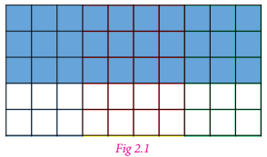
In the figure 2.1, the blue shaded portion of the grid represents the fraction 30 by 50 . Which is equal to 60 divided by 100 or 0.60 or 0.6 or 60%.
Try these
There are 50 students in class 7 of ye school. The number of students involved in these activities are
Scout 7
Red Ribbon Club 6
Junior Red Cross 9
Green Force 3
Sports 14
Cultural activity 11
Find the percentage of students who involved in various activities.
All numbers which are represented using numerator and denominator are fractions. They can have any number as ye denominator. If the denominator of the fraction is hundred then it can be very easily expressed as ye percentage. Let us try to convert different fraction to percentage.
Example 2.1
Write 1 by 5 as per cent.
Solution
We have 1 by 5 equal to 1 by 5 multiplied by 100 by 100 equal to 1 by 5 multiplied by 100% equal to 100 by 5% equal to 20%
Example 2.2
Convert 7 by 4 to per cent
Solution
We have 7 by 4 equal to 7 by 4 multiplied by 100 by 100 equal to 7 by 4 multiplied by 100% equal to 700 by 4% equal to 175%
Example 2.3
Out of 20 beads, 5 beads are red. What is the percentage of red.
Solution
We have 5 by 20 equal to 5 by 20 multiplied by 100 by 100 equal to 5 by 20 multiplied by 100% equal to 500 by 20% equal to 25%
Example 2.4
Convert the fraction 23 by 30 as percent.
Solution
We have 23 by 30 equal to 23 by 30 multiplied by 100 by 100 equal to 23 by 30 multiplied by 100% equal to 76 2 by 3%
From these examples we see that the percentage of proper fractions are less than 100 and that of improper fractions are more than 100.
Try these
Convert the fractions as percentage
1) 1 by 20
2) 13 by 25
3) 45 by 50
4) 18 by 5
5) 27 by 10
6) 72 by 90
ye percentage is ye number or ratio expressed as ye fraction of 100. Here, let us try to convert different percentage to fraction.
Example 2.5
Write the following percentage into fraction.
1) 60%
2) 125%
3) 3 by 5%
4) 15 by 10%
5) 28 1 by 3%
Solution
1) 60% equal to 60 by 100 equal to 6 by 10 equal 3 by 5
2) 125% equal to 125 by 100 equal to 5 by 4
3) 3 by 5% (3 by 5) by 100 equal to 3 by 500
4) 15 by 10% equal to (15 by 10) by 100 equal to (3 by 2) by 100 equal to 3 by 200
5) 28 1 by 3% equal to (28 1 by 3) by 100 equal to (85 by 3) by 100 equal to 17 by 60
Try these
Convert the following percentage as fractions.
1) 50%
2) 75%
3) 250%
4) 30 one by 5%
5) 7 by 20%
6) 90%
Example 2.6
In ye survey one out of five people said they preferred ye particular brand of soap. Convert it into percentage?
Solution
Fraction equal to 1 by 5
Percentage equal to 1 by 5 multiplied by 100% equal to 20%
Example 2.7
75 students from ye Government High school appeared for S.S.L.C. examination. 72 of them are declared passed in the examination. Find the percentage of students passed.
Solution
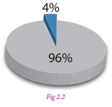
Total number of students equal to 75
Number of students declared passed equal to 72
Percentage equal to 72 by 75 multiplied by 100%
Equal to 24 by 25 multiplied by 100%
Equal to 24 multiplied by 4%
Equal to 96%
Note
All the parts of the whole when added together gives the whole or 100%. So out of 2 parts if we are given 1 part we can definitely find the other part. That is in the above example, if 96% of the students has passed means, 96 out of 100 has passed and the remaining (100 minus 96) % equal 4% have failed.
Example 2.8
In ye class of 50 students if 28 are girls and 22 are boys then express boys and girls in percentage.
Solution
Let us find the percentage of boys and girls. It is given in the form of table below.
|
Number of Students |
Fraction |
Make denominator as 100 |
Percentage |
Girls |
Number of Students 28 |
28 by 50 |
Make denominator as 100 28 by 50 multiplied by 100 by 100 equal to 56 by 100 |
Percentage 56% |
Boys |
Number of Students 22 |
22 by 50 |
Make denominator as 100 22 by 50 multiplied by 100 by 100 equal to 44 by 100 |
Percentage 44% |
Total |
Number of Students 50 |
Express in fraction |
Make denominator as 100 |
Percentage 100% |
To find the percentage of boys and girls we can also use unitary method or multiply both numerator and denominator by ye same number which makes denominator 100.
Example 2.9
There are 560 students in ye school. Out of 560 students, 320 are boys. Find the percentage of girls in that school.
Solution
Total number of students equal to 560
Number of boys equal to 320
Number of girls equal to 560 minus 320 equal to 240
Percentage equal to 240 by 560 multiplied by 100% equal to 24 by 56 multiplied by 100%
Equal to 3 by 7 multiplied by 100% equal to 300 by 7%
Equal to 42.86%
Think
1) What is the difference between 0.01 and 1%
2) In ye readymade shop there will be ye board showing up to 50% off. Most of the people will realize that everything is half of its original price, Is that true?
Exercise 2.1
1. In each of the following grid, find the number of coloured squares and express it as ye fraction, decimal and percentage.
1)
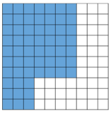
2)
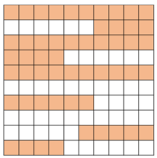
3)
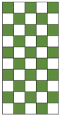
4)
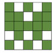
5)
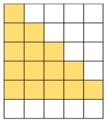
2. ye picture of chess board is given,
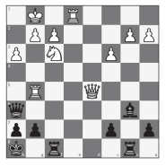
1) Find the percentage of the white coloured squares.
2) Find the percentage of grey coloured squares.
3) Find the percentage of the squares that have the pieces and
4) The squares that do not have the pieces.
3. ye picture of dart board is given. Find the percentage of white coloured portion and black coloured portion
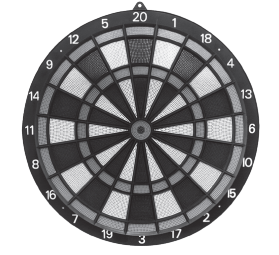
4. Write each of the following fraction as percentage.
1) 36 by 50
2) 81 by 30
3) 42 by 56
4) 2 1 by 4
5) 1 3 by 5
5. Anbu scored 436 marks out of 500 in his exams. What was the percentage he scored?
6. Write each of the following percentage as fraction.
1) 21%
2) 93.1%
3) 151%
4) 65%
5) 0.64%
7. Iniyan bought 5 dozen eggs. Out of that 5 dozen eggs, 10 eggs are rotten. Express the number of good eggs as percentage.
8. In an election, Candidate X Secured 48% of votes. What fraction will represent his votes?
9. Ranjith’s total income was 7,500.rupee He saved 25% of his total income. Find the amount saved by him.
Objective type Questions
10. Thendral saved one fourth of her salary. Her savings percentage is
1) 3 by 4%
2) 1 by 4%
3) 25%
4) 1%
11. Kavin scored 15 out of 25 in ye test. The percentage of his marks is
1) 60%
2) 15%
3) 25%
4) 15 by 25
12. 0.07% is
1) 7 by 10
2) 7 by 100
3) 7 by 1000
4) 7 by 10,000
We have seen how to convert fractions into per cent. Let us now learn how to convert decimals into per cent.
Example 2.10
Convert the given decimals to percentage
1) 0.85
2) 0.05
3) 0.3
4) 0.025
5) 2.25
Solution
1) 0.85 equal to 0.85 multiplied by 100% equal to 85 by 100 multiplied by 100% equal to 85%
2) 0.05 equal to 5 by 100 multiplied by 100% equal to 5%
3) 0.3 equal to 3 by 10 multiplied by 100% equal to 30%
4) 0.025 equal to 25 by 1000 multiplied by 100% equal to 25 by 10% equal to 5 by 2% or 2.5%
5) 2.25 equal to 225 by 100 multiplied by 100% equal to 225%
Try these
Convert these decimals to percentage
1) 0.25
2) 0.07
3) 0.8
4) 0.375
5) 3.75
We have seen conversion of decimals to percentage. We can also do the reverse process, that is when the percentage is given we can convert them to decimals.
Examples 2.11
Convert the given percentage to decimals.
1) 58%
2) 8%
3) 30%
4) 120%
5) 1.25%
Solution
1) 58% equal to 58 by 100 equal to 0.58
2) 8% equal to 8 by 100 equal to 0.08
3) 30% equal to 30 by 100 equal to 0.3
4) 120% equal to 120 by 100 equal to 1.2
5) 1.25% equal to 1.25 by 100 equal to 0.0125
From the above examples we see that to convert percentage to decimals we first convert it into fraction and get the solution.
Try these
Write these percentage as decimals.
1) 3%
2) 25%
3) 80%
4) 67%
5) 17.5%
6) 135%
7) 0.5%
Example 2.12
Malar bought 1.75 metre fabric from ye roll of 25 metre. Express the fabric bought in terms of percentage?
Solution
Total length of the fabric equal to 25 metre
Length of the fabric bought equal to 1.75 metre
Percentage of the fabric bought equal to 1.75 by 25 multiplied by 100 by 100 equal to175 by (25 multiplied by 100) equal to 7 by 100 equal to 7%
Area as percentage
Percentages also help us to estimate the area.
Example 2.13
How many per cent in the figure 2.3 is shaded as blue?
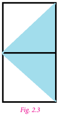
Solution
The fraction in the figure 2.3 that is shaded equal to 2 by 4 equal to 1 by 2
That is half of the figure 2.3 is shaded blue.
So, the percentage of shaded portion equal to 1 by 2 multiplied by 100% equal to 50%
Thus, 50% of the figure 2.3 is shaded.
Exercise 2.2
1. Write each of the following percentage as decimal.
1) 21%
2) 93.1%
3) 151%
4) 65%
5) 0.64%
2. Convert each of the following decimal as percentage.
1) 0.282
2) 1.51
3) 1.09
4) 0.71
5) 0.858
3. In an examination a student scored 75% of marks. Represent the given percentage in decimal form?
4. In ye village 70.5% people are literate. Express it as ye decimal.
5. Scoring rate of ye batsman is 86%. Write his strike rate as decimal.
6. The height of ye flag pole in ye school is 6.75 metre. Express it as percentage.
7. The weights of two chemical substances are 20.34 gram and 18.78 gram. Write the difference in percentage.
8. Find the percentage of shaded region in the following figure.
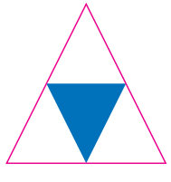
Objectives type Questions
9. Decimal value of 142.5% is
1) 1.425
2) 0.1425
3) 142.5
4) 14.25
10. The percentage of 0.005 is
1) 0.005%
2) 5%
3) 0.5%
4) 0.05%
11. The percentage of 4.7 is
1) 0.47%
2) 4.7%
3) 47%
4) 470%
We have seen how percentage are used in comparison of quantities. We also learnt to convert fractions and decimals to percentage and vice versa.
Now we shall see some situations that use percentage in real life such as 5% of income is allotted for saving; 20% of children’s picture book is coloured green; a book distributor gets 10% of profit on every book sold by him. What can we conclude from these situations.
Percentage as ye value
Example 2.14
There are 50 students in ye class. If 14% are absent on particular day, find the number of students present in the class.
Solution
Number of students absent on ye particular day equal to 14 % of 50
Equal to 14 by 100 multiplied by 50 equal to 7
Therefore, the number of students present equal to 50 minus 7 equal to 43 students
Example 2.15
Kuralmathi bought ye raincoat and saved 25 rupee with discount of 20%. What was the original price of the raincoat?
Solution
Let the price of the raincoat (in rupee) be P. so 20% of P equal to 25
20 by 100 multiplied by P equal to 25
P equal to (25 multiplied by 100) by 20 equal to 125
Therefore, the original price of the raincoat is 125 rupee.
![The pie graph shows the population shares of states and union territories in India for the year 2011 Uttar pradesh 16% Maharashtra 9% Bihar 9% West Bengal 8% Andhra pradesh 7% Madhya pradesh 6% Tamil Nadu 6% Rajasthan6% karnataka and Gujarat5% Odisha,Kerala,Jharkhand and Assam 3% Punjab, Haryana and Chhattisgarh2% Delhi,Jammu and Kashmir and uttarakhand 1% other states and UTs 2% Below the pie graph, the literacy rate of India in 7 years, for total country, Rural and urban is given in Bar graph with total number of persons, Males and Females](images/image67.png)
Example 2.16
An alloy contains 26% of copper. What quantity of alloy is required to get 260 gram of copper?
Solution
Let the quantity of alloy required be Q gram
Then 26% of Q equal to 260 gram.
26 by 100 multiplied by Q equal to 260 gram
Q equal to (260 multiplied by 100) by 26 gram
Q equal to 26000 by 26 gram
Q equal to 1000 gram
Therefore, the required quantity of alloy is 1000 gram.
Ratios as percentage
Sometimes ingredients used to prepare food can be represented in the form of ratio. Let us see some examples.
Example 2.17
Kulal’s mother makes dosa by mixing the batter made from 1 portion of Black gram with 4 portions of rice. Represent each of the ingredients used in the batter as percentage.
Solution
Representing ingredients used in the batter as ratio, we get, rice is to black gram equal 4 is to 1
Now, the total number of parts is 4 + 1 equal to 5
That is, 4 by 5 portion of rice is mixed with 1 by 5 portion of black gram.
Thus, the percentage of rice would be 4 by 5 multiplied by 100% equal to 400 by 5% equal to 80%
The percentage of black gram would be 1 by 5 multiplied by 100% equal to 100 by 5% equal to 20%
Example 2.18
ye family cleans ye house for pongal celebration by dividing the work in the ratio 1 is to 2 is to 3. Express each portion of work as percentage.
Solution
The total number of parts of the work is 1 + 2 + 3 equal to 6
That is, the work is divided into 3 portions as 1 by 6, 2 by 6 and 3 by 6
Thus, the percentage of 1 by 6th portion of work would be equal to1 by 6 multiplied by 100% equal to 100 by 6% equal to 16 2 by 3%
Similarly, the percentage of 2 by 6th portion of work would be equal to 2 by 6 multiplied by 100% equal to 200 by 6% equal to 33 1 by 3%
Similarly, the percentage of 3 by 6th portion of work would be equal to 3 by 6 multiplied by 100% equal to 300 by 6% equal to 50%
Increase or decrease as Percentage
There are situations where we need to know the increase or decrease of ye certain quantity as percentage. Let us see few examples.
Example 2.19
During Aadi sale the price of shirt decreased from 90 rupee to 50 rupee . What is the percentage of decrease.
Solution
Original price equal to the price of the shirt before Aadi month
Amount of change equal to the decrease in the price equal to 90 minus 50 equal 40 rupee
Therefore, the percentage of decrease equal to (Amount of Change) by (Original amount) multiplied by 100
Equal to 40 by 90 multiplied by 100 equal to 400 by 9
Equal to 44 4 by 9%
Example 2.20
The number of literate persons in a city increased from 5 lakhs to 8 lakhs in 5 years. What is the percentage of increase?
Solution
Original amount equal the number of literate persons initially equal to 5 lakhs
Amount of change equal increase in the number of literate persons equal to 8 minus 5 equal to 3 lakhs
Therefore, the percentage of increase equal to (Amount of change) by (Original amount) multiplied by 100
Equal to 3 by 5 multiplied by 100 equal to 60%
Try these
Level of water in ye tank is increased from 35 litres to 50 litres in 2 minutes, what is the percentage of increase?
Profit or Loss as ye Percentage
We have learnt already profit and loss of items. Now we will see how ye profit or loss can be converted to percentage. That is, to find the profit % or loss%, we will see some examples.
Example 2.21
ye shopkeeper bought ye chair for 325 rupee and sold it for 350 rupee . Find the profit percentage.
Solution
Profit percent equal to Profit by (Cost Price) multiplied by 100
Equal to 25 by 325 multiplied by 100 equal to 100 by 13 equal to 7 9 by 13%
Example 2.22
ye T Shirt bought for 110 rupee is sold at 90 rupee . Find the loss percentage.
Solution
Cost price of T Shirt is 110 rupee and selling price is 90 rupee So, the loss is 20 rupee
Hence, for 100 rupee the loss is 20 by 110 multiplied by 100 equal to 200 by 11 equal to 18 2 by 11%
Example 2.23
An item was sold at 200 rupee at ye loss of 4%. What is its selling price?
Solution
To find the loss,
Loss per cent equal to Loss by (Cost Price) multiplied by 100
4% equal to Loss by (Cost Price) multiplied by 100
4% equal to Loss by 200 multiplied by 100
Loss equal to 8 rupee
Selling Price equal to cost price minus Loss
equal to 200 minus 8
equal to 192
Hence the selling price of the item is 192.rupee
Do you know?
The world’s population is growing by 1.10% per year. 50.4% of the world’s population is male and 49.6% is female.
Exercise 2.3
1. 14 out of the 70 magazines at the bookstore are comedy magazines. What percentage of the magazines at the bookstore are comedy magazines?
2. ye tank can hold 50 litres of water. At present, it is only 30% full. How many litres of water will fill the tank, so that it is 50% full?
3. Karun bought ye pair of shoes at ye sale of 25%. Discount sale If the amount he paid was 1000 rupee then find the marked price.
4. An agent of an insurance company gets ye commission of 5% on the basic premium he collects. What will be the commission earned by him if he collects 4800 rupee?
5. ye biology class examined some flowers in ye local Grass land. Out of the 40 flowers they saw,30 were perennials. What percentage of the flowers were perennials?
6. Ismail ordered ye collection of beads. He received 50 beads in all. Out of that 15 beads were brown. Find the percentage of brown beads?
7. Ramu scored 20 out of 25 marks in English, 30 out of 40 marks in Science and 68 out of 80 marks in Mathematics. In which subject his percentage of marks is best?
8. Peter requires 50% to pass. If he gets 280 marks and falls short by 20 marks, what would have been the maximum marks of the exam?
9. Kayal scored 225 marks out of 500 in revision test 1 and 265 out of 500 marks in revision test 2. Find the percentage of increase in her score.
10. Roja earned 18,000 rupee per month. She utilized her salary in the ratio 2 is to 1 is to 3 for education, savings and other expenses respectively. Express her usage of income in percentage.
Selvam said that her sister took ye loan from the bank to do her higher studies. The loan money that she borrowed from the bank is known as sum of principal. The borrower takes some time period to return the money to the bank. To use the money during ye particular period of time, the borrower has to pay an additional amount to the bank. This is known as Interest. so to repay the money borrowed, the borrower has to add the principal and the interest.
That is, Amount equal Principal + Interest
Interest is generally given in per cent for ye period of 1 year per annum. Suppose the bank gives an amount of 100 rupee at an interest rate of 8 rupee , it is written as 8 % per year or per annum or in short 8 % per annum.
It means on every 100 rupee borrowed, 8 rupee is the required interest, to be paid for every one year. To understand this let us consider an example.
Selvam takes ye loan of 10000 rupee at 15% per year as rate of interest. Let us find the interest he has to pay at the end of 1 year.
Sum borrowed equal to 10000
Rate of interest equal to 15% per year.
This means if 100 rupee is borrowed he has to pay 15 rupee as interest.
So, for the borrowed amount of 10000 rupee, the interest for one year would be
15 divided by 100 multiplied by 10000 equal to 1,500 rupee
So, at the end of 1 year, he has to give an amount of equal to 10000 + 1500 equal to 11500 rupee
Now we can write a general relation to find interest for one year. Take P as the principal or sum and r % as Rate per cent per annum. On every 100 rupee borrowed the interest paid is r rupee .Therefore, on P rupee borrowed the interest paid for 1 year would be (P multiplied by r) divided by 100. If the amount is borrowed for more than 1 year then the interest is calculated for the total period during which the money is kept. This way of calculating interest for the total time period for the same Principal is known as simple interest.
We know that on ye Principal of P rupee at r % rate of interest per year, the interest paid for 1 year is (P multiplied by r) divided by 100. Hence the interest I paid for n years would be (P multiplied by n multiplied by r) divided by 100 or P n r divided by 100.
The amount we have to pay at the end of n years is ye equal to P + I
Example 2.24
Find the simple interest on 25,000 rupee at 8% per annum for 3 years?
Solution
Here, the Principal (P) equal to 25,000rupee
Rate of interest (r) equal to 8% per annum
Time (n) equal to 3 years
Simple Interest (I)equal to P multiplied by n multiplied by r divided by 100
Equal to (25000 multiplied by 3 multiplied by 8) divided by 100 equal to 6000
Hence, Simple Interest (I) is 6,000 rupees
Try these
1. Arjun borrowed ye sum of 5,000 rupee from ye bank at 5% per annum. Find the interest and amount to be paid at the end of three year.
2. Shanthi borrowed 6,000 rupee from ye Bank for 7 years at 12% per annum. What amount will clear off her debt?
Example 2.25
Kumaravel has paid simple interest on ye certain sum for 2 years at 10% per annum is 750 rupee . Find the sum.
Solution
Given the rate of interest (r) equal to 10% per annum
Time (n) equal to 2 years
We know that simple interest (I) equal to P multiplied by n multiplied by r divided by 100
750 equal to (P multiplied by 2 multiplied by 10) divided by 100
Therefore, Principal (P) equal to (750 multiplied by 100) divided by (2 multiplied by 10) equal to 3750
Therefore, Kumaravel has borrowed ye sum of 3,750 rupee
Example 2.26
In what time will 5,600 rupee amount to 6,720 rupee at 6% per annum?
Solution
Principal (P) equal to 5,600 rupee
Rate (r) equal to 6% per annum
Amount equal to 6,720 rupee
Amount equal to Principal + Interest
Interest equal to Amount minus Principal
equal to 6720 minus 5600 equal to 1120
We know that simple Interest I equal P multiplied by n multiplied by r divided by 100
1120 equal to (5600 multiplied by 6 multiplied by n) divided by 100
Therefore, n equal to (1120 multiplied by 100) divided by (5600 multiplied by 6) equal to 3 1 by 3 years
Example 2.27
Sathish Kumar borrowed 52,000 rupee from ye money lender at a particular rate of simple interest. After 4 years, he paid 79,040 rupee to settle his debt. At what rate of interest, he borrowed the money?
Solution
Principal (P) equal to 52,000 rupee
Time (n) equal to 4 years
Interest equal to Amount minus Principal
equal to 79040 minus 52000 equal to 27040
we find the simple interest (I) equal to P multiplied by n multiplied by r divided by 100
Therefore, 27040 equal to (52000 multiplied by r multiplied by 4) divided by 100
Rate of interest he borrowed (r) equal to (27040 multiplied by 100) divided by (52000 multiplied by 4) equal to 13%
Example 2.28
ye sum of 46,000 rupee was lent out at simple interest and at the end of 1 year and 9 months, the total amount was 52,440 rupee . Find the rate of interest per year.
Solution
ye Equal to P + I
I equal to ye minus P
Equal to 52440 minus 46000
Equal to 6,440 rupee
r equal to ?
we know that, (I) equal to P multiplied by n multiplied by r divided by 100
(1 year 9 months equal to 1 9 by 12
Equal to 1 3 by 4
Equal to 7 by 4)
Therefore, 6440 equal to (46000 multiplied by r multiplied by 7 by 4) divided by 100
6440 equal to 46000 multiplied by r multiplied by 7 by 4 multiplied by 1 by 100
r equal to (6440 multiplied by 4 multiplied by 100) divided by (46000 multiplied by 7)
Equal to 8%
Example 2.29
ye principal becomes 10,050 rupee at the rate of 10% in 5 years. Find the principal.
Solution
ye equal to 10,050 rupees
n equal to 5 years
r equal to 10%
P equal to?
For calculating principal with the given data, we proceed as follows.
We know that,
I equal to P multiplied by n multiplied by r divided by 100
ye equal to P + I
ye equal to P + P multiplied by n multiplied by r divided by 100
ye equal to P (1 + nr divided by 100)
Therefore, 10,050 equal to P (1 + (10 multiplied by 5) divided by 100)
Equal to P (1 + 50 divided by 100)
Equal to P (150 divided by 100)
Equal to P (3 by 2)
Therefore, P equal to 10,050 multiplied by 2 by 3 equal to 3350 multiplied by 2 equal to 6700
Hence, Principal equal to 6700 rupee.
Think
In simple interest, ye sum of money doubles itself in 10 years. In how many years it will get triple itself.
Exercise 2.4
1. Find the simple interest on 35,000 rupee at 9% per annum for 2 years?
2. Aravind borrowed a sum of 8000 rupee from Akash at 7% per annum. Find the interest and amount to be paid at the end of two years.
3. Sheela has paid simple interest on ye certain sum for 4 years at 9.5% per annum is 21,280 rupee Find the sum.
4. Basha borrowed 8,500 rupee form ye bank at ye particular rate of simple interest. After 3 years, he paid 11,050 rupee to settle his debt. At what rate of interest he borrowed the money?
5. In what time will 16,500 rupee amount to 22,935 rupee at 13% per annum?
6. In what time will 17,800 rupee amount to 19,936 rupee at 6% per annum?
7. ye sum of 48,000 rupee was lent out at simple interest and at the end of 2 years and 3 months the total amount was 55,560 rupee. Find the rate of interest per year.
8. ye principal becomes 17,000 rupee at the rate of 12% in 3 years. Find the principal.
Objective type Questions
9. The interest for ye principal of 4,500 rupee which gives an amount of 5,000 rupee at end of certain period is
1) 500 rupee
2) 200 rupee
3) 20%
4) 15%
10. Which among the following is the simple interest for the principle of 1,000 rupee for one year at the rate of 10% interest per annum?
1) 200 rupee
2) 10 rupee
3) 100 rupee
4) 1,000 rupee
11. Which among the following rate of interest yields an interest of 200 rupee for the principle of 2,000 rupee for one year.
1) 10%
2) 20%
3) 5%
4) 15%
Exercise 2.5
Miscellaneous practice problems
1. When Mathi was buying her flat she had to put down ye deposit of 1by 10 of the value of the flat.What percentage was this?
2. Yazhini scored 15 out of 25 in ye test. Express the marks scored by her in percentage.
3. Out of total 120 teachers of ye school 70 were male. Express the number of male teachers as percentage.
4. ye cricket team won 70 matches during ye year and lost 28 matches and no results for two matches. Find the percentage of matches they won.
5. There are 500 students in ye rural school. If 370 of them can swim, what percentage of them can swim and what percentage cannot?
6. The ratio of Saral’s income to her savings is 4 is to 1. What is the percentage of money saved by her?
7. ye salesman is on ye commission rate of 5%. How much commission does he make on sales worth 1500 rupee?
8. In the year 2015 ticket to the world cup cricket match was 1500 rupee. This year the price has been increased by 18%. What is the price of ye ticket this year?
9. 2 is what percentage of 50?
10. What percentage of 8 is 64?
11. Stephen invested 10000 rupee in ye savings bank account that earned 2% simple interest. Find the interest earned if the amount was kept in the bank for 4 years.
12. Riya bought 15,000 rupee from ye bank to buy ye car at 10% simple interest. If she paid 9,000 rupee as interest while clearing the loan, find the tie for which the loan was given.
13. In how much time will the simple interest on 3,000 rupee at the rate of 8% per annum be the same as simple interest on 4,000 rupee at 12% per annum for 4 years?
Challenge Problems
14. ye man travelled 80 kilometre by car and 320 kilometre by train to reach his destination. Find what percent of total journey did he travel by car and what per cent by train?
15. Lalitha took ye math test and got 35 correct and 10 incorrect answers. What was the percentage of correct answers?
16. Kumaran worked 7 months out of the year. What percentage of the year did he work?
17. The population of ye village is 8000. Out of these, 80% are literate and of these literate people, 40% are women. Find the percentage of literate women to the total population?
18. ye student earned ye grade of 80% on ye math test that had 20 problems. How many problems on this test did the student answer correctly?
19. ye metal bar weighs 8.5 kilogram. 85% of the bar is silver. How many kilograms of silver are in the bar?
20. Concession card holders pay 120 rupee for ye train ticket Full fare is 230 rupee . What is the percentage of discount for concession card holders?
21. ye tank can hold 200 litres of water. At present, it is only 40% full. How many litres of water to fill in the tank, so that it is 75% full?
22. Which is greater 16 2by 3 or 2 by 5 or 0.17?
23. The value of ye machine depreciates at 10% per year. If the present value is 1,62,000 rupees, what is the worth of the machine after two years.
24. In simple interest, ye sum of money amounts to 6,200 rupee in 2 years and 6,800 rupee in 3 years. Find the principal and rate of interest.
25. ye sum of 46,900 rupee was lent out at simple interest and at the end of 2 years, the total amount was 53,466 rupee Find the rate of interest per year.
26. Arun lent 5,000 rupee to Balaji for 2 years and 3,000 rupee to Charles for 4 years on simple interest at the same rate of interest and received 2,200 rupee in all from both of them as interest. Find the rate of interest per year.
27. If ye principal is getting doubled after 4 years, then calculate the rate of interest.
(Hint: Let P equal to 100 rupee)
Summary
ICT Corner
Percentage and Simple interest
Expected outcome
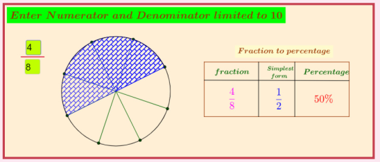
Step 1
Open the Browser and type the URL link given below (or) Scan the QR Code. GeoGebra work sheet named “Fraction to Percent” will open. Enter the numerator and denominator upto 10 and check the fraction and percentage.
Step 2
Click on “Simple interest problem” in the left side and enter P, N and R values in the box given. Find the Simple Interest and Amount and check your answer.
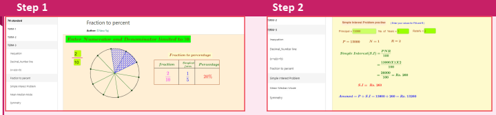
Browse in the link
Fraction to percent: https://www.geogebra.org/m/f4w7csup#material/frbmnsrw
Or Scan the QR Code
Learning Objectives

In earlier classes, we have learnt to construct algebraic expressions using exponential notations. For example, x square + 3 x + 2 is an algebraic expression in the variable x. This can also be written as an equation x square + 3 x equal to minus 2.
By substituting numerical values for x, we can verify this equation.
If x equal to minus 2, then L.H.S equal x square + 3 x equal to (minus 2) square + 3 multiplied by (minus 2)
Equal to 4 minus 6
Equal to minus 2 equal R.H.S
Hence, this equation is true when x equal to minus 2
If x equal to minus 1, then L.H.S equal to x square + 3 x equal to (minus 1) square + 3 multiplied by (minus 1)
Equal to 1 minus 3
Equal to minus 2 equal to R.H.S
Hence, this equation is true when x equal to minus 1
But when x equal to 1 then, L.H.S equal x square + 3 x equal to (1) square + 3 multiplied by (1)
Equal to 1 + 3
Equal to 4 not equal to R.H.S
Thus, this equation is not true when x equal to 1
Thus, x square + 3 x equal to minus 2 is an equation which is true only when x takes the values minus1 and minus2. Hence, an equation is true only for certain values of the variable in it.
It is not true for all values of the variables.
Now, consider the algebraic expression, (ye + b) square equal to ye square + 2 ye b + b square. Let us try to find the values of the expression for the given values of ye and b.
For example, When ye equal to 3 and b equal to 5
LHS equal to (ye + b) square equal to (3 + 5) square equal to 8 square equal to 8 multiplied by 8 equal to 64
RHS equal to ye square + 2 ye multiply by b + b square equal to 3 square + (2 multiplied by 3 multiplied by 5) + 5 square equal 9 + 30 + 25 equal to 64
Thus, for ye equal to 3 and b equal to 5 LHS equal to RHS
Similarly, when ye equal to 4 and b equal to 7
LHS equal to (ye + b) square equal to (4 + 7) square equal to 11 square equal to 121
RHS equal to ye square 2 + 2 ye multiplied by b + b square equal to 4 square + 2 multiplied by 4 multiplied by 7 + 7 square equal to 16 + 56 + 49 equal to 121
Also, for ye equal to 4 and b equal to 7, LHS equal to RHS
Thus, we shall find that for any value of ‘ye’ and ‘b’ LHS equal to RHS. Such an equality, which is true for every value of the variable in it is called an identity. Thus, we observe that the equation (ye + b) square equal ye square + 2 ye multiplied by b + b square is an identity.
In general, algebraic equalities which hold true for all the values of the variables are called identities. Let us see the basic identities with geometrical proof.

We have already learnt that the operation of multiplication can be modelled in different ways. The one that we use in this unit is the representation of multiplication as a product table that is similar to area.

For example, the product 5 multiplied by 3 can be represented as shown in figure 3.1, which has five rows and three columns and it comparises 15 small squares. From figure 3.2, it is also clear that the product of 5 multiplied by 3 is the same as the product of 3 multiplied by 5 (since, multiplication is commutative)
Here, multiplication is represented using grid model. The same can be represented using area model.

The area model hels us to understand multiplication by decomposing the area of large rectangle into areas of smaller rectangles. Also the same example which is discussed above may be decomposed as,

5 multiplied by 3 equal to (2 multiplied by 3) + (2 multiplied by 2) + (1 multiplied by 3) + (1 multiplied by 2)
Equal to 6 + 4 + 3 + 2
Equal to 15
This decomposition model is very useful when we are finding the product of large numbers.
Think
Is it the only way to decomposer the number representing length and breadth? Discuss.
Note
It can be practiced not to draw the area models in proportions to the numbers, since it stimulates abstract represention.
Let us try to extend this concept of multiplication for variables.

Take few tiles in rectangular shape of length 'x' and breadth 'y'. Also the area of one tile is x multiplied by y.
Arrange them as shown in figure 3.3 and try to find its area.
In figure 3.3, 6 tiles create a rectangular shape. Area of each tile is xy, hence the area of the shape is 6 multiplied by x y equal to 6 x y equation (1)

The same area can also be found out by taking the length of the rectangular shape (figure 3.4) as x + x + x equal to 3 x and breadth as y + y equal to 2 y.
Hence, its area equal 3 x multiplied by 2 y equation (2)

Also, the same area (6 x y) can be represented by taking the length of the rectangular shape as y + y equal to 2y and the breadth as x + x + x equal to 3 x
Then the area of the rectangular shape (figure 3.5) so obtained equal 2 y multiplied by 3 x equation (3)
Since all the areas are same, from (1), (2) and (3) we get,
6 x y equal to 3 x multiplied by 2 y equal to 2 y multiplied by 3 x

In our earlier discussion, we saw the geometrical representation of 5 multiplied by 3 (figure 3.1). here we shall replace the second number 3 with 5. We get, 5 multiplied by 5
We get the square number, 5 square equal to 25, that may be represented as,
5 square equal to (3 multiplied by 4) + (1 multiplied by 3) + (4 multiplied by 2) + (1 multiplied by 2)
Equal to 12 + 3 + 8 + 2
Equal to 25
Extending the same for variables in figure 3.5, the rectangular area is made into a square by making the length equal to breadth, that is 2y is taken as 3x which becomes the side of the square.

Now in figure 3.6 the sides are 3 x and area of the square is equal 3 x multiplied by 3 x equation (4)
Also, each area is x square and since there are 9 small squares the area of whole square is 9 x square equation .(5)
Since both the areas equation (4) and equation (5) are equal, we get 3 x multiplied by 3 x equal to 9 x square.

Let us find the product of x and (ye + b). Look at the following figure.
In the figure 3.7, the two rectangles are combined together to form ye new rectangle. Breadth of each of the rectangle are x and their lengths are a and b. So, the length and breadth of the new rectangle are (ye + b) and x respectively.
Thus,
Area of bigger rectangle equal to Area of rectangle 1 + Area of rectangle 2
Therefore, (ye + b) multiplied by x equal to (ye multiplied by x) + (b multiplied by x) [Distributive property]
Equal to ye x + b x
Now, we can conclude that the multiplication of two or more monomials, as given below.
1. If the variables are same in both the monomials then,
Also, 3 x square multiplied by 2 x square equal to (3 multiplied by 2) (x square multiplied by x cube) equal to 6 multiplied by x power (2 + 3) equal to 6 x power 5
2. If the variables are different in both the monomials, then multiply them by expressing it as ye product of the variables. For example, 5 x multiplied by 4 y equal to (5 multiplied by 4) multiplied by (x multiplied by y) equal to 20 x y
Note
Product of monomials is also ye monomial.
Try these
1. Observe the following figures and try to find its area, geometrically. Also verify the same by multiplication of monomial.
1)

2)

3)

4)

5)

2. Let the length and breadth of ye tile be x and y respectively. Using such tiles construct as many rectangles as you can and find out the length and breadth of the rectangles so formed such that its area is
1) 12 x y
2) 8 x y
3) 9 x y
By using this concept of multiplication of monomials, let us try to prove the identities geometrically, which are very much useful in solving algebraic problems.
Consider four regions. One region is square shaped with dimension 3 multiplied by 3 (Grey). Also, the other three regions are rectangle in shape with dimensions 4 multiplied by 3 (Yellow), 3 multiplied by 2 (red) and 4 multiplied by 2 (blue).

Arrange these four regions to form ye rectangular shape as shown in the figure 3.8
By observing figure 3.8, we can note that,
Area of the bigger rectangle equal to Area of ye square (Grey) + Area of Three rectangles
(3 + 4) multiplied by (3 + 2) equal to (3 multiplied by 3) + (4 multiplied by 3) + (3 multiplied by 2) + (4 multiplied by 2)
(3 + 4) multiplied by (3 + 2) equal to (3 multiplied by 3) + 3 multiplied by (4 + 2) + (4 multiplied by 2) equation .(1)
Where, LHS is equal to (3 + 4) multiplied by (3 + 2) equal to 7 multiplied by 5 equal to 35
RHS is equal to (3 multiplied by 3) + 3 multiplied by (4 + 2) + (4 multiplied by 2) equal to 9 + (3 multiplied by 6) + 8
Equal to 9 + 18 + 8 equal to 35
Therefore, LHS equal to RHS
In the similar way as explained above, let us check for another set of four regions as shown in the figure 3.9
Note
We know that,
Area of rectangle equal length multiplied by breadth
Equal to l multiplied by b
Also, area of square
Equal to side multiplied by side
Equal to ye multiplied by ye equal to ye square

By observing figure 3.9, we can note that,
Area of the bigger rectangle equal Area of ye square (grey) + Area of three rectangles

(5 + 4) multiplied by (5 + 1) equal to (5 multiplied by 5) + (5 multiplied by 1) + (5 multiplied by 4) + (1 multiplied by 4)
(5 + 4) multiplied by (5 + 1) equal to (5 multiplied by 5) + 5 multiplied by (1 + 4) + (1 multiplied by 4) equation .(2)
Where, LHS is (5 + 1) multiplied by (5 + 4) equal to 6 multiplied by 9 equal to 54
RHS is 5 square + 5 multiplied by (1 + 4) + (1 multiplied by 4) equal to 25 + (5 multiplied by 5) + 4
Equal to 25 + 25 + 4 equal to 54
Therefore, LHS equal to RHS.
Thus, equation (1) and (2) is true for given set of any three values.
By generalising those three values as 'x', 'ye' and 'b'
We get, (x + ye) multiplied by (x + b) equal to (x multiplied by x) + x multiplied by (ye + b) + (a multiplied by b)
That is, (x + ye) multiplied by (x + b) equal to x square + x multiplied by (ye + b) + a multiplied by b
Hence, (x + ye) multiplied by (x + b) equal to x square + x multiplied by (ye + b) + a multiplied by b is an identity
Now, let us prove this identity, geometrically.

Let one side of ye rectangle be (x + ye) and the other side be (x + b) units.
Then, the total area of the rectangle ye B C D equal to length multiplied by breadth equal to (x + ye) multiplied by (x + b) equation (3)
From the figure 3.10, we can see that the
Area of the rectangle ye B C D equal to area of the square ye F I E + area of the rectangle F B G I + area of the rectangle E I H D + area of the rectangle I G C H
Equal to x square+ ye multiplied by x + b multiplied by x + ye multiplied by b
Equal x square + x multiplied by (ye + b) +a multiplied by b equation .(4)
From (3) and (4) we get, (x + ye) multiplied by (x + b) equal to x square + x multiplied by (ye + b) + ye multiplied by b
Hence, (x + ye) multiplied by (x + b) equal to x square + x multiplied by (ye + b) + ye multiplied by b is an identity.
Note
1. In case if b equal to minus b then the identity is (x + ye) multiplied by (x + (minus b)) equal to x square+ x multiplied by (ye + (minus b)) + ye multiplied by (minus b)
(x + ye) multiplied by (x minus b) equal to x square+ x multiplied by (ye minus b) minus ye multiplied by b
2) If ye equal to minus ye then the identity is (x + (minus ye)) multiplied by (x + b) equal to x square+ x ((minus ye) + b) + (minus ye) multiplied by b
(x minus ye) multiplied by (x + b) equal to x square+ x (b minus ye) minus ye b
3) If ye equal to minus ye and b equal to minus b then the identity is (x + (minus ye)) multiplied by (x + (minus b)) equal to x square + x multiplied by ((minus ye) + (minus b)) + (minus ye) multiplied by (minus b)
(x minus ye) multiplied by (x minus b) equal to x square minus x multiplied by (ye + b) + ye multiplied by b
Example 3.1
Simplify the following using the identity (x + ye) multiplied by (x + b) equal to x square+ x multiplied by (ye + b) + ye multiplied by b
1) (x + 3) multiplied by (x + 5)
2) (y + 8) multiplied by (y + 6)
3) 43 multiplied by 36
1) (x + 3) multiplied by (x + 5)
Solution

Let us represent the expression geometrically, as shown in the figure 3.11
In the rectangle with length (x + 5) and breadth (x + 3), we get,
Area of bigger rectangle equal Area of ye square + Area of three rectangles
Therefore,
(x + 3) multiplied by (x + 5) equal to x square+ 5 multiplied by x + 3 multiplied by x + 15
equal to x square + (5 + 3) multiplied by x + 15
equal to x square + 8 multiplied by x + 15
2) (y + 6) multiplied by (y + 8)
Let us represent the expression geometrically, as shown in figure 3.12.
In the rectangle with length (y + 6) and breadth (y + 8) units, we get,
Area of bigger rectangle equal to Area of square + Area of three rectangles
Therefore,
(y + 6) multiplied by (y + 8) equal to y square+ 6 multiplied by y + 8 multiplied by y + 48
(y + 6) multiplied by (y + 8) equal to y square+ (6 + 8) multiplied by y + 48
Equal to y square+ 14 multiplied by y + 48

3) 43 multiplied by 36 equal to (40 + 3) multiplied by (40 minus 4)
We know the identity
(x + ye) multiplied by (x + b) equal to x square+ x multiplied by (ye + b) + ye multiplied by b
Taking, x equal to 40, ye equal to 3 and b equal to minus 4 we get
(40 + 3) multiplied by (40 minus 4) equal to 40 square+ 40 multiplied by (3 minus 4) + 3 multiplied by (minus 4)
Equal to 1600 + 40 multiplied by (minus 1) minus 12
Equal to 1600 minus 40 minus 12
Equal to 1600 minus 52
Therefore, 43 multiplied by 36 equal to 1548
Consider four regions. Two square shaped regions with the dimensions of 3 multiplied by 3 (Grey) and 2 multiplied by 2 (Blue). Also, there are two rectangle shaped regions and both are in the dimension of 3 multiplied by 2 (Yellow).

Arrange them in ye square shape as shown in the figure 3.13.
By observing the figure 3.13, we can note that
Area of the bigger square equal to Area of two small squares + Area of two rectangles.
(3 + 2) square equal to 3 square + (2 multiplied by 3) + (3 multiplied by 2) + 2 square equal to 3 square + (3 multiplied by 2) + (3 multiplied by 2) + 2 square
[Since, 2 multiplied by 3 equal to 3 multiplied by 2]
Therefore, (3 + 2) square equal to 3 square + 2 multiplied by (3 multiplied by 2) + 2 square
Where, L.H.S is (3 + 2) square equal to 5 square equal to 25 equation (1)
R.H.S is 3 square + 2 multiplied by (3 multiplied by 2) + 2 square equal to 9 + 12 + 4 equal to 25 equation (2)
From (1) and (2), L.H.S equal to R.H.S
Now, we can prove this for the variables ye and b

Let us take ye square ye B C D of side (ye + b), hence its area is (ye + b) multiplied by (ye + b) equal to (ye + b) square
By observing the figure 3.14,
Area of the bigger square ye B C D equal to Area of two small squares (grey and blue) + Area of two rectangles (yellow)
So, (ye + b) square equal to ye square + b multiplied by ye + ye multiplied by b + b square
Equal to ye square+ ye multiplied by b + ye multiplied by b + b square(Since, b multiplied by ye equal to ye multiplied by b)
(ye + b) square equal to ye square+ 2 multiplied by ye b + b square
Hence proved.
Note
If, we substitute b equal to ye in the identity (x + ye) multiplied by (x + b) equal to x square+ x multiplied by (ye + b) + ye multiplied by b, we get,
(x + ye) multiplied by (x + ye) equal to x square + x multiplied by (ye + ye) + ye multiplied by ye
(x + ye) square equal to x square + x multiplied by (2ye) + ye square
(x + ye) square 2 equal to x square + 2 multiplied by ye x + ye square, which is similar to the identity (ye + b) square equal to ye square + 2 multiplied by ye b + b square
Example 3.2
Simplify the following using the identity (ye + b) square equal to ye square+ 2 multiplied by ye b + b square
Solution
1) (2 x + 5) square
Let the side of the square be 2x+5 units. Then its area is side multiplied by side, that is (2 x + 5) square

The geometrical representation of the given expression is as shown in figure 3.15.
Area of the bigger square equal to Area of two squares + Area of two rectangles.
(2 x + 5) square equal to 4 x square+ 25 + 10 multiplied by x + 10 multiplied by x
Equal to 4 x square+ (10 + 10) multiplied by x + 25 (Adding like terms)
Equal to 4 x square + 20 multiplied by x + 25
2) 21 square
Let the side of the square be 21. Hence, its area is 21 square

Consider 21 square as (20 + 1) square which is one of the way to represent it geometrically as shown in figure 3.16.
Now,
Area of the bigger square equal to Area of two squares + Area of two rectangles.
21 square equal to 400 + 1 + 20 + 20 equal to 441
Alter method:

We know the identity
(ye + b) square equal to (ye + b) multiplied by (ye + b)
Equal to ye square + 2 multiplied by ye b + b square
To find the value of 21 square
We take, 21 square equal to (20 + 1) square
Equal to (20 + 1) multiplied by (20 + 1)
Here, ye equal to 20 and b equal to 1
Therefore,
ye square+ 2 multiplied by ye b + b square equal to 20 square + 2 multiplied by 20 multiplied by 1 + 1 square
Equal to 400 + 40 + 1 equal to 441
When we replace 'b' by 'minus b' in ‘identity minus 2’, we get a new identity.

We know that, (ye + b) square equal to ye square + 2 multiplied by ye b + b square
Taking ‘b' as 'minus b' in ‘identity minus 2’, we get, [ye + (minus b)] square equal to ye square + 2 ye multiplied by (minus b) + (minus b) square
(ye minus b) square equal to ye square minus 2 multiplied by ye b + (minus b) multiplied by (minus b)
Therefore, (ye minus b) square equal to ye square minus 2 multiplied by ye b + b square
Note that, when we change the sign of b, the sign of 2 ye b (second term) alone is changed.
Example 3.3
Using the identity (ye minus b) square equal to ye square minus 2 multiplied by ye b + b square, simplify the following:
1. (3 x minus 5 y) square
2. 47 square
Solution
1. (3 x minus 5 y) square
Put ye equal to 3 x and b equal to 5 y in the identity (ye minus b) square equal to ye square minus 2 multiplied by ye b + b square we get,
(3 x minus 5 y) square equal to (3 x) square minus 2 multiplied by (3 x) multiplied by (5 y) + (5 y) square
Equal to 3 square multiplied by x square minus (2 multiplied by 3 multiplied by 5) x y + (5 square multiplied by y square)
Equal to 9 x square minus 30 multiplied by x multiplied by y + 25 y square
2. 47 square equal to (50 minus 3) square
Substituting ye equal to 50 and b equal to 3 in the identity (ye minus b) square equal to ye square minus 2 multiplied by ye b + b square we get
(50 minus 3) square equal to 50 square minus 2 multiplied by 50 multiplied by 3 + 3 square
Equal to 2500 minus 300 + 9
Equal to 2509 minus 300 equal to 2209

In the given figure, ye B equal to ye D equal to ye
So, area of square ye B C D equal to ye square
Also, S B equal to D P equal to b
Area of the rectangle S B C T equal to ye b
Similarly, area of the rectangle D P R C equal to ye b
Also, area of the square T Q R C equal to b square
Area of the rectangle D P Q T equal to ye multiplied by b minus b square
Now, ye S equal to P Q equal to (ye minus b) and ye P equal to S Q equal to (ye + b)
Hence, area of the rectangle ye P Q S (the shaded rectangle) equal to area of square ye B C D minus area of rectangle S T C B + area of rectangle D P Q T
Equal to ye square minus ye multiplied by b + (ye b minus b square)
Equal to ye square minus ye multiplied by b + ye multiplied by b minus b square
Equal to ye square minus b square
Hence, (ye + b) multiplied by (ye minus b) equal to ye square minus b square

Example 3.4
Simplify by using the identity (ye + b) multiplied by (ye minus b) equal to ye square minus b square
1. (3 x + 4) multiplied by (3 x minus 4)
2. 53 multiplied by 47
Solution
1. (3x + 4) multiplied by (3x minus 4)
Substitute ye equal to 3 x and b equal to 4 in the identity (ye + b) multiplied by (ye minus b) equal to ye square minus b square, we get
(3 x + 4) multiplied by (3 x minus 4) equal to (3 x) square minus 4 square
(3 square multiplied by x square ) minus 16 equal to 9 x square minus 16
2. 53 multiplied by 47 equal to (50 + 3) multiplied by (50 minus 3)
Take ye equal to 50 and b equal to 3
Substituting the value of ‘ye’ and ‘b’ in the identity (ye + b) multiplied by (ye minus b) equal to ye square minus b square, we get,
Equal to 50 square minus 3 square
Equal to 2500 minus 9 equal to 2491
Try this
Consider ye square shaped paddy field with side of 48 metre. ye pathway with uniform breadth is surrounded the square field and the length of the outer side is 52 metre. Can you find the area of the pathway by using identities?
ye factor of ye number is the number that exactly divides ye given number without leaving any remainder. For example, the factors of 4 are 1, 2 and 4; the factors of 12 are 1, 2, 3, 4, 6 and 12. And, the number can be expressed as product of its factors such as 12 equal to 1 multiplied by 12 (or) 2 multiplied by 6 (or) 3 multiplied by 4
In the same way, algebraic expressions also have factors that divide the expression exactly. Given an algebraic expression, the factors of that algebraic expression are two or more expressions whose product is the given expression. For example, x square y equal to x multiplied by x multiplied by y, hence the factors of the algebraic expression x square y are x, x and y.
Consider the algebraic expression x square minus 4
Now, x square minus 4 equal to x square minus 2 square equal to (x + 2) multiplied by (x minus 2) [because ye square minus b square equal to (ye + b) multiplied by (ye minus b)]
Therefore, (x + 2) and (x minus 2) are the factors of x square minus 4
Obviously, one is also a factor of x square minus 4
We know that, x square equal to x multiplied by x. Similarly, (x + 5) square equal to (x + 5) multiplied by (x + 5)
Thus, the factors of, (x + 5) square are (x + 5) and (x + 5)
The process of writing an algebraic expression as the product of its factors is called factorisation.
We shall learn more to factorise algebraic expressions, using the basic identities.
Example 3.5
Express the following algebraic expressions as the product of its factors:
1. ye b square
2. minus 3 p q cube
3. 12 em square n square p
Solution
1. ye b square equal to ye multiplied by b multiplied by b
2. minus 3 p q cube equal to minus 3 multiplied by p multiplied by q multiplied by q multiplied by q
3. 12 em square n square p equal to 4 multiplied by 3 multiplied by m multiplied by m multiplied by n multiplied by n multiplied by p equal to 2 multiply by 2 multiply by 3 multiply by m multiply by m multiply by n multiply by n multiply by p
Example 3.6
Factorise by using the identity: ye square minus b square equal to (ye + b) multiplied by (ye minus b)
1. ye square minus 1
2. 9 k square minus 25
3. 64 x square minus 81 y square
Solution
1. ye square minus 1 equal to ye square minus 1 square equal to (ye + 1) multiplied by (ye minus 1) [Since,1 square equal to 1 multiply by 1 equal to 1]
Therefore, the factors of a square minus 1 are (ye + 1) and (ye minus 1)
2. 9 k square minus 25 equal to (3 square multiplied by k square ) minus 5 square equal to (3 k) square minus 5 square [Since, ye power m multiplied by b power m equal to (ye multiplied by b) power m]
Equal to (3 k + 5) multiplied by (3 k minus 5) [Since, ye square minus b square equal to (ye + b) multiplied by (ye minus b)]
Therefore, the factors of 9 k square minus 25 are (3 k + 5) and (3 k minus 5).
3. 64 x square minus 81 y square equal to (8 square multiplied by x square ) minus (9 square multiplied by y square ) equal to (8 x) square minus (9 y) square
Equal to (8 x + 9 y) multiplied by (8 x minus 9 y)
Therefore, the factors of 64 x square minus 81 y square are (8 x + 9 y) and (8 x minus 9 y)
Example 3.7
Factorise 9 x square + 30 x y + 25 y square
Solution
9 x square + 30 multiplied by x multiplied by y + 25 y square equal to (3 square multiplied by x square ) + (2 multiplied by 3 multiplied by 5) multiplied by x y + (5 square multiplied by y square )
Equal to (3 x) square + 2 multiplied by (3 x) multiplied by (5 y) + (5 y) square
This expression is in the form of identity ye square+ 2 ye b + b square equal to (ye + b) square
Hence, (3 x) square + 2 multiplied by (3 x) multiplied by (5 y) + (5 y) square equal to (3 x + 5 y) square equal to (3 x + 5 y) multiplied by (3 x + 5 y)
Therefore, the factors of 9 x square + 30 x y + 25 y square are (3 x + 5 y) and (3 x + 5 y)
Think
Can we factorise the following expressions using any basic identities? Justify your answer.
1) x square + 5 x + 4
2) x square minus 5 x + 4
Example 3.8
Factorise 4 x square minus 4 multiplied by x multiplied by y + y square
Solution
4 x square minus 4 x y + y square equal to 2 square multiplied by x square minus (2 multiplied by 2) multiplied by x y + y square
Equal to (2 x) square minus 2 multiplied by (2 x) multiplied by y + y square
This expression is in the form of identity ye square minus 2 ye b + b square equal to (ye minus b) square
Say, 2 x equal to ye and y equal to b thus we have,
(2 x) square minus (2 multiplied by (2 x) multiplied by y + y square equal to (2 x minus y) square
Equal to (2 x minus y) multiplied by (2 x minus y)
Therefore, the factors of 4 x square minus 4 x y + y square are (2 x minus y) and (2 x minus y)
Example 3.9
Factorise x square minus 2 x y + y square minus z square
Solution
x square minus 2 x y + y square minus z square equal to (x square minus 2 multiplied by x multiplied by y + y square) minus z square equal to (x minus y) square minus z square [by identity 3]
Let, (x minus y) equal to ye and z equal to b
Therefore, (x minus y) square minus z square equal to ye square minus b square
We know that, ye square minus b square equal to (ye + b) multiplied by (ye minus b) [Identity 4]
Hence, x square minus 2 x y + y square minus z square equal to (x minus y + z) multiplied by (x minus y minus z)
Therefore, the factors of x square minus 2 x y + y square minus z square are (x minus y + z) and (x minus y minus z)
Activity
Here is an interesting number game to thrill your friends. Follow the steps.
Exercise 3.1
1. Fill in the blanks.
1) (p minus q) square equal to Dash
2) The product of (x + 5) and (x minus 5) is Dash
3) The factors of x square minus 4 x + 4 are Dash
4) Express 24 ye b c square as product of its factors is Dash
2. Say whether the following statements are True or False.
1) (7 x + 3) multiplied by (7 x minus 4) equal to 49 x square minus 7 x minus 12
2) (ye minus 1) square equal to ye square minus 1
3) (x square + y square ) multiplied by (y square + x square ) equal to (x square + y square ) whole square
4) 2 p is ye factor of 8 p q
3. Express the following as the product of its factors.
1) 24 ye b square c square
2) 36 x cube y square z
3) 56 em n square p square
4. Using the identity (x + ye) multiplied by (x + b) equal to x square + x multiplied by (ye + b) + ye b, find the following product.
1) (x + 3) multiplied by (x + 7)
2) (6 ye + 9) multiplied by (6 ye minus 5)
3) (4 x + 3 y) multiplied by (4 x + 5 y)
4) (8 + p q) multiplied by (p q + 7)
5. Expand the following squares, using suitable identities.
1) (2 x + 5) square
2) (b minus 7) square
3) (m n + 3 p) square
4) (x y z minus 1) square
6. Using the identity (ye + b) multiplied by (ye minus b) equal to ye square minus b square, find the following product,
1) (p + 2) multiplied by (p minus 2)
2) (1 + 3b) multiplied by (3 b minus 1)
3) (4 minus m n) multiplied by (m n + 4)
4) (6 x + 7 y) multiplied by (6 x minus 7 y)
7. Evaluate the following, using suitable identity.
1) 51 square
2) 103 square
3) 998 square
4) 47 square
5) 297 multiplied by 303
6) 990 multiplied by one thousand ten
7) 51 multiplied by 52
8. Simplify: (ye + b) square minus 4 ye b
9. Show that (m minus n) square + (m + n) square equal to 2 multiplied by (m square + n square)
10. If ye + b equal to 10 and ye b equal to 18 find the value of ye square + b square
11. Factorise the following algebraic expressions by using the identity ye square minus b square equal to (ye + b) multiplied by (ye minus b)
1) z square minus 16
2) 9 minus 4 y square
3) 25 ye square minus 49 b square
4) x power 4 minus y power 4
12. Factorise the following using suitable identity.
1) x square minus 8 x + 16
2) y square + 20 y + 100
3) 36 m square + 60 m + 25
4) 64 x square minus 112 x y + 49 y square
5) ye square + 6 ye b + 9 b square minus c square
Objective Type Questions
13. If ye + b equal to 5 and ye square + b square equal to 13, then ye b equal to ?
1) 12
2) 6
3) 5
4) 13
14. (5 + 20) multiplied by (minus 20 minus 5) equal to ?
1) minus 425
2) 375
3) minus 625
d) 0
15. The factors of x square minus 6 x + 9
1) (x minus 3) multiplied by (x minus 3)
2) (x minus 3) multiplied by (x + 3)
3) (x + 3) multiplied by (x + 3)
4) (x minus 6) multiplied by (x + 9)
16. The common factors of the algebraic expressions ye x square y, b x y square and c x y z is
1) x square y
2) x y square
3) x y z
4) x y
Earlier we have learnt to construct linear equations. Let us now study about Inequations.
As per the norms the minimum age limit to own ye driving licence is 18 years. Therefore, when Rajiv owns ye driving licence, we can say that he is at least 18 years of age.
Now, if Rajiv’s age is represented by x, then this statement can be written mathematically as x greater than or equal to 18, that is, we are not sure about his age, still we can say that his age is greater than or equal to 18 years.
Similarly, the statement ‘This jug can hold up to 5 litres of water’ can be written mathematically as x less than or equal to 5, where x represents the volume of water in the jug.
We know that, the sum of the measures of any two sides of ye triangle is greater than the measure of its third side. Thus, if the measures of the three sides are represented by ye, b and c units, then we may write this fat as ye + b greater than c, ye +c greater than b and b + c greater than ye.
When x not equal to 10, then either x greater than10 or x less than10. That is, if the value of the variable x is not 10, then the value of x will either be greater than 10 or be less than 10.
An algebraic statement that shows two algebraic expressions being unequal is known as an algebraic inequation.
In general, when two expressions are compared, one might be; less than (less than), less than or equal to, greater than, greater than or equal to the other.
In an inequation, the algebraic expressions are connected by one out of the four signs of inequalities, namely, greater than, greater than or equal to, less than and less than or equal to
Try these
Construct inequations for the following statements:
ye simple linear equation has at most one solution, but ye linear inequation may have many solutions.
To solve an inequation, it is necessary to know the set of values that the variable symbol can be substituted with. The collection of all such values of an inequation is known as solution of the inequation.
For example, the solution of the equation 3 x minus 3 equal to 12 is 5. (How?) Let us find the solution for the inequation 3 x minus 3 less than 12, where x is ye natural number. Note that, the solutions of this inequation are ‘natural numbers. Now,
Add 3 on both sides, we get 3 x minus 3 + 3 less than 12 + 3 implies 3 x less than 15
Divide by 3 on both sides, we get 3 x divided by 3 less than 15 divided by 3 implies x less than 5
Hence, x takes value which is less than 5 and x is ye natural number. Thus, the solution for this inequation are 1, 2, 3 and 4.
Note
When x is not restricted to ye natural number, the solution includes all values less than 5.
Rules to solve inequation
While solving an inequation, the rules for transposition in case of inequalities are the same as for equations.
Note
When both sides of an inequation are multiplied or divided by the same nonzero negative number, the sign of inequality is reversed. For example, consider 3 greater than12. Multiplying minus 1 on both sides, we get, 3 multiplied by (minus 1) less than 12 multiplied by (minus 1) minus 3 less than minus 12.
But, it is not true. Because, minus 3 is greater than minus 12
So, minus 3 greater than minus 12. Note that the sign of inequality is reversed.
To generalize, when x less than y is multiplied by minus 1 on both sides, we get, minus x greater than minus y.
Do you know?
Interchanging the expressions on both sides of an equation does not make any change in the equation. For example, x + 3 equal to 5 and 5 equal to x + 3 both are same.
But, if the expressions on both sides of an inequation are interchanged, the sign of inequality must be reversed.
For example, 30 greater than 20 is the same as 20 less than 30 and minus 18 less than minus 19 is the same as minus 9 greater than minus 18

Example 3.10
Solve: 2 x + 4 less than 18, where x is ye natural number.
Solution
2 x + 4 less than 18
2 x + 4 minus 4 less than 18 minus 4 [Subtracting 4 from both sides]
2 x less than 14 [Divide by 2 on both sides]
X less than 7
Since the solution belongs to natural numbers, that are less than 7, we take the values of the x as 1, 2, 3, 4, 5 and 6.
Therefore, the solutions are 1, 2, 3, 4, 5 and 6
Example 3.11
Solve: 5 minus 7 x greater than or equal to 33, where x is an integer.
Solution
5 minus 7 x greater than or equal to 33
5 minus 5 minus 7 x greater than or equal to 33 minus 5 [Subtracting 5 from both sides]
Minus 7 x greater than or equal to28
(minus 7 x) divided by (minus 7) greater than or equal to 28 divided by (minus 7) [Dividing both sides by minus7]
X less than or equal to minus 4 [Since, it is divided by ye negative number, the inequality is reversed]
Since, solution belongs to the set of integers, that are less than minus 4, we take the values of x as minus 4, minus 5, minus 6…
Therefore, the solutions are minus 4, minus 5, minus 6 so on
Think
Hameed saw a stranger in the street. He told his parent, The stranger’s age is between 40 to 45 years, and his height is between 160 to 170 centimetre
Convert the above verbal statement into an algebraic inequations by using x and y as variables of age and height.
Example 3.12
If one worker earns 200 rupee per day, how many workers can be employed within ye monthly of 3 Lakh rupee?
Solution
Let the number of workers be x
Then, the wages that x workers will earn per day equal to rupee 200 x
The wages that x workers will earn per month equal to rupee (200 x multiplied by 30) equal to rupee 6000 x
Given that, this amount cannot exceed three lakhs rupees
Otherwise, it can be written as 6000 x less than or equal to three lakhs
6000 x divided by 6000 less than or equal to three lakhs divided by 6000 [Divide by 6000 on both sides]
X less than or equal to 50
Thus, up to 50 workers can be employed on ye monthly budget of three lakhs rupees
The solutions of an inequation can be represented on the number line by marking the true values of solutions with different colour on the number line.
Look into the following inequations and its graphical representation on number line. Here, we consider the solution belongs to natural numbers. That is, each and every value of the solution is ye natural number.
1. When x less than3, the solution in natural numbers are 1 and 2. Its graph on number lines shown below:

2. When x greater than or equal to3 the solutions are natural numbers 3, 4, 5 so on and its graph is as shown below:

3. To mark the values represented by the inequation 2 less than or equal to x less than or equal to5, the solutions are set of natural numbers 2, 3, 4 and 5 and its graph is as given below:

Example 3.13
Represent the solutions minus 8 less than 2x less than10 in ye number line, where x is ye natural number.
Solution
Minus 8 less than 2 x less than 10
(minus 8) divided by 2 less than 2 x divided by 2 less than 10 divided by 2 [Dividing the inequation by 2]
Minus 4 less than x less than 5
Since the solution belongs to the set of natural numbers, the solutions are 1, 2, 3 and 4. It’s graph on the number line is shown below:

Note
Since the solution is restricted to natural numbers, minus 3, minus 2, minus 1 and 0 have not been marked as solutions.
Example 3.14
Represent the solutions of 3 x + 9 less than or equal to 12 in a number line, where x is an integer.
Solution
3 x + 9 less than or equal to 12
3 x divided by 3 + 9 divide by 3 less than or equal to 12 divided by 3 [Dividing the inequation by 3 on both sides]
x + 3 less than or equal to 4
x + 3 minus 3 less than or equal to 4 minus 3 [Subtracting 3 from both sides]
x less than or equal to 1
Since the solution belongs to integers, the solutions are 1, 0, minus 1, minus 2,so on. It’s graph on the number line is shown below:

Example 3.15
Solve the inequation: minus 2 less than or equal to z + 3 less than or equal to 5, where z is an integer. Also, represent the solution, graphically.
Solution
Minus 2 less than or equal to z + 3 less than or equal to5
Minus 2 minus 3 less than or equal to z + 3 minus 3 less than or equal to 5 minus 3 [Subtracting minus 3 from the inequation]
Minus 5 less than or equal to z less than or equal to 2
Since the solution belongs to integers, the solutions are minus 5, minus 4, minus 3, minus 2, minus 1, 0, 1, and 2. It’s graph on the number line is shown below:

Example 3.16
Solve graphically:6 y minus 5 less than or equal to 2 y + 7, where y is an integer.
Solution
6 y minus 5 less than or equal to 2 y + 7
6 y minus 2 y minus 5 less than or equal to 2 y minus 2 y + 7 [Subtracting 2y from both sides]
4 y minus 5 less than or equal to 7
4 y minus 5 + 5 less than or equal to 7 + 5 [Adding 5 on both sides]
4 y less than or equal to 12
4 y divided by 4 less than or equal to 12 divided by 4 [Dividing by 4 on both sides]
Y less than or equal to 3
Since the solution belongs to integers, the solutions are 3, 2, 1, 0, minus1, minus 2,so on It’s graph on the number line is shown below:

Exercise 3.2
1. Given that x greater than or equal to y. Fill in the blanks with suitable inequality signs.
1) y Dash x
2) x + 6 Dash y + 6
3) x square Dash x y
4) minus x y Dash minus y square
5) x minus y Dash 0
2. Say True or False
1) Linear inequation has almost one solution.
2) When x is an integer, the solutions for x less than or equal to 0 are minus 1, minus 2, so on
3) An inequation, minus 3 less than x less than minus 1, where x is an integer, cannot be represented in the number line.
4) x less than minus y can be rewritten as minus y less than x
3. Solve the following inequations.
1) x less than or equal to 7 Where x is ye natural number.
2) x minus 6 less than 1, where x is ye natural number.
3) 2 ye + 3 less than or equal to 13, where ye is ye whole number.
4) 6 x minus 7 greater than or equal to 35, where x is an integer.
5) 4 x minus 9 greater than minus 33, where x is ye negative integer.
4. Solve the following inequations and represent the solution on the number line:
1) k greater than minus 5, k is an integer.
2) minus 7 less than or equal to y, y is ye negative integer.
3) minus 4 less than or equal to x less than or equal to 8, x is ye natural number.
4) 3 em minus 5 less than or equal to 2 em + 1, em is an integer.
5. An artist can spend any amount between 80 rupee to 200 rupee on brushes. If cost of each brush is 5 rupee and there are 6 brushes in each packet, then how many packets of brush can the artist buy?
Objective Type Questions
6. The solutions of the inequation 3 less than or equal to p less than or equal to 6 are (where p is ye natural number)
1) 4, 5 and 6
2) 3, 4 and 5
3) 4 and 5
4) 3, 4, 5 and 6
7. The solution of the inequation 5 x + 5 less than or equal to15 are (where x is ye natural number)
1) 1 and 2
2) 0, 1 and 2
3) 2, 1, 0, minus 1, minus 2 etcetera
4) 1, 2, 3,etcetera
8. The cost of one pen is 8 rupee and it is available in ye sealed pack of 10 pens. If Swetha has only 500 rupee, how many packs of pens can she buy at the maximum?
1) 10
2) 5
3) 6
4) 8
9. The inequation that is represented on the number line as shown below is dash

1) minus 4 less than x less than 0
2) minus 4 less than or equal to x less than or equal to 0
3) minus 4 less than x less than or equal to 0
4) minus 4 less than or equal to x less than 0
Exercise 3.3
Miscellaneous Practice Problems

1. Using identity, find the value of
1) (4.9) square
2) (100.1) square
3) (1.9) multiplied by (2.1)
2. Factorise: 4 x square minus 9 y square
3. Simplify using identities
1) (3p + q) multiplied by (3 p + r)
2) (3 p + q) multiplied by (3 p minus q)
4. Show that (x + 2 y) square minus (x minus 2 y) square equal to 8 x y
5. The pathway of ye square paddy field has 5 metre width and length of its side is 40 metre find the total area of its pathway. (Note: Use suitable identity)
Challenge Problems
6. If X equal to ye square minus 1 and Y equal to 1 minus b square then, X + Y and factorize the same.
7. Find the value of (x minus y) multiplied by (x + y) multiplied by (x square + y square)
8. Simplify. (5 x minus 3 y) square minus (5 x + 3 y) square
9. Simplify:
1) (ye + b) square minus (ye minus b) square
2) (ye + b) square + (ye minus b) square
10.ye Square lawn has ye 2 metre wide path surrounding it. If the area of the path is 136 metre square, find the area of lawn.
11. Solve the following inequalities.
1) 4 n + 7 greater than or equal to 3 n + 10, n is an integer.
2) 6 multiplied by (x + 6) greater than or equal to 5 multiplied by (x minus 3), x is a whole number.
3) minus 13 less than or equal to 5 x + 2 less than or equal to 32, x is an integer.
Summary
(x + ye) multiplied by (x + b) equal to x square + x multiplied by (ye + b) + ye b
(ye + b) square equal to ye square+ 2 ye b + b square
(ye minus b) square equal to ye square minus 2 ye b + b square and
(ye + b) multiplied by (ye minus b) equal to ye square minus b square
ICT Corner
Algebra
Expected outcome

Step 1
Open the browser and type the URL link given below (or) scan the QR code. GeoGebra work sheet named (x + ye) multiplied by (x + b) will open. Drag the sliders to change x, ye, b values. Check the steps on right side.
Step 2
After completing click on Inequation in the left side. Move the slider below to change ‘ye’ value. Click on the check boxes to see respective inequations on the number line.

Browse in the link
(x + ye) multiplied by (x + b): https://www/geogebra/org/m/f4w7csup#material/nguv3ay
or Scan the QR Code.

Learning Objectives
Recap
In class 6 we learnt the concept of symmetry. Now we shall recall them.
Line of symmetry
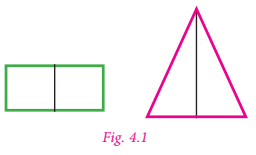
Look at the figure 4.1 given on the right.
In each figure ye line divides the figure into two identical halves. Such figures are symmetrical about the line. The line that divides any figure into two equal halves such that each half exactly coincides with the other is known as the line of symmetry or axis of symmetry.
ye figure may have one, two, three or more lines of symmetry. Some figures which has lines of symmetry are shown in figure 4.2
![In figure 4.2, In first picture, ye rectangle is divided equally by vertical line joining the midpoint of one side of length to its opposite side and horizontal line joining the midpoint of one side of breadth to its opposite side showing 2 lines of symmetry in the second picture, an equilateral triangle is divided into two equal halves , by joining a 3 lines from the midpoint of its sides to its apex showing 3 lines of symmetry in the third picture, ye cross is divided into equal halves , by joining ye vertical line, ye horizontal line and 2 diagonal lines from the midpoint showing 4 lines of symmetry in the fourth picture, ye pentagon is divided into equal halves , by joining ye 5 lines from the midpoint of its sides to its apex showing 5 lines of symmetry in the fifth picture, a hexagon is divided into equal halves , by joining a 3 lines from the apex to its opposite apex and 3 lines from the midpoint of its sides to its opposite sides showing 6 lines of symmetry](images/image-71.png)
Try these
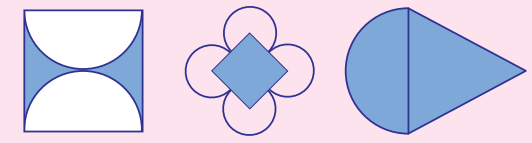
Think
What can you say about the number of lines of symmetry of ye circle?
Reflectional symmetry
When an object is seen in ye mirror, the image obtained on the other side of the mirror is called its reflection.
An object and its mirror image are perfectly identical to each other. The left and right sides of an object appear inverted in the mirror. The object and its reflection image show mirror symmetry. The mirror line here is the line of symmetry. Mirror symmetry is called reflectional symmetry.
The following shapes are examples of reflectional symmetry.
![In first picture, ye leaf is divided into two halves by ye vertical line in the second picture, an onion is divided into two halves by ye vertical line. in the third picture, ye star is divided into two halves by ye vertical line showing vertical symmetry in the fourth picture, ye star is divided into two halves by ye horizontal l line showing horizontal symmetry in the fifth picture, ye star with 2 inverted triangles is divided into two halves by ye horizontal l line and ye vertical line showing horizontal symmetry and vertical symmetry symmetry](images/image-72.png)
The reflected shape will be exactly the same as the original, the same distance from the mirror line and the same size. While dealing with mirror reflection, care is needed to note down the left right changes in the orientation.
Try these
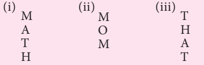
Think
Will the figure be symmetric about both the diagonals?
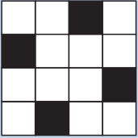
Do you know?
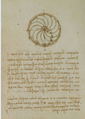
The work of artist Leonardo da Vinci has an unusual characteristic. His hand writing is ye mirror image of normal handwriting.
Rotational Symmetry
An object is said to have ye rotational symmetry if it looks the same after being rotated about its centre through an angle less than 360 degree
When an object rotates around ye fixed axis if its appearance of size and shape does not change then the object is supposed to be rotationally symmetrical.
Rotational symmetry can be observed in the following figure 4.4
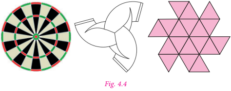
The minimum angle of rotation of ye figure to get exactly the same figure as original is called the angle of rotation.
The total number of times ye figure coincides with itself in one complete rotation is called the order of rotational symmetry. We can only rotate the figure up to 360 degree.
![Figure4.5 shows that ye picture of hexagon with numbers 1,2,3,4,5,6 is given as ye original position, followed by 60 degree rotation, the hexagon rotates and th number in the hexagon orders as 6,1,2,3,4,5, 120 degree rotation, the hexagon rotates and the number in the hexagon orders as 5,6,1,2,3,4, 180 degree rotation, the hexagon rotates and th number in the hexagon orders as 4,5,6,1,2,3, 240 degree rotation, the hexagon rotates and th number in the hexagon orders as 3.4,5,6,1,2,300 degree rotation, the hexagon rotates and th number in the hexagon orders as 2,3,4,5 6,1 and in 360 degree rotation, the hexagon rotates and th number in the hexagon orders as 1, 2,3,4,5 6, that remains in original position](images/image-74.png)
It is important to understand that all figures have rotational symmetry of order 1, as can be rotated completely through 360 degree to come back to its original position. So, we say that an object has rotational symmetry, only when the order of symmetry is more than 1. So, 2 is the smallest order of rotational symmetry.
Try these
Think
Can ye parallelogram have a rotational symmetry?
Translational symmetry
An image has translational symmetry if it can be divided by straight lines into ye sequence of identical figures. Translational symmetry results from moving ye figure to ye certain distance in ye certain direction.
Thus, translation symmetry occurs when ye pattern slides to ye new position. The sliding movement involves neither rotation nor reflection.
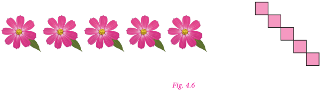
Try this
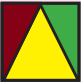
Using translational symmetry make new patterns with the given figure.
Symmetry is ye fundamental part of geometry, nature, and shapes. It creates patterns that help us to recognize the beauty of the nature. An object exhibits symmetry if it looks the same after ye transformation, such as reflection or rotation.
Symmetry is the underlying mathematical principle behind all patterns. Symmetry plays ye significant role in the field of Arts, Science and Architecture. We learnt the concept of symmetry in class 6.
Now we are going to learn symmetry through transformations. Transformations describe how geometric figures of the same shape are related to one another.
One of the most important applications of mathematics in daily life is the concept of geometric transformation. Students need to learn this concept so as to understand the nature and environment they live in. Transformation concept is very important to learn since it helps students to understand their situations in daily life.
This concept is ye necessary mental tool to be able to analyse mathematical situations. It enables students to make up rules and patterns, make explorations, be more motivated to do better works and gain rich experiences by doing maths.
Rotation, translation, reflection concepts within geometrical transformations are used in daily life, architectural designs, art and technology. Above all an aesthetic sense of beauty is observed in objects due to symmetry. Let us see the three types of transformation namely translation, reflection and rotation in this chapter.
Mathematics Alive Geometry in Real Life
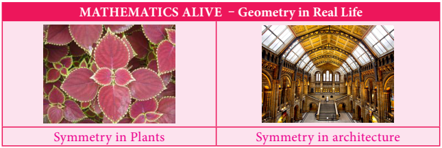
We learnt the types of symmetry. Now we are going to learn symmetry of figures through transformations.
Transformation describe how geometric figures of the same shape are related to one another. Figures or shapes in ye plane can be translated, reflected or rotated to get new figures.
The original figure is called the pre image and the new figure is called the image. Preimages are denoted by ye, B, C etcetera., and the images are denoted by ye dash, B dash, C dash etcetera ye dash can be read as ye prime.
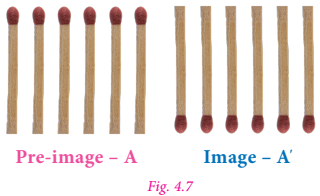
The operation that maps or moves the preimage onto the image is called the transformation. ye transformation is ye specific set of rules that change the preimage onto the image. In this chapter we are going to learn three types of transformation.
Do you know?
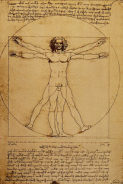
Leonardo da Vinci’s Vitruvian Man (ca. 1487) is often used as ye representation of symmetry in the human body and, by extension, the natural universe.
ye translation is ye transformation that moves all points of ye figure in the same distance in the same direction.
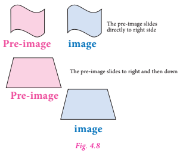
Look at the figure 4.8
From these examples we can observe that all points of ye figure move in the same distance and in the same direction.
Using ye grid paper, we can specify ye translation by how far the shape is moved horizontally and then vertically.
In horizontal, the right side movement is denoted by right arrow and the left side movement is denoted left arrow.
In vertical, the upside movement is denoted upward arrow and the downward movement is denoted downward arrow.
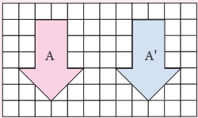
|
The preimage ye is moved 6 units horizontally right side. No vertical movement. This translation is denoted by 6 right side movement |
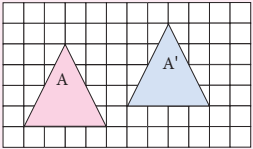 |
Here the Preimage ye is moved 5 units right side and then 1 unit upward. This is denoted by 5 right side movement, 1 upside movement |
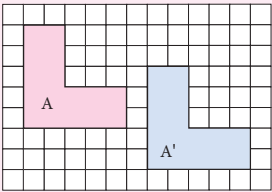
|
Preimage ye moved 6 units to right and then 2 units downward. It is denoted by 6 right side movement, 2 downward movement |
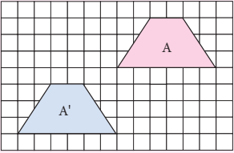
|
Preimage ye, moved 6 units to left and then 4 units downward. It is denoted by 6 left side movement, 4 downward movement |
Try these
1. Translate this figure to 4 right side movement 3 upside movement
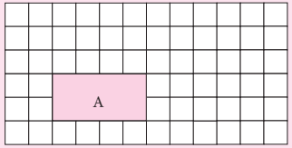
2. Translate this figure to 2 left side movement 1 downward movement
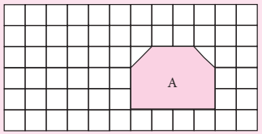
3. How is the preimage ye translated to image ye dash in each of the following figures?
![first picture ye Grid sheet with 7 rows of 15 squares is given in which ye pink shaded circle as a pre image ye is drawn in 2,3, 4,5th and 6th rows of 2,3,4,5 and 6 squares of sheet similarly .a blue shaded circle as ye pre image ye dash is drawn in 2,3, 4,5 th and 6th rows of 10,11,12,13 and 14 squares of sheet second picture ye Grid sheet with 7 rows of 12 squares is given in which ye pink shaded parallelogram as ye pre image ye is drawn in 1,2 and 3rd rows of 7,8,9,10 and 11 squares of sheet similarly .a blue shaded circle as ye pre image ei' is drawn in 4,5 th and 6th rows of 2,3,4,5 and 6 squares of sheet](images/image140.png)
Think
The preimage and the image after ye translation coincide. What can you say about the translation?
Activity
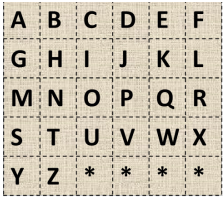
Here is ye letter grid. Start with square ye. From ye move 5 units right then 2 units down and stop. Then move 3 units left then 2 units up and stop. What mathematical word you get? Start at square L. Move 3 units left and stop. Then move 1 unit left and 1 unit down and stop. Then move 3 units right then 2 unit up and stop. What mathematical word you get? Give instruction to get,
1) RIGHT
2) ANGLE
3) WORK
4) HARD
Example 4.1
Find the new position of each point using the translation given.
1) 4 right side movement 2 downward movement
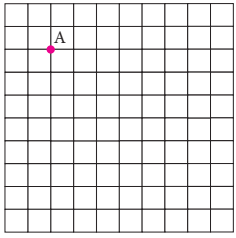
2) 6 left side movement 5 downward movement
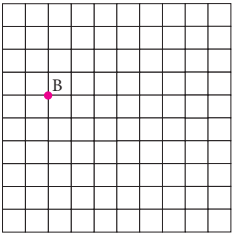
3) 6 right side movement 4 upside movement
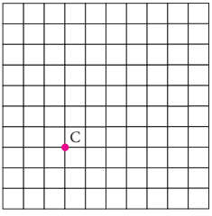
4) 4 left side movement 4 downward movement
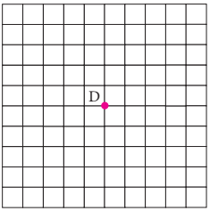
Solution
1)
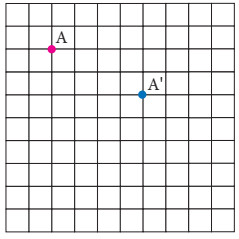
2)
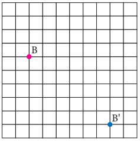
3)
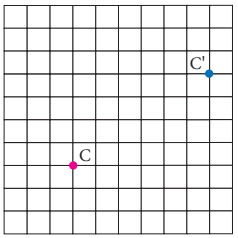
4)
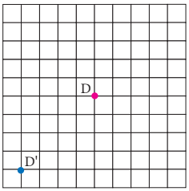
Example 4.2
How is the preimage translated to the image?
![ei grid sheet with 100 squares of 10 rows and 10 columns First picture shows a pink dot ye is marked on the second square of the fifth row ye blue dot ye dash is marked on the 8th square of 3rd row. the second picture shows an pink shaded octagon B drawn on the 7,8 and 9th square of fifth, sixth and seventh rows respectively. and similarly the same image B' shaded in blue colour is drawn on 2, 3,and 4th squares of 3, 4 and 5th rows respectively. the Third picture shows an pink shaded pentagon C drawn on the 67,8, and 9th square of second, third and fourth rows respectively. and similarly the same image C' shaded in blue colour is drawn on 2, 3,4 and 5th squares of 7,8and 9th rows respectively.](images/image150.png)
Solution
1) ye is translated to ye dash by 6 right side movement, 2 upside movement
2) B is translated to B dash by 5 left side movement, 2 upside movement
3) C is translated to C dash by 4 left side movement, 5 downward movement
Do you know?
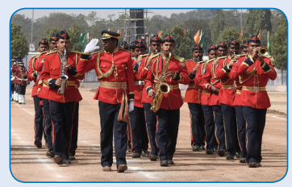
The sights and pageantry of marching band performance can add to the excitement of ye sporting event. Band members dedicate ye lot of time and energy to learning the music as well as the movements required for ye performance.
The movements of each band member as they progress throughout the show are examples of translations.
ye reflection is a transformation that “flips” or “reflects” ye figure about ye line.
After ye figure is reflected, it looks like ye mirror image of itself. The line that ye figure is flipped over is called ye line of reflection.
We can observe reflection in water, ye mirror or in ye glossy surface as shown in figure 4.9
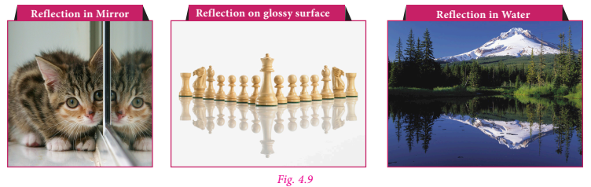
Observe the following pictures.
![The figure 4.10 shows in the first picture, the pink shaded Arrow mark ye,B,C,D,E and the blue shaded Arrow mark ei',B',C',D',E' are facing off each other with vertical line of reflection in the second picture, the pink shaded pre-image J.K.L.M and the blue shaded image J'.K'.L'.M' are placed above and below respectively with Horizontal line of reflection in the third picture, the pink shaded pre-image G,F,I.H and the blue shaded image G',F',I..H' are placed slanting above and below respectively with slanting line of reflection](images/image-82.png)
In the above pictures (figure 4.10), the figures are reflected by ye line. This line is called ye line of reflection. Here the red line is the line of reflection.
We can observe that the figures and its reflections are exactly the same distance from the line of reflection on both sides.
The line of reflection may be horizontal or vertical or slanting and also it may be on the shape or outside the shape.
Note
The line of reflection is the perpendicular bisector of the line joining at any point and its image.
How to reflect ye shape about ye line?
To reflect the shape about the line of reflection, we have to reflect every vertex individually and then connect them again.
First, choose one of the vertices and draw the line through this vertex so that it is perpendicular to the line of reflection.
Now measure the distance from the vertex to the line of the reflection, and mark ye point that has the same distance on the other side. It can be done by using either ye ruler or ye compass.
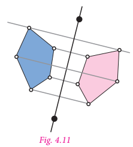
Repeat the process for all the other vertices of the shape.
Finally connect all the reflected vertices in the correct order to get the reflection of the shape.
Try these
1. Draw the line of reflection in the following pictures.
![A grid sheet with 100 squares of 10 rows and 10 columns the first picture shows an pink shaded quadrilateral drawn on the 2,3 and 4th square of third, fourth fifth, and sixth rows respectively. and similarly the same image shaded in blue colour is drawn on 4,5,6,and 7th squares of 7th and 8th rows respectively.in which one of its vertices are joined each other the Third picture shows an pink shaded kite drawn on the 2,3,4,5, 6,7,and 8, square of , third and fourth rows respectively. and similarly the same image ' shaded in blue colour is drawn on 2,3,4,5, 6,7,and 8, squares of 7,and 8th rows respectively.](images/image156.png)
2. Reflect the shape with given line of reflection.
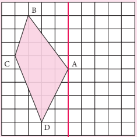
Do you know?
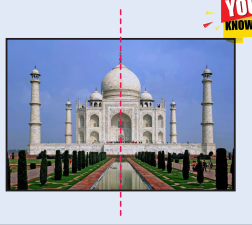
Taj Mahal at Agra is planned by following the axis with Bilateral symmetrical design in plan and overall campus as the mirror image as shown in figure. The symmetry in architecture is implied by its axiality or centrality in the form of the building. The monumental architecture often uses symmetrical design that is mirrored, which, show stability, balance and control.
Example 4.3
Reflect the shape in each of the following pictures with given line of reflection.
![ye grid sheet with 100 squares of 10 rows and 10 columns in the first horizontal line is drawn on the fifth line and ye pink dot ye is marked on the fourth square of the third row. in the second picture ye line of reflection is drawn vertically on the 5th line and a pink shaded quadrilateral BCDE .D touches the 5th square of 5th row , B on the third square of fourth row, C on the first square of fifth row and E on the third square of seventh row. in the third picture ye line of reflection is drawn slantingly and ye pink shaded quadrilateral FGHI.F touches the 4th square of third row , G on the midpoint of the first square of third row, H on the first square of fourth row and I on the 4th square of fourth row](images/image159.png)
Solution
![ei grid sheet with 100 squares of 10 rows and 10 columns in the first ye horizontal line is drawn on the fifth line and ye pink dot ye is marked on the fourth square of the third row. and ye blue dot ye dash is marked on the fourth square of the seventh row. in the second picture ei line of reflection is drawn vertically on the 5th line and ei pink shaded quadrilateral BCDE .D touches the 5th square of 5th row , B on the third square of fourth row, C on the first square of fifth row and E on the third square of seventh row. and a blue shaded quadrilateral B'C'D'E' .D' touches the 6th square of 5th row , B' on the seventh square of fourth row, C' on the ninth square of fifth row and E,. on the seventh square of seventh row. in the third picture ei line of reflection is drawn slantingly and a pink shaded quadrilateral FGHI.F touches the 4th square of third row , G on the midpoint of the first square of third row, H on the first square of fourth row and I on the 4th square of fourth row and ei blue shaded quadrilateral F'G'H'I'.F' touches the 7th square of sixth row , G' on the midpoint of the seventh square of ninth row, H' on the fifth square of in the ninth row and I' on the fifth square of sixth row](images/image160.png)
Example 4.4
Reflect the letter about the red line.
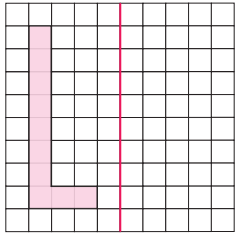
Solution
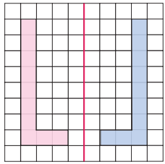
ye rotation is ye transformation that turns every point of the preimage through ye specified angle and direction about ye point.
The fixed point is called the centre of rotation. The angle is called the angle of rotation. ye rotation is also called ye turn.
The default direction of ye rotation is the anticlockwise direction. The angle of rotation can be any value between 0 and 360 degrees, both are included.
Rotation of 360 degree is called ye full turn, rotation of 180 degree is called a half turn, rotation of 90 degree is called ye quarter turn.
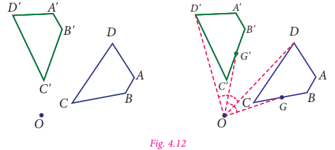
In figure 4.12 the preimage ye B C D is rotated about the point O to get the image ye dash B dash C dash D dash. here the angles angle ye O ye dash, angle B O B dash, angle C O C dash, angle D O D dash are equal. Any point G on the preimage ye B C D will have a corresponding image G dash on ye dash B dash C dash D dash such that angle G O G dash equal to angle ye O ye dash equal to angle B O B dash equal to angle C O C dash equal to angle D O D dash which is the angle of rotation.
Box item
Activity
Fold ye piece of paper and label it as shown. Cut scalene triangle out of the folded paper and unfold the paper. You can see triangles in all three parts how are the triangles in parts 2 and 3 are related to triangle in part 1?
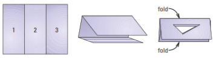
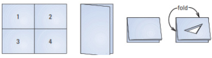
Fold ye piece of paper and label it as shown. Cut scalene triangle out of the folded paper and unfold the paper. You can see triangles in all four parts. How are the triangles in part 2, part 3 and part 4 are related to triangle in part 1?
How to rotate ye shape about ye point?
To rotate ye shape about ye point with the given angle, we have to rotate every vertex individually and connect them again.
Here triangle ye BC is rotated about O with angle 100 degree
Step 1
Draw C O. Make angle of 100 degree with vertex C and side C O using a protractor.
Step 2
Use a compass to construct C dash O equal to C O.
Step 3
Locate ye dash and B dash in the similar way.
Step 4
Join ye dash, B dash, C dash to form triangle ye dash B dash C dash
Note
ye 180 degree clockwise rotation and ye 180 degree counter clockwise rotation has the same image. So, you do not need to specify direction when rotation ye figure 180 degree
Example 4.5
Rotate the pink point about the green point by given angle of rotation and direction.
1) 90 degree counter clockwise
2) 180 degree
Solution
1) 90degree counter clockwise
2) 180 degree
Example 4.6
Rotate the pink point about the green point by given angle of rotation and direction.
1) 180 degree
2) 90degree counter clockwise
Solution
1) 180 degree
![ye grid sheet with 100 squares of 10 rows and 10 columns ye green dot is marked on the centre where 5th vertical and 5th horizontal line meets and ye pink shaded equilateral triangle ye BC is drawn, the point C lies on the 7th square of second row, ei lies on the 7th square of third row and the point B lies on the eighth square of third row. and after 180° rotation a blue shaded equilateral triangle ye' B'C' is drawn, the point C' lies on the fourth square of ninth row, ye' lies on the fourth square of eighth row and the point B' lies on the third square of eighth row](images/image174.png)
2) 90 degree counter clockwise
![A grid sheet with 100 squares of 10 rows and 10 columns ye green dot is marked on the centre where 5th vertical and 5th horizontal line meets and ye pink shaded rectangle ye BCD is drawn, the point C lies on the second square of ninth row, D lies on the fourth square of ninth row ye lies on the fourth square of eighth row and the point B lies on the second square of eighth row. after 90° counter clockwise rotation ye blue shaded rectangle ye' B'C'D' is drawn, the point C' lies on the second square of second row, D' lies on the second square of fourth row ye' lies on the third square of fourth row and the point B' lies on the third square of second row](images/image175.png)
Example 4.7
Describe the transformation involved in the following pair of figures. Write translation, reflection or rotation.
1)
![image ye pair of figures is given In the first figure, there are two columns in a rectangle, the first column consists of 3 squares and in the second column there are only two squares in the first and the third row respectively and the square in third row has a pink dot in the centre, similarly, the second figure facing off the first figure also has two columns ,whereas in the first column there are only two squares in the first row and the third row respectively and the square in third row has a pink dot in the centre, and there are three squares in the second column](images/image176.png)
2)
![ye pair of figures is given In the first figure, there are three rows of squares in the figure The first row has only one square in the second column, there are three squares in the second row in which pink dot is present in the centre of the third square and there is only one square present in the first column similarly, the second figure has three rows, in the first row there are two squares in the first and second column, the second row has two squares in the second and the third column and the row has only one square in the second column in which pink dot is present in its centre.](images/image177.png)
3)
Solution
1) Reflection
2) Rotation
3) Translation
Do you know?
ye glide reflection is ye combination of two transformations: ye reflection about ye line and ye translation. Here the translation is parallel to the line of reflection. Reversing the order of the composition will not affect the outcome. We can translate first and then reflect, or reflect first and then translate.
Exercise 4.1
1. Find the new position of each point using the translation given.
1) 2 right side movement, 4 downward movement
2) 6 upside movement
3) 3 left side movement, 5 downward movement
4) 4 right side movement, 3 upside movement
2. How is the preimage translated to the image?
1)
2)
3)
4)
3. Find the image of the given triangle with given translation.
1) 4 upside movement
2) 6 right side movement 3 downward movement
3) 5 left side movement 4 downward movement
4) 4 right side movement 3 upside movement
4. Reflect the shape with given line of reflection.
1)
2)
3)
4)
5)
6)
5. Rotate the preimages in each case as directed about the green point.
1)
2)
3)
6. Rotate the preimages in each case as directed about the green point.
1) 90 degree clockwise
2) 180 degree
3) 270 degree counter clockwise
4) 90 degree counter clockwise
5) 90 degree clockwise
6) 180 degree
Identify the transformation
7.
8.
9.
10. ye pool of fish translates from point F to point D.
1) Describe the translation of the pool of fish.
2) Can the fishing boat make the same translation? Explain.
3) Describe a translation the fishing boat could make to get to point D.
11. Name the transformation that will map footprint ye onto the indicated footprint.
1) Footprint B
2) Footprint C
3) Footprint D
4) Footprint E
12. In given diagram, the blue figure is an image of the pink figure.
1) Choose an angle or ye vertex from the pre image and name its image.
2) List all pairs of corresponding sides.
13. In the diagram at the right, the green figure is ye translation image of the pink figure. Write ye coordinate rule that describes the translation.
![ye 7rows of 10 dots is given in the dotted sheet in which an alphabet H shaded in green colour is drawn by joining first 6 dots in the second row, first 3 dots in third and fourth row respectively., first 6 dots in the fifth row. and 4,5 and 6th dot in third and fourth row respectively similarly, ye pink shaded H is drawn by joining 4,5,6,7,8 and 9th dot in third row, 4,5 and 6th dot in fourth and fifth row respectively.4,5,6,7,8 and 9th dot in sixth row and 7,8, and 9th dot in fourth and fifth row respectively](images/image212.png)
Objective type questions
14. ye dash is ye turn about ye point.
1) Translation
2) Rotation
3) Reflection
4) Glide Reflection
15 ye dash is ye flip over ye line.
1) Translation
2) Rotation
3) Reflection
4) Glide Reflection
16. ye dash is ye slide; move without turning or flipping the shape.
1) Translation
2) Rotation
3) Reflection
4) Glide Reflection
17. The transformation used in the picture is
1) Translation
2) Rotation
3) Reflection
4) Glide Reflection
18. The transformation used in the picture is
1) Translation
2) Rotation
3) Reflection
4) Glide Reflection
19. You must rotate the puzzle piece 270 degree clockwise about the point P to fit it into ye puzzle. Which piece fits in the puzzle as shown?
1)
2)
3)
4)
In previous term we have learnt to find the area and the circumference of ye circle. Now we can learn more about circles.
The collection of all the points in ye plane, which are at ye fixed distance from ye fixed point in the plane, is called ye circle.
The fixed point is called the centre of the circle and the fixed distance is called the radius of the circle. The word radius is used in two senses in the sense of ye line segment which joins the centre of the circle and ye point on the circle and in the sense of length of the line segment.
ye circle groups all points in the plane on which it lies into three categories. They are,
1) the points which are inside the circle, which is also called the interior of the circle:
2) the points on the circle and
3) the points outside the circle, which is also called the exterior of the circle.
If two points on ye circle are joined by ye line segment, then the line segment is called ye chord of the circle. Since there are many points on the circles, any number of chords can be drawn in ye circle.
The chord, which passes through the centre of the circle, is called ye diameter of the circle.
As in the case of radius, the word ‘diameter’ is also used in two senses, that is, as ye line segment and also as its length.
It can be easily verified that the diameter is the longest chord and all diameters have the same length. The diameter is equal to two times the radius.
Now let us learn to construct circle with given radius and diameter
Example
Construct ye circle of radius 5 centimetre with centre O
Step 1
Mark a point O on the paper
Step 2
Extend the compass distance equal to the radius 5Centimetre
Step 3
At centre O, hold the compass firmly and place the pointed end of the compass.
Step 4
Slowly rotate the compass around to get the circle.
Circles drawn in ye plane with a common centre and different radius are called concentric circles. (figure 4.19)
The area between the two concentric circles is known as circular ring. (figure 4.20)
Width of the circular ring (see figure 4.21)
Equal to O B minus O ye equal to r 2 minus r 1
Example
Draw concentric circles with radius 4 Centimetre and 6 Centimetre and shade the circular ring. Find its width.
Step 1
Draw ye rough diagram and mark the given measurements.
Step 2
Take any point O and mark it as the centre.
Step 3
With O as centre and draw a circle of radius O ye equal to 4 Centimetre
Step 4
With O as centre and draw ye circle of radius O B equal to 6 Centimetre
Thus, the concentric circles C 1 and C 2 are drawn.
Width of the circular ring equal to O B minus O ye equal to 6 minus 4 equal to 2 Centimetre
Exercise 4.2
1. Draw circles for the following measurements of radius (r) or diameters (d).
1) r equal to 4 Centimetre
2) d equal to 12 Centimetre
3) r equal to 3.5 Centimetre
4) r equal to 6.5 Centimetre
5) d equal to 6 Centimetre
2. Draw concentric circles for the following measurements of radii or diameters. Find out the width of each circular ring.
1) r 1 equal to 3 Centimetre and r 2 equal to 5 Centimetre
2) r 1 equal to 3.5 Centimetre and r 2 equal to 6.5 Centimetre
3) d 1 equal to 6.4 Centimetre and d 2 equal to 11.6 Centimetre
4) r 1 equal to 5 Centimetre and r 2 equal to 7.5 Centimetre
5) d 1 equal to 6.2 Centimetre and r 2 equal to 6.2 Centimetre
6) r 1 equal to 7.1 Centimetre and d 2 equal to 12 Centimetre
Exercise 4.3
Miscellaneous Practice Problems
1. The bishop, in given picture of chess board, can move diagonally along dark squares. Describe the translations of the bishop after two moves as shown in the figure.
![ye chess board of 64 squares with 8 rows and 8 columns of alternate red and black shaded squares is given .the rows are named as1,2,3,4,5,6,7,8 and the columns are named as ye, b, c, d, e, ,f, g, h in which there are 5 different white coins were present in the squares. the bishop coin is present in the sixth black square of eighth row. in the picture the two moves of bishop is drawn diagonally in yellow line. the first move is from the initial position to eighth black square of sixth row and from the sixth row to the third black square in the first row is the second move.](images/image229.png)
2. Write ye possible translation for each of chess piece for ye single move.
3. Referring the graphic given, answer the following questions. Each bar of the category is made up of boy girl boy unit.
1) Which categories show ye boy girl boy unit that is translation within the bar?
2) Which categories show ye boy girl boy unit that is reflected within the bar?
4. Given figure is ye floor design in which the length of the small red equilateral triangle is 30 Centimetre. All the triangles and hexagons are regular. Describe the translations in Centimetre, represented by the,
![in the figure 8 hexagonal stars are given in an arrangement of 6 equilateral triangles. The stars are arranged in 3 rows in which 3 stars in the first row, 2 stars in the second row and 3 stars in the third row. ye blue line is drawn between the two corresponding equilateral triangles in the first star in the first row, the yellow line is drawn diagonally connecting the 3 equilateral triangles in the first star in the first and second row and second star in the third row and the black line is drawn diagonally connecting the 4 equilateral triangles in the second star in the first and second row and third star in the third row .](images/image232.png)
1) yellow line
2) black line
3) blue line
5. Describe the transformation involved in the following pair of figures (letters). Write translation, reflection or rotation.
1)
2)
3)
4)
5)
6)
7)
8)
Challenge Problems
6. In chess, ye knight can move only in an L Shaped pattern:
Write a series of translations to move the knight from g8 to g5 [at most two moves]
7. The pink shape is congruent to blue shape. Describe a sequence of transformations in which the blue shape is the image of pink shape.
1)
2)
8.
1) Draw the translation of the shape
2) Draw the reflection of the shape
3) Draw the Rotation of the shape
9. Draw concentric circles given that radius of inner circle is 4.5 Centimetre and which of circular ring is 2.5 Centimetre.
10. Draw concentric circles given that radius of outer circle is 5.3 Centimetre and width of circular ring is 1.8 Centimetre.
Summary
ye transformation is ye specific set of rules that change the preimage onto the image.
ye translation is ye transformation that moves all points of ye figure in the same distance in the same direction.
In horizontal, the right side movement is denoted by right arrow and the left side movement is denoted by left arrow
In vertical, the upside movement is denoted by upward arrow and the downward movement is denoted by downward arrow
ye reflection is transformation that “flips” or “reflects” ye figure about a line
ye rotation is ye transformation that turns every point of the preimage through ye specified angle and direction about ye point. The fixed point is called the centre of rotation. The angle is called the angle of rotation.
ye rotation is also called ye turn.
The default direction of ye rotation is the anticlockwise direction.
Rotation of 360degree is called ye full turn, rotation of 180 degree is called ye half turn, rotation of 90degree is called ye quarter turn.
The collection of all the points in ye plane, which are at ye fixed distance from yefixed point in the plane, is called ye circle. The fixed point is called the centre of the circle and the fixed distance is called the radius of the circle.
If two points on ye circle are joined by ye line segment, then the line segment is called ye chord of the circle.
The chord, which passes through the centre of the circle, is called ye diameter of the circle.
Circles drawn in ye plane with ye common centre and different radius are called concentric circles.
The area between the two concentric circles is known as circular ring
Width of the circular ring w equal r 2 minus r 1
ICT Corner
Geometry
Expected Outcome
Step 1
Open the browser and type the URL Link given below (or) scan the QR code. GeoGebra work sheet named “Symmetry” will open. Drag the points on left side of the line to change the shape. Click “REFLECT” check box to see the symmetricity.
Step 2
Scroll down to see another worksheet called “Rotational symmetry”. Move the slider to rotate the shape and find the order of rotation and enter in the box given. By pressing enter, you can check whether your answer is correct. Click on “NEW SHAPE” and repeat the process.
![screen view of ICT corner Step 1 Open the browser and type the URL Link given below (or) scan the QR code. GeoGebra work sheet named “Symmetry” will open. Drag the points on left side of the line to change the shape. Click “REFLECT” check box to see the symmetricity. Step 2 Scroll down to see another worksheet called “Rotational symmetry”. Move the slider to rotate the shape and find the order of rotation and enter in the box given. By pressing enter, you can check whether your answer is correct. Click on “NEW SHAPE” and repeat the process.](images/image-111.png)
Browse in the link
Symmetry: https://www.geogebra.org/m/f4w7csup#material/udcrmzyr
or Scan the QR Code.
Learning Objectives
Recap
We have studied about data, classification and pictorial representation of data in class 6. Let us recall them now.
Observe the following tables and answer the questions given below.
Table 1
The marks obtained by 30 students in ye mathematics test (out of 50 marks) is given below.
33 |
22 |
50 |
28 |
20 |
21 |
25 |
23 |
25 |
34 |
28 |
26 |
28 |
22 |
28 |
28 |
37 |
35 |
21 |
42 |
24 |
2 |
49 |
29 |
35 |
25 |
26 |
32 |
33 |
29 |
1) What is the maximum mark scored?
2) How many students scored above 40 marks?
3) Find the minimum mark scored?
4) How many students scored between 21 and 23 (both inclusive)?
5) Find the difference between maximum and minimum scores?
Table 2
Data shows the children who are absent in class 7 during ye particular week.
represents five children.
Monday
Tuesday
Wednesday no absentees
Thursday
Friday
1) Find the day with minimum number of absentees?
2) Mention the day with ten absentees.
3) Which day of the week has no absentees?
4) Find the day on which maximum number of children were absent?
We need to collect data having the specific information in our mind. Suppose the specific information needed by us is to know the height of class 7 students, then we should collect specific data related to their heights and ages rather than the data related to health record of students.
From the above discussion, we conclude that the purpose for which a data is to be collected has to be kept in mind before starting the process of data collection. Then only we can get the desired information, which is appropriate to the purpose. Let us look into a few situations that are given below.
Data can be generated in many situations around us. For example,
We first collect data, record it and organise them. To understand this, consider an example which deals with the weights of 10 students of class 7. These are collected to know whether the weights of students are appropriate to their heights. The data is given below.
Anbu 20 kilograms; Nambi 19 kilograms; Nanthitha 20 kilograms; Arul 24 kilograms; Mari 25 kilograms; Mathu 22 kilograms; Pavithra 23 kilograms; Beeman 26 kilograms; Arthi 21 kilograms; Kamanan 25 kilograms.
Let us try to answer the following question.
1) Who is the least weight of all?
2) How many students weigh between 22 kilograms to 24 kilograms?
3) Who is the heaviest of all?
4) How many children are above 23 kilograms and how many are below 23 kilograms?
The data mentioned above is not easy to understand.
If the data is arranged according to the order of weights, it will be easy for answering the questions. Observe the following table.
Serial.Number |
Name |
Weight (kilogram) |
Serial.Number 1 |
Nambi |
Weight 19 kilogram |
Serial.Number 2 |
Anbu |
Weight 20 kilogram |
Serial.Number 3 |
Nanthitha |
Weight 20 kilogram |
Serial.Number 4 |
Arthi |
Weight 21 kilogram |
Serial.Number 5 |
Mathu |
Weight 22 kilogram |
Serial.Number 6 |
Pavithra |
Weight 23 kilogram |
Serial.Number 7 |
Arul |
Weight 24 kilogram |
Serial.Number 8 |
Kumanan |
Weight 25 kilogram |
Serial.Number 9 |
Mari |
Weight 25 kilogram |
Serial.Number 10 |
Beeman |
Weight 26 kilogram |
Now we can answer the above questions easily. Hence it is essential to organise the data to obtain any kind of inferences from the data.
Organisation of data is helpful to understand quickly and get an overall view of data. It becomes easy to understand and interpret which in turn also helps to take decision accordingly.
We have come across situations where we use the term ‘average’ in our day to day life. Consider the following statements.
The average temperature at Chennai in the month of May is 40 degree centigrade
The average marks in mathematics unit test of class 6 is 74.
Mala’s average study time is 4 hours.
Mathan’s average pocket money per week is 100 Rupees
We come across many more statements of such kind in our daily life. Let us take the example, “the average marks scored by class 6 students in maths test is 74. Does it mean that every student has scored 74? No, certainly not. Some students would have got more than 74 and some students would have got less than 74. Average is the value that represents the general performance of class 6 students in maths test.
Similarly, 40 degree centigrade is the representative temperature of Chennai in the month of May which does not mean that everyday temperature is 40 degree centigrade in the month of May. Since the average lies between the highest and the lowest value of the given data, we say average is ye measure of central tendency of the group of data. Different forms of data need different forms of representative or central value to describe it. We study three types of central values of data namely Arithmetic Mean, Mode and Median in this chapter.
Try these
Collect the height of students of your class. Organise the data in ascending order.
Now, let us see one of the measures of central tendency that is the Arithmetic Mean. Consider this situation.
Mani and Ravi started collecting shells in the sea shore with an agreement to share the shells equally after collection. Finally, Mani collected 50 shells and Ravi collected 30 shells. Now, if both of them share equally, find the number of shells each one gets?
We find it using arithmetic mean or average. To find the average, add the numbers and divide by 2. Hence,
Average equal to (50 + 30) divided by 2 equal to 80 divided by 2 equal to 40
Average lies between 30 and 50
Thus, to find the arithmetic mean (average), we have to add all the observations and divide the sum of all observations by the number of observations.
Hence, Arithmetic Mean equal to (Sum of all observations) divided by (Number of observations)
Try these
Find the Arithmetic Mean or average of the following data.
1) The study time spent by Kathir in ye week is 3 hours, 4 hours, 5 hours, 3 hours, 4 hours, 3:45 hours and 4:15 hours.
2) The marks scored by Muhil in five subjects are 75, 91, 48, 63 and 51.
3) Money spent on vegetables for five days is 120 Rupees, 80 Rupees, 75 Rupees, 95 Rupees and 86 Rupees
Example 5.1
The daily wages of ye worker for 10 days is as follows. Find the average income of the worker.
Day |
Wages (Rupees) |
Day 1 |
Wages 250 Rupees |
Day 2 |
Wages 350 Rupees |
Day 3 |
Wages 100 Rupees |
Day 4 |
Wages 400 Rupees |
Day 5 |
Wages 150 Rupees |
Day 6 |
Wages 270 Rupees |
Day 7 |
Wages 450 Rupees |
Day 8 |
Wages 320 Rupees |
Day 9 |
Wages 610 Rupees |
Day 10 |
Wages 750 Rupees |
Solution
Arithmetic Mean equal to (Sum of all observations) divided by (Number of observations)
Equal to (250 + 350 +100 + 400 + 150+ 270 + 450 + 320 + 610 + 750) divided by 10
Equal to 3650 divided by 10 equal to 365
Hence, the average income of the worker is 365 Rupees.
Example 5.2
The mean of 9 observations is 24. Find the sum of the 9 observations.
Solution
Arithmetic Mean equal to (Sum of all observations) divided by (Number of observations)
Thus, 24 equal to (Sum of all observations) divided by 9
Sum of all observations equal to 9 multiplied by 24 equal to 216
Example 5.3
The mean age of 15 teachers in ye school is 42. The ages of the teachers are 35, 42, 48, X, X + 8, 40, 43, 50, 46, 50, 37, 32, 38, 41, 40 (in years). Find the value of X and unknown ages of the two teachers?
Solution
Mean equal to (Total ages of teachers) divided by (Number of teachers)
42 equal to (35 + 42+ 48 + x + (x + 8) + 40 + 43 + 50 + 46 + 50 + 37 + 32 + 38 + 41 +40) divided by 15
(550 + 2 x) divided by 15 equal to 42
550 + 2 x equal to 42 multiplied by 15
Equal to 630
2 x equal to 630 minus 550
2 x equal to 80
x equal to 80 divided by 2
x equal to 40
Therefore, the age of the teacher (X) is 40 and the age of another teacher (X + 8) is 40 + 8 equal to 48.
Example 5.4
If the mean of the following numbers is 38, find the value of x
48, x, 37, 38, 36, 27, 35, 34, 38, 49, 33
Solution
Mean equal to (Sum of all observations) divided by (Number of observations)
38 equal to (48 + x + 37 + 38 + 36 + 27 + 35 + 34 + 38 + 49 + 33) divided by 11
38 equal to (375 + x) divided by 11
38 multiplied by 11 equal to 375 + x
418 equal to 375 + x
X equal to 418 minus 375
X equal to 43
Hence, the value of x is 43
Think
Check the properties of arithmetic mean for the example given below:
X |
3 |
6 |
9 |
12 |
15 |
1) If the mean is increased by 2, then what happens to the individual observations.
2) If first two items are increased by 3 and last two items are reduced by 3, them what will be the new mean?
Do you know?
Here are few interesting averages.
1. On an average, you blink your eyes 17 times per minute. That is 5.2 million times ye year.
2. The average person has about 1460 dreams a year. That is about per night.
3. Based on the average life of ye G2 star the present age of the sun is estimated to be 4.5 billion years, halfway through its lifetime.
Exercise 5.1
1. Fill in the blanks.
1) The mean of first ten natural numbers is dash
2) If the average selling price of 15 books is 235 Rupees, then the total selling price is dash.
3) The average of the marks 2, 9, 5, 4, 4, 8, 10 is dash
4) The average of integers between minus 10 to 10 is dash
2. Ages of 15 students in 8 th standard is 13, 12, 13, 14, 12, 13, 13, 14, 12, 13, 13, 14, 13, 12, 14. Find the mean age of the students.
3. The marks of 14 students in ye science test out of 50 are given below. 34, 23, 10, 45, 44, 47, 35, 37, 41, 30, 28, 32, 45, 39 find
1) the mean mark
2) the maximum mark obtained
3) the minimum mark obtained
4. The mean height of 11 students in ye group is 150 Centimetre. The heights of the students are 154 Centimetre, 145 Centimetre, Y Centimetre, Y + 4 Centimetre, 160 Centimetre, 151 Centimetre, 149 Centimetre, 149 Centimetre, 150 Centimetre, 144 Centimetre, and 140. Find the value of Y and the heights of two students?
5. The mean of runs scored by ye cricket team in the last 10 innings is 276. If the scores are 235, 400, 351, x, 100, 315, 410, 165, 260, 284 then find the runs scored in the fourth innings.
6. Find the mean of the following data.
5.1, 4.8, 4.3, 4.5, 5.1, 4.7, 4.5, 5.2, 5.4, 5.8, 4.3, 5.6, 5.2, 5.5
7. Arithmetic mean of 10 observations was found to be 22. If one more observation 44 was to be added to the data, what would be the new mean?
Objective type questions
8. dash is ye representative value of the entire data
1) Mean
2) range
3) minimum value
4) maximum value
9. The mean of first fifteen even numbers is dash
1) 4
2) 16
3) 5
4) 10
10. The average of two numbers are 20. One number is 24, another number is dash
1) 16
2) 26
3) 20
4) 40
11. The mean of the data 12, x, 28 is 18. Find the value of x
1) 18
2) 16
3) 14
4) 22
As we have discussed earlier that the arithmetic mean is one of the forms of representative value or measures of central tendency of ye group of data. Depending upon the data and its purpose, other measures of central tendency may be used.
Consider the example of sale details of different sizes of footwear in ye shop for ye week.
Size of the footwear |
Number of footwear sets sold |
5 inch |
20 |
6 inch |
35 |
7 inch |
16 |
8 inch |
65 |
9 inch |
32 |
10 inch |
25 |
11 inch |
10 |
The shopkeeper has to replenish his stock at the end of the week. Suppose we find the arithmetic mean of the footwear sold,
Mean equal to (20 + 35 + 16 + 65 + 32 + 25 + 10) divided by 7 equal to 203 divided by 7 equal to 29
Average number of footwears is 29. This means that the shopkeeper has to get 29 pairs of footwear in each size. Will it be wise to decide like this?
It has to be observed that the maximum purchase falls on the footwear of size 8 inches. So the shopkeeper has to get more number of footwear of size 8 inches. Hence arithmetic mean does not suit for this purpose. Here we need another type of representative value of data called ‘Mode’
Mode is the value of the data which occurs maximum number of times.
Consider another example.
ye shopkeeper analyses his sales data of readymade shirts to plan for the stock according to the demand. The sale details of shirts are given below.
Size |
Number of footwear sets sold |
28 inch |
20 |
30 inch |
35 |
32 inch |
22 |
34 inch |
35 |
36 inch |
15 |
Here he observes that there is ye equal demand for shirts of sizes 30 inch and 34 inch. Now this data has two modes as there are two maximum occurrences namely 30 inch and 34 inch. He stocks more shirts of these 2 sizes. Note that, this data has two mode and it is known as bimodal data.
Try these
1) Find the mode of the following data.
2, 6, 5, 3, 0, 3, 4, 3, 2, 4, 5, 2
2) Find the mode of the following data set.
3, 12, 15, 3, 4, 12, 11, 3, 12, 9, 19
3) Find the mode of even numbers within 20
Example 5.5
Find the mode of the given set of numbers.
5, 7, 10, 12, 4, 5, 3, 10, 3, 10, 3, 4, 5, 7, 9, 10, 5, 12, 16, 20, 5
Solution
Arranging the numbers in ascending order without leaving any value, we get,
3, 3, 4, 4, 5, 5, 5, 5, 5, 7, 7, 9, 10, 10, 10, 12, 12, 16, 20
Mode of this data is 5, because it occurs ye greater number of times than the other values.
Note
To find mode, arranging the raw data in ascending order is not mandatory. It helps us to ensure that each and every value is taken in to account for the calculation of mode and helps in identifying the mode value easily.
Example 5.6
The marks obtained by 11 students of ye class in ye test are 23, 2, 15, 38, 21, 19, 23, 23, 26, 34, 23. Find the mode of the marks.
Solution
Arranging the given marks in ascending order, we get,
2, 15, 19, 21, 23, 23, 23, 23, 26, 34, 38
Clearly, 23 occurs maximum number of times. Hence mode of marks equal to23
Example 5.7
Find the mode of the following data 123, 132, 145, 176, 180, 120
Solution
From the above data, we can see that there is no repetition of values in the given data. Each observation occurs only once, so there is no mode.
Note
When each of the observations have occurred only once, then there is no mode for the data.
Think
1.ye toy factory making variety of toys for kids, wants to know the most popular toy liked by all the kids. Which average will be the most appropriate for it?
2. Is there ye mode exists between the odd numbers from 20 to 40? Discuss.
When size of the data is large, it is not easy to identify the value which occurs maximum number of times. In that case we can group the data by using tally marks and then find the mode.
Consider the example to find the mode of the number of goals scored by a football team in 25 matches. The goal scored are 1, 3, 2, 5, 4, 6, 2, 2, 2, 4, 6, 4, 3, 2, 1, 1, 4, 5, 3, 2, 2, 4, 3, 0, 1.
To find the mode of this data, the number of goals score starting from 0 and ending with ye maximum of 6 is represented in the form of ye table.
Number of goals |
Tally marks |
Frequency |
Number of goals 0 |
Tally marks ye vertical line |
Frequency 1 |
Number of goals 1 |
Tally marks Four vertical lines |
Frequency 4 |
Number of goals 2 |
Tally marks Four vertical lines and transversal line that cuts the Four vertical lines and two vertical lines |
Frequency 7 |
Number of goals 3 |
Tally marks Four vertical lines |
Frequency 4 |
Number of goals 4 |
Tally marks Four vertical lines and transversal line that cuts the Four vertical lines |
Frequency 5 |
Number of goals 5 |
Tally marks two vertical lines |
Frequency 2 |
Number of goals 6 |
Tally marks two vertical lines |
Frequency 2 |
|
Total |
25 |
From the table we observe that the highest frequency is 7, which corresponds to number of goals, that is 2. Hence, the mode is 2.
Example 5.8
Find the mode of the following data.
14, 15, 12, 14, 16, 15, 17, 13, 16, 16, 15, 12, 16, 15, 13, 14, 15, 13, 15, 17, 15, 14, 18, 19, 12, 14, 15, 16, 15, 16, 13, 12
Solution
We tabulate the data as follows.
The whole data rages from 12 to 19.
Observation |
Tally marks |
Frequency |
Observation 12 |
Tally marks Four vertical lines |
Frequency 4 |
Observation 13 |
Tally marks Four vertical lines |
Frequency 4 |
Observation 14 |
Tally marks Four vertical lines and transversal line that cuts the Four vertical lines |
Frequency 5 |
Observation 15 |
Tally marks Four vertical lines and transversal line that cuts the Four vertical lines and Four vertical lines |
Frequency 9 |
Observation 16 |
Tally marks Four vertical lines and transversal line that cuts the Four vertical lines and a vertical line |
Frequency 6 |
Observation 17 |
Tally marks two vertical lines |
Frequency 2 |
Observation 18 |
Tally marks ye vertical line |
Frequency 1 |
Observation 19 |
Tally marks a vertical line |
Frequency 1 |
|
Total |
Frequency 32 |
The highest frequency is 9 which corresponds to the value 15. Hence the mode of this data is 15.
Example 5.9
The following data shows that the number of hours spent by the students for study.
Number of study hours |
Number of students |
1 hour |
Number of students 4 |
2 hour |
Number of students 2 |
3 hour |
Number of students 1 |
4 hour |
Number of students 2 |
5 hour |
Number of students 1 |
6 hour |
Number of students 0 |
Find the mode.
Solution
Since the one hour study time is spent by maximum number of students, the mode of the data is 1 hour.
Think
Which average will be most appropriate for the companies producing the following goods? Why?
1) Diaries and notebooks.
2) School bags.
3) Jeans and T Shirts.
Exercise 5.2
Objective type questions
1) blue
2) green
3) white
4) yellow
1) 1
2) 2
3) 3
4) No mode
1) 1 and 5
2) 2 and 3
3) 2 and 1
4) 1 and 4
We have discussed the situations where arithmetic mean and mode are the representative values of the given data. Let us think of any other alternative representative value or measures of central tendency. For this let us consider the following situation.
Rajam an old student of the school wanted to provide financial support to ye group of 15 students, who are selected for track events. She wanted to support them on the basis of their family income. The monthly income of those 15 families are given below.
3300 rupees, 5000 rupees, 4000 rupees, 4200 rupees, 3500 rupees, 4500 rupees, 3200 rupees, 3200 rupees, 4100 rupees, 4000 rupees, 4300 rupees, 3000 rupees, 3200 rupees, 4500 rupees, 4100 rupees
Rajam would like to give them an amount to their family.
If we find the mean, we get
Arithmetic Mean,ye.M equal to (Sum of all values) divided by 15
Equal to {3300 + 5000 + 4000 + 4200 + 3500 + 4500 + 3200 + 3200 + 4100 + 4000 + 4300 + 3000 + 3200 + 4500+ 4100)} divided by 15
Equal to 58100 divided by 15 equal to 3873.3
Can the amount of 3873.3 rupees be given to all of them irrespective of their salary ?Is 3873.3 rupees is the suitable representative here? No, this is not suitable here because ye student with family income 3000 rupees and ye student with family income 5000 rupees will receive the same amount. Because the representative measure used here is not suitable for the above data, let us find the mode for this data.
Values |
Tally marks |
Frequency |
Values 3000 |
Express in tally marks |
Frequency 1 |
Values 3200 |
Express in tally marks |
Frequency 3 |
Values 3300 |
Express in tally marks |
Frequency 1 |
Values 3500 |
Express in tally marks |
Frequency 1 |
Values 4000 |
Express in tally marks |
Frequency 2 |
Values 4100 |
Express in tally marks |
Frequency 2 |
Values 4200 |
Express in tally marks |
Frequency 1 |
Values 4300 |
Express in tally marks |
Frequency 1 |
Values 4500 |
Express in tally marks |
Frequency 2 |
Values 5000 |
Express in tally marks |
Frequency 1 |
Here mode is 3200 which means there are ye greater number of students with ye family income of 3200 rupees But this does not suite our purpose.
Hence, mode is also not suitable. Is there any other representative measures that can be used here? Yes.
Let us look at another representative value which divides the data into two halves exactly. First, let us arrange the data in ascending order.
That is 3000 rupees, 3200 rupees, 3200 rupees, 3200 rupees, 3300 rupees, 3500 rupees, 4000 rupees, 4000 rupees, 4100 rupees, 4100 rupees, 4200 rupees, 4300 rupees, 4500 rupees, 4500 rupees, 5000 rupees.
After arranging the income in ascending order, Rajam finds 8th value (4000 rupees) which divides the data into two halves. It helps her to decide the amount of financial support that can be given to each of the students. Note that 4000 rupees is the middle most value.
This kind of representative value which is obtained by choosing the middle item is known as Median.
Thus, in ye given data, arranged in ascending or descending order, the median gives us the middle value.
Consider another example, where the data contains even number of terms 13, 14, 15, 16, 17 and 18. How to find the middle term for this example? Here the number of terms is 6, that is an even number. So, we get, two middle terms namely 3rd and 4th term. Then, we take the average of the two terms (3rd and 4th term) and the value we get is the median.
That is, Median equal to 1 divided by 2 multiplied by {3rd term + 4th term}
Equal to 1 divided by 2 multiplied by {15 + 16}
Equal to (15 + 16) divided by 2 equal to 31 divided by 2 equal to 15.5
Here, to find median we arrange the values of the given data either in ascending or descending order, then find the average of the two middle values.
So, we conclude that, to find median,
1) arrange the data in ascending or descending order.
2) If the number of terms (n) is odd, the ((n + 1) divided by 2th) term is the median
3) If the number of terms (n) is even, then average of (n divided by 2th) and (n divided by 2 + 1th) terms is the median.
Try these
1. Find the median of 3, 8, 7, 8, 4, 5, 6
2. Find the median of 11, 14, 10, 9, 14, 11, 12, 6, 7, 7
Activity
Create ye group of 6 to 7 students and collect the data of weight of the students in your class. In each group find mean, median and mode. Also, compare the average among groups. Are they same for all the groups?
Also find all the three averages for entire class. Now, compare the results with the average of each of the groups.
Example 5.10
Find the median of the following golf scores.
68, 79, 78, 65, 75, 70, 73
Solution
Arranging the golf scores in ascending order, we have,
65, 68, 70, 73, 75, 78, 79
Here n equal to 7, which is odd
Therefore, Median equal to ((n + 1) divided by 2th) term
Equal to ((7 + 1) divided by 2th) term
Equal to (8 divided by 2th) term
Equal to 4th term equal to 73
Hence, the Median is 73
Example 5.11
The weights of 10 students (in kilogram) are 35, 42, 40, 38, 25, 32, 29, 45, 20, 24. Find the median of their weight?
Solution
Arranging the weights in ascending order, we have,
20, 24, 25, 29, 32, 35, 38, 40, 42, 45
Here, n equal to 10 which is even
Therefore, median weight equal to 1 divided by 2 multiplied by {(n divided by 2th) term + (n divided by 2 + 1th) term}
Equal to 1 divided by 2 multiplied by {(10 divided by 2th) term + (10 divided by 2 + 1th) term}
Equal to 1 divided by 2 multiplied by {5th term + 6th term}
Equal to 1 divided by 2 multiplied by {32 + 35} kilogram equal to 67 divided by 2 equal to 33.5 kilogram
Hence, Median is 33.5 kilogram.
Example 5.12
Create ye collection of 12 observations with median 16.
Solution
As the number of observations is even, there are two middle values.
The average of those values must be 16.
We will now find any pair of numbers whose average is 16. Say 14 and 18.
Now an example of data with median 16 can be 2, 4, 7, 9, 12, 14, 18, 24, 28, 30, 45, 62.
Note
We can find more than one answer for this question
Example 5.13
The lifetime (in days) of 11 types of L E D bulbs is given in days. 365, 547, 730, 1095, 547, 912, 365, 1460, 1825, 1500, 2000. Find the median life time of the L E D bulbs.
Solution
Arranging the data in ascending order, we have,
365, 365, 547, 547, 730, 912, 1095, 1460, 1500, 1825, 2000.
The number of observations is 11, which is odd.
Median equal to ((n + 1) divided by 2th) term
Median equal to ((11 + 1) divided by 2th) term
equal to 6th term equal to 912.
Therefore, the median is 912
Hence, the median lifetime of the L E D bulb is 912 days.
Example 5.14
Find the Median of the following data.
12, 7, 23, 14, 19, 10, 5, 26
Solution
Arranging the data in ascending order, we have
5, 7, 10, 12, 14, 19, 23, 26
Here, n equal to 8, which is even
Therefore, Median equal to 1 divided by 2 multiplied by {(8 divided by 2th) term + (8 divided by 2 + 1th) term}
Equal to 1 divided by 2 multiplied by {4th term + 5th term}
Equal to 1 divided by 2 multiplied by {12 + 14}
Equal to 26 divided by 2 equal to 13
Therefore, the Median is 13
Think
Complete the table given below and observe it to answer the following questions.
Series |
Values |
Mean |
Median |
Ye |
99,100,101 |
Express in mean value |
Express in median value |
B |
90,100,110 |
Express in mean value |
Express in median value |
C |
50,100,150 |
Express in mean value |
Express in median value |
D |
99,100,200 |
Express in mean value |
Express in median value |
1) Which are all the series having common mean and median?
2) Why median is same for all the 4 series?
3) How mean is unchanged in the series ye, B and C
4) What change is to be made in the data, so that mean and median of ‘D’ series is equal to other series?
Exercise 5.3
1. Fill in the blanks.
1) The median of the data 12, 14, 23, 25, 34, 11, 42, 45, 32, 22, 44 is dash
2) The median of first ten even natural numbers is dash
2. Find the median of the given data: 35, 25, 34, 36, 45, 18, 28
3. The weekly sale of motor bikes in ye showroom for the past 14 weeks given below. 10, 6, 8, 3, 5, 6, 4, 7, 12, 13, 16, 10, 4, 7. Find the median of the data.
4. Find the median of the 10 observations 36, 33, 45, 28, 39, 45, 54, 23, 56, 25. If another observation 35 is added to the above data, what would be the new median?
Objective type questions
5. If the median of a, 2ye, 4ye, 6ye, 9ye is 8, then find the value of ye is.
1) 8
2) 6
3) 2
4) 10
6. The median of the data 24, 29, 34, 38, 35 and 30, is dash
1) 29
2) 30
3) 34
4) 32
7. The median first 6 odd natural numbers is dash
1) 6
2) 7
3) 8
4) 14
Exercise 5.4
Miscellaneous Practice Problems
1. Arithmetic mean of 15 observations was calculated as 85. In doing so an observation was wrongly taken as 73 for 28. What would be correct mean?
2. Find the median of 25, 16, 15, 10, 8, 30
3. Find the mode of 2, 5, 5, 1, 3, 2, 2, 1, 3, 5, 3
4. The marks scored by the students in social test out of 20 marks are as follows: 12, 10, 8, 18, 14, 16. Find the mean and median?
5. The number of goals scored by ye football team is given below. Find the mode and median for the data of 2, 3, 2, 4, 6, 1, 3, 2, 4, 1, 6.
6. Find the mean and mode of 6, 11, 13, 12, 4, 2
Challenge Problems
7. The average marks of six students is 8. One more student mark is added and the mean is still 8. Find the student mark that has been added.
8. Calculate the mean, mode and median for the following data: 22, 15, 10, 10, 24, 21
9. Find the median of the given data: 14, minus 3, 0, minus 2, minus 8, 13, minus 1, 7.
10. Find the mean of first 10 prime numbers and first 10 composite numbers.
Summary
Arithmetic Mean equal to (Sum of all observations) divided by (Number of observations)
1) arrange the data in ascending or descending order.
2) If the number of terms (n) is odd, then ((n + 1) divided by 2th) term is the median.
3) if the number of terms (n) is even, then average of (n divided by 2) and (n divided by 2 + 1th) terms is the median.
ICT Corner
Statistics
Expected outcome
Step 1
Open the browser and type the URL link given below (or) scan the QR Code. GeoGebra work sheet named “MeanminusMedianminusMode” will open. Change the number of students by typing your number. Right side you can see the Mean, Median and Mode.
Browse in the link MeanminusMedianminusMode:
https://www.geogebra.org/m/f4w7csup#material/sanzgm9n
or Scan the QR Code.

Learning Objectives
Scheduling of tasks under given set of constraints.
Able to create and use fo flowcharts
The process that involves deciding of the ordering of tasks and allocating of appropriate resources among the different type of possible taks is called scheduling. Schedules can usually be short term periodical plan such as ye daily or weekly schedule, and long term periodical plan which extends for several months or years.
ye schedule consists of ye list with ye timeline with which possible tasks, events or activities are inteded to take place or ye sequence of is intended to take place.
Situation 1
Here is ye programme list of two days Zonal level sports meet held on 15th November 2018 and 16th November 2018 at Bala’s school. To submit the annual report, prepare ye schedule and make ye table using the column headings given below.
Serial .Number |
Date of the Events |
Time of the Events |
Name of the Events |
Collection of Photography |
Programmes
15 November 2018
16 November 2018


Zonal Level Sports Meet
15 november 2018 and 16 november 2018
Serial .Number |
Date of the Events |
Time of the Events |
Name of the Events |
Collection of Photography |
Serial .Number 1 |
Date 15 november 2018 |
Time 8.00 YE M |
Name of the Events Preparation of play ground |
|
Serial .Number 2 |
Date 15 november 2018 |
Time 9.00 YE M |
Name of the Events Inauguration |
|
Serial .Number 3 |
Date 15 november 2018 |
Time 9.15 YE M |
Name of the Events Instructions given by Teachers |
|
Serial .Number 4 |
Date 15 november 2018 |
Time 9.30 YE M |
Name of the Events Registration for events |
|
Serial .Number 5 |
Date 15 november 2018 |
Time 9.45 YE M |
Name of the Events Allotment report for team games. |
|
Serial .Number 6 |
Date 15 november 2018 |
Time 10.00 YE M
|
Name of the Events Inauguration of sports events |
|
Serial .Number 7 |
Date 15 november 2018 |
Time 11.00 YE M |
Name of the Events Indoor games |
|
Serial .Number 8 |
Date 15 november 2018 |
Time 2.30 PM |
Name of the Events Individual events |
|
Serial .Number 9 |
Date 16 november 2018 |
Time 10.30 YE M |
Name of the Events Team events |
|
Serial .Number 10 |
Date 16 november 2018 |
Time 4.30 PM |
Name of the Events Prize Distribution |
|
Serial .Number 11 |
Date 16 november 2018 |
Time 5.15 PM |
Name of the Events Closing ceremony |
|
Serial .Number 12 |
Date 16 november 2018 |
Time 06.00 PM |
Name of the Events National Anthem |
|
Activity
Using the time table given below, fill in the trip schedule, date and time according to your school.
Schedule for going an excursion and parental permit letter
Serial. Number |
Name of the Events |
Date |
Time |
Serial. Number 1 |
Instruction given by ye class teacher about an excursion |
Express the Date |
Express the Time |
Serial. Number 2 |
Receiving parents’ permission Letter |
Express the Date |
Express the Time |
Serial. Number 3 |
Preparation of the name list by the class teacher who are going for an excursion |
Express the Date |
Express the Time |
Serial. Number 4 |
Instruction given by Head Master |
Express the Date |
Express the Time |
Serial. Number 5 |
Time to start and excursion |
Express the Date |
Express the Time |
Serial. Number 6 |
Time to reach the first destination |
Express the Date |
Express the Time |
Serial. Number 7 |
Lunch Break |
Express the Date |
Express the Time |
Serial. Number 8 |
Time to reach second destination |
Express the Date |
Express the Time |
Serial. Number 9 |
Tea break |
Express the Date |
Express the Time |
Serial. Number 10 |
Time of return to school |
Express the Date |
Express the Time |
I am willing to send my child for an excursion
Class Teacher signature
Parent’s signature
Activity
ye fixture given below illustrates the team allocation for the game of kabaddi.

Instruction
Using the fixtures, complete the table with the instruction given above:
Serial. Number |
Match Name |
Date |
Time |
Participating Teams |
Venue of the match |
Serial. Number Serial. Number 1 |
Quarter Finals 1 |
Express the Date |
4.00 PM |
Express the Participating Teams |
Express the venue of the match |
Serial. Number Serial. Number 2 |
Express the match name |
05 08 2019 |
Express the Time |
YE and G |
Express the venue of the match |
Serial. Number 3 |
Express the match name |
Express the Date |
9.00 PM |
Express the Participating Teams |
Court 1 |
Serial. Number 4 |
Quarter Finals 4 |
Express the Date |
Express the Time |
D and F |
Express the venue of the match |
Serial. Number 5 |
Semi Finals 1 |
06 08 2019 |
Express the Time |
Express the Participating Teams |
Express the venue of the match |
Serial. Number 6 |
Express the match name |
Express the Date |
Express the Time |
Express the Participating Teams |
Court 2 |
Serial. Number 7 |
Final |
Express the Date |
Express the Time |
Express the Participating Teams |
Express the venue of the match |
1) Semi Finalist team Name
ye) dash Versus dash
b) dash Versus dash
2) Winner of the Match dash
Activity
Complete the partially filled seventh class model timetable using the instruction given below.
Instruction
Periods Allotment
Subject Tamil |
7 Periods |
Subject English |
7 Periods |
Subject Maths |
7 Periods |
Subject Science |
7 Periods |
Subject Social Science |
7 Periods |
Subject Physical Education |
2 Periods |
Subject Drawing |
1 Period |
Subject Music |
1 Period |
Subject Library |
1 Period |
Total |
40 Periods |
seventh Time Table
Days |
Periods |
|
|
|
|
|
|
|
|
1 |
2 |
3 |
4 |
5 |
6 |
7 |
8 |
Monday |
Tamil |
Fill the periods |
English |
Fill the periods |
Science |
Social Science |
Fill the periods |
English |
Tuesday |
Tamil |
Fill the periods |
English |
Fill the periods |
Fill the periods |
Social Science |
Social Science |
Maths |
Wednesday |
Tamil |
Tamil |
Maths |
Maths |
Science |
Social Science |
Physical Education |
Fill the periods |
Thursday |
Tamil |
Tamil |
Maths |
Maths |
Fill the periods |
Fill the periods |
Fill the periods |
Fill the periods |
Friday |
English |
English |
Maths |
Fill the periods |
Fill the periods |
Fill the periods |
Science |
Science |

Can you think of ye day in our life which goes without problem solving? No, In our life we are bound to solve problems. In our day to day activity such as browsing some web pages, purchasing something from ye general store and making payments, depositing few in school, or withdrawing money from an ye t m involves some kind of problem solving. It can be said that whatever activity ye human being or machine does for achieving ye specified objective comes under problems solving. During the process of solving any problem, one tries to find the necessary steps to be under taken in ye sequence.
Often the best way to understand ye problem is to draw pictures. Pictures often provide us with ye more complete idea of the situation than ye series of short words or phrases can. However, pictures combined with text provide an extremely powerful tool for communication and problem solving.
ye flowchart is ye pictorial representation and it gives an idea of instructions to perform ye task or calculation. They are widely used in multiple fields to prepare ye document, study plan, improve and communicate often complex process clearly as it is easy to understand ye diagram. In the flowchart, each shape has ye particular meaning. They are given in the following table.
Shape |
Name |
Meaning |
|
Name Flowline |
Meaning Used to connect shapes and indicates the flow of instructions. |
|
Name Terminal |
Meaning Used to represent the Start and End of the task. |
|
Name Input or Output |
Meaning Used to the instruction to be read or displayed are described inside. |
|
Name Processing |
Meaning Used for calculating or indicating normal process of flow step. |
|
Name Decision |
Meaning Used for any logic or comparison of an operation. The flow direction chosen depends on whether answer to the questions is “Yes” or “No” |
To understand better, let us see how we can apply flowchart practically.
Sequential flowchart
ye flowchart describes the operations and in what sequence the problem is to be solved.
Situation 1
Scan QR Code from your textbook to view related digital content, as shown in the pictures below.

First, let us write ye step by step process to scan QR code:
Step by step process
First, let us write ye step by step process to scan QR code:
1. Take correct textbook page on which required QR code were situated.
2. Open QR code scanner on your mobile or tab.
3. Scan QR code to view related digital content.
4. View digital content.
Now, let us write ye sequence flowchart for this given in figure beside.
![The description of the flowchart begins start is written in rounded rectangle followed by a flowline arrow mark facing downward to the parallelogram in which open required textbook page is given followed by a flowline arrow mark facing downward to the rectangle shape in which open QR code scanner is written followed by a flowline arrow mark facing downward to the rectangle shape in which scan QR code is given followed by a flowline arrow mark facing downward to the parallelogram in which view related digital content is given followed by a flowline arrow mark facing downward to the rounded rectangle in which end is written The description of the flowchart ends.](images/image-126.png)
Example 6.1
Construct an appropriate flowchart for depositing ye sum of money in an YETM using the instruction given below.

Solution
![The description of the flowchart begins start is written and followed by a flowline arrow mark facing downward to the Select “Banking” followed by a flowline arrow mark facing downward to the Select Language followed by a flowline arrow mark facing downward to the Enter your yeT M PIN followed by a flowline arrow mark facing downward to the Select “Deposit” followed by a flowline arrow mark facing downward to the Select “Cash Deposit followed by a flowline arrow mark facing downward to the Select Account type: Saving or “Current” followed by a flowline arrow mark facing downward to the Insert Cash and Confirm Amount followed by a flowline arrow mark facing downward to the followed by a flowline arrow mark facing downward to the Amount is credited followed by a flowline arrow mark facing downward to the Transaction Successful Collect your receipt is given followed by a flowline arrow mark facing downward to the end is written The description of the flowchart ends.](images/image-128.png)
Conditional flowchart
Situation 2
Construct the flowchart to find the sum of given two numbers. (To achieve this, first the two numbers have to be received and kept in two places, under two names. Then the sum of them is to be found and printed. The flow chart for this is given in figure beside)
![The description of the flowchart begins start is written in rounded rectangle followed by a flowline arrow mark facing downward to the parallelogram in which Input ye and B is given followed by a flowline arrow mark facing downward to the rectangle shape in which C=ye PLUS B is written followed by a flowline arrow mark facing downward to the parallelogram in which view Print C is given followed by a flowline arrow mark facing downward to the rounded rectangle in which end is written The description of the flowchart ends.](images/image-129.png)
In the above flow chart, there is ye special meaning in writing C equal ye + B. Here, the value of C indicates the sum of YE and B values. For example, if we input ye equal 325 and B equal 486 then the value of C will be printed as 811. Let us learn more from following examples.
Example 6.2
Construct the flow chart to find whether the given number is ye positive integer or negative integer or zero and write step by step process.
Solution
In this question we are asked to find the given integer x is ye positive number or ye negative number or ye zero. For that, first we have to assign the value of x and check whether x is greater than 0. If ‘yes’, we will print “x is ye Positive number”. If ‘no’ then we will check again if the value of x is less than 0. If ‘yes’, we will print “x is ye Negative number”. If ‘no’, then we will print “x equal zero”.
Step by step process
![The description of the flowchart begins start is written in rounded rectangle followed by a flowline arrow mark downward to input X followed by a flowline arrow mark right and the left side of rhombus in which to x greater than 0 is given If ‘yes’ print x is a Positive number” followed by a flowline arrow mark right side and the downward of rhombus to Check again x less than0 If ‘yes’ print x is a Negative number” If ‘no’ print “x is equal to zero followed by the three arrow marks from print instructions and finally end is written The description of the flowchart ends](images/image-130.png)
Verifying the condition X greater than 0 |
Verifying the condition X less than 0 |
Verifying the condition X equal 0 |
For ye particular value X equal to 7926 7926 greater than 0 Yes X is ye Positive number
|
For ye particular value X equal to minus 2589 Minus 2589 greater than 0 No Minus 2589 less than 0 Yes X is ye Negative number
|
For ye particular value X equal to 0 0 greater than 0 No 0 less than 0 No X is equal to zero
|
Example 6.3
Construct the flowchart to explain the process of finding the greatest number among the given 3 natural numbers and write step by step process.
Solution
In this question, we are asked to find the greatest of the given 3 numbers. For that, first we have to assign the values of ye, b and c and then check whether ye is greater than b. If ‘yes’, we will check again if the value of ye is greater than c. If ‘yes’, we will print the value of ye. If ‘no’, then we will check again if the value of b is greater than c. If ‘yes’, we will print the value of b. If ‘no’, then we will print the value of c.
Step by step process
![The description of the flowchart begins start is written in rounded rectangle followed by a flowline arrow mark downward to input a, b, and c followed by a flowline arrow mark downward of parallelogram in which a greater than b is given followed by a flowline arrow mark right side and left side of rhombus ‘if yes’ print a greater than c ” followed by a flowline arrow mark left side and the downward of rhombus ”to print a and by checking a greater than b If ‘no’ b greater than c “ is followed by the downward and right side arrow marks‘ if yes’ print b and by checking b greater than c and a greater than c, If ‘no’ print c is given followed by the three arrow from print instructions and finally end is written The description of the flowchart ends](images/image-131.png)
Verifying the condition ye greater than b |
Verifying the condition b greater than c |
Verifying the condition ye greater than c |
For ye Particular value ye equal to 75, b equal to 56 and c equal to 20 check is 75 greater than 56 ‘yes’ check again 75 greater than 20 ‘yes’ Print 75.
|
For ye Particular value ye equal to 68, b equal to 82 and c equal 45 check is 68 greater than 82 ‘no’ check again 82 greater than 45 ‘yes’ Print 82
|
For ye Particular value ye equal to 185, b equal to 393 and c equal to 852 check is 185 greater than 393 ‘no’ check again 393 greater than 852 ‘no’ Print 852.
|
Situations 3
Are you familiar with the internet? If you want to know how to search in the Internet, then you have to find the rights search engine, type in your search keywords as accurately as possible, and browse through the results to find the one you want. Let us earn more about this from the following algorithm and flowchart.
Step by Step process
![The description of the flowchart begins start is written followed by Open your web browser with downward arrow to Do you know the required URL If yes enter the required URL then enter an URL in the address box or if no Enter keywords in the search engine box with commands followed by a downward arrow to Click the link found in the browser window to further information followed by a downward arrow If yes , download your materials (text or image or audio or video or web links). if no continue search. if download completed finally end is written The description of the flowchart ends](images/image-132.png)
Exercise 6.1

1. Match the following:
Serial. Number |
Symbols |
Uses |
Serial. Number 1 |
|
Uses ye) Input or Output |
Serial. Number 2 |
|
Uses b) c equal to ye + b |
Serial. Number 3 |
|
Uses c) Start or End |
Serial. Number 4 |
|
Uses d) ye greater than equal 0 |
Serial. Number 5 |
|
Uses e) It shows direction of flow |
2. The steps of withdrawing cash from your saving bank account using YE T M card are explained in the figures given below. Construct an appropriated flow chart.
Serial. Number 1 |
|
Insert an ye T M debit or credit card |
Serial. Number 2 |
|
Select your language. |
Serial. Number 3 |
|
Select your transaction. |
Serial. Number 4 |
|
Select your account type |
Serial. Number 5 |
|
Enter the pin number |
Serial. Number 6 |
|
Enter the amount do you want to withdraw. |
Serial. Number 7 |
|
Collect your money. |
3. Using given step by step process to recharge mobile, draw ye sequence flowchart.
Step by step process
4. Complete the direction of the flowchart using arrows for the flow chart explaining the traffic rule given below.


5. Complete the given flowchart, input names of things and check whether it is living or non living.

6. Complete the given flowchart.
1) Fill in the flow chart to print the average mark by giving your 1st term or 2nd term marks as inputs.
![The description of the flowchart begins ye blank rounded rectangle followed by a flowline arrow mark facing downward to the parallelogram in which Input T,E,M,S,SS is given followed by a flowline arrow mark facing downward to the rectangle shape in which Average equal (T + E + M + S + SS) divided by 5 is written followed by a flowline arrow mark facing downward to the blank parallelogram is given followed by a flowline arrow mark facing downward to the blank rounded rectangle The description of the flowchart ends.](images/image-136.png)
2) Construct the flow chart to print teachers comment as “very good” if your average mark is above 75 out of 100 or else, as “still try more” can be inserted in the flow chart with earlier one.

7. YE merchant calculates the cost Price C P and the selling Price S P of the product bought by him. Construct the flow chart to print ‘PROFIT’ if the selling price S P is more than the cost price C P or else ‘LOSS’.
1)
1) 9
2) 26
3) 69
4) 104
5) 50
6) 101
7) 40
8) 1
2)
1) 6.0
2) 21.81
3) 35.001
3)
1) 123.4
2) 20.0
3) 910.6
4)
1) 87.76
2) 301.51
3) 80.00
5)
1) 24.400
2) 1251.235
3) 61.002
1)
Answer 0.76
2) 1)
Decimal Number |
Tens |
Ones |
Tenths |
Hundredths |
Decimal Number 25.80 |
2 Tens |
5 Ones |
8 Tenths |
0 Hundredths |
Decimal Number 18.53 |
1 Tens |
8 Ones |
5 Tenths |
3 Hundredths |
Decimal Number 44.33 |
4 Tens |
4 Ones |
3 Tenths |
3 Hundredths |
2)
Decimal Number |
Tens |
Ones |
Tenths |
Hundredths |
Thousands |
Decimal Number 17.400 |
1 Tens |
7 Ones |
4 Tenths |
0 Hundredths |
0 Thousands |
Decimal Number 23.435 |
2 Tens |
3 Ones |
4 Tenths |
3 Hundredths |
5 Thousands |
Decimal Number 40.835 |
4 Tens |
0 Ones |
8 Tenths |
3 Hundredths |
5 Thousands |
3)
Answer 0.33
4) 1)
Decimal Number |
Ones |
Tenths |
Hundredths |
Thousandths |
Decimal Number 9.231 |
9 Ones |
2 Tenths |
3 Hundredths |
1 Thousandths |
Decimal Number 6.567 |
6 Ones |
5 Tenths |
6 Hundredths |
7 Thousandths |
Decimal Number 2.664 |
2 Ones |
6 Tenths |
6 Hundredths |
4 Thousandths |
2)
Decimal Number |
Ones |
Tenths |
Hundredths |
Thousandths |
Decimal Number 7.000 |
7 Ones |
0 Tenths |
0 Hundredths |
0 Thousandths |
Decimal Number 3.235 |
3 Ones |
2 Tenths |
3 Hundredths |
5 Thousandths |
Decimal Number 3.765 |
3 Ones |
7 Tenths |
6 Hundredths |
5 Thousandths |
5) 14.01
6) 4.650
7) 6.387
8) 18.1
9) 2.60
10) 11.4 Centimetre
Objective type questions
11) 3) 1.83
12) 2) 4.17
13) 4) 2.16
14) 1) 1.57
15) 1) 128.89
1)
1) 1.5
2) 22.50
3) 200.8
4) 0.27
5) 3171.21
6) 2.8
2) 23.80 square centimetre
3) 360.24 square centimetre
4)
1) 25.7
2) 5.1
3) 12536.7
4) 3451
5) 6273.5
6) 7.0
7) 3
8) 400
5) 497 Centimetre
6) 30 Rupee
7)
1) 1.08
2) 5.23
3) 107.48
4) 0.036
5) 14.306
6) 0.051
7) 10.5525
8) 1.0101
9) 110.011
Objective type questions
8) 2) 0.107
9) 1) 20.8
10) 3) 53.0 Centimetre
1)
1) 0.2
2) 0.18
3) 1.02
4) 3.08
5) 0.094
6) 10.34
7) 99.4
2)
1) 0.57
2) 9.37
3) 0.09
4) 30.1301
5) 0.083
6) 0.0062
3)
1) 0.007
2) 0.038
3) 0.493
4) 4.6385
5) 0.003
6) 0.274
4)
1) 0.0189
2) 0.00087
3) 0.0493
4) 0.0003
5) 0.3824
6) 0.0938
5)
1) 8
2) 9.9
3) 14.7
4) 0.19
5) 9
6) 1.69
6) 1.91 kilogram
7) 64 kilo metre
8) 650 square feet
9) 53.80 rupee
10) 2.8
Objective type questions
11) 4) 11.2
12) 2) 67.0
13) 2) 0.1
Exercise 1.5
1) 36.06 metre
2) 1.976 kilo gram
3) 20.24 litre
4) 9
5) 0.3924 kilogram
6)
1) 120.198
2) 33.258
7) 15
8) 2376.1 metre
9) 0.0523
10) 69 pages
Challenge Problems
11) 0.267 kilometre
12) Mala travelled 0.5 kilo metre more than Anbu.
13) 3421.25 rupee
14) 463.53 kilometre per hour
15) 325.08 kilometre
1)
1) 58 by 100, 0.58, 58%
2) 53 by 100, 0.53, 53%
3) 25 by 50, 0.50, 50%
4) 17 by 25, 0.68,68%
5) 15 by 30, 0.50, 50%
2)
1) 50%
2) 50%
3) 31 4 by 16%
4) 68 12by 16%
3) White colour 50%, Black colour 50%
4)
1) 72%
2) 270%
3) 75%
4) 225%
5) 160%
5) 87.2%
6)
1) 21 divided by 100
2) 931 divided by 1000
3) 151 divided by 100
4) 13 divided by 20
5) 4 divided by 625
7) 83.33%
8) 12 divided by 25
9) 1,875 rupees
Objective type questions
10) 3) 25%
11) 1) 60%
12) 4) 7 divided by 10,000
1)
1) 0.21
2) 0.931
3) 1.51
4) 0.65
5) 0.0064
2)
1) 28.2%
2) 151%
3) 109%
4) 71%
5) 85.8%
3) 0.75
4) 0.705
5) 0.86
6) 675%
7) 156%
8) 25%
Objective type questions
9) 1.425
10) 0.5%
11) 470%
1) 20%
2) 10 litres
3) 1334 rupees
4) 240 rupees
5) 75%
6) 30%
7) Mathematics 85%
8) 600
9) 8%
10) Education 6,000 rupees and 33.33%; Savings 3,000 rupees and 16.66%; Other expenses 9,000 rupees and 50%
1) 6,300 rupees
2) I equal to 1,120 rupees; ye equal to 9,120 rupees
3) 56,000 rupees
4) 10%
5) 3 Years
6) 2 Years
7) 7%
8) 12,500 rupees
Objective type questions
9) 1) 500 rupees
10) 3) 100 rupees
11) 1) 10%
1) 10%
2) 60%
3) 58.33%
4) 70%
5) 74% can swim; 26% cannot swim
6) 20%
7) 75 rupees
8)1,770 rupees
9) 4%
10) 800%
11) 800 rupees
12) 6 years
13) 8 years
Challenge Problems
14) 20%; 80%
15) 77.77%
16) 58.33%
17) 32%
18) 16
19) 7.225 kilogram
20) 47.82%
21) 70 litres
22) 16 2 by 3
23) 1,31,220
24) 12%
25) 7%
26) 10%
27) 25%
1)
1) p square minus 2 p q + q square
2) x square minus 25
3) (x minus 2) and (x minus 2)
4) 2 multiplied by 2 multiplied by 2 multiplied by 3 multiplied by ye multiplied by b multiplied by c multiplied by c
2)
1) True
2) False
3) True
4) True
3)
1) 2 multiplied by 2 multiplied by 2 multiplied by 3 multiplied by ye multiplied by b multiplied by b multiplied by c multiplied by c
2) 2 multiplied by 2 multiplied by 3 multiplied by 3 multiplied by x multiplied by x multiplied by x multiplied by y multiplied by y multiplied by z
3) 2 multiplied by 2 multiplied by 2 multiplied by 7 multiplied by m multiplied by n multiplied by n multiplied by p multiplied by p
4)
1) x square +10x+21
2) 36a square +24ye minus 45
3) 16x square +32xy+15y square
4) p square q square +15pq+56
5)
1) 4x square +20x+25
2) b square minus 14b+49
3) m square n square +6mnp+9p square
4) x square y square y square minus 2 x y z + 1
6)
1) p square minus 4
2) 9b square minus 1
3) 16 minus m square n square
4) 36x square minus 49 y square
7)
1) 2,601
2) 10,609
3) 9,96,004
4) 2,209
5) 89,991
6) 9,99,900
7) 2,652
8) (ye minus b) square
10) 64
11)
1) (z + 4) multiplied by (z minus 4)
2) (3 + 2y) multiplied by (3 minus 2y)
3) (5ye+7b) multiplied by (5ye minus 7b)
4) (x square +y square) multiplied by (x + y) multiplied by (x minus y)
12)
1) (x minus 4) multiplied by (x minus 4)
2) (y+10) multiplied by (y+10)
3) (6m+5) multiplied by (6m+5)
4) (8x minus 7y) multiplied by (8x minus 7y)
5) (ye+3b+c) multiplied by (a+3b minus c)
Objective type questions
13) 2) 6
14) 3) minus 625
15) 1) (x minus 3) multiplied by (x minus 3)
16) 4) x y
1)
1) y less than or equal tox
2) x+6 greater than or equal to y+6
3) x square greater than or equal to x y
4) minus x y less than or equal to minus y square
5) x minus y greater than or equal to 0
2)
1) False
2) False
3) True
4) False
3)
1) x equal to 1, 2, 3, 4, 5, 6 and 7
2) x equal to 1, 2, 3, 4, 5 and 6
3) x equal to 0, 1, 2, 3, 4 and 5
4) x equal to 7, 8, 9, 10 .etcetera
5) x equal to minus 5, minus 4, minus 3, minus 2 and minus 1
4) 1) k equal to minus 4, minus 3, minus 2, minus 1, 0, 1, 2, etcetera

2) y equal to minus 7, minus 6, minus5, minus 4, minus 3, minus 2 and minus 1

3) x equal to 1, 2, 3, 4, 5, 6, 7 and 8

4) m equal to minus3, minus2, minus1, 0, 1, 2, 3, 4, 5, 6

5) The artist can buy 3 less than or equal to x less than or equal to6 brushes or x equal to 3, 4, 5 and 6 brushes.
Objective type questions
6) 4) 3, 4, 5 and 6
7) 1) 1 and 2
8) 3) 6
9) 2) minus 4 less than or equal to x less than or equal to 0
1)
1) 24.01
2) 10020.01
3) 3.99
2) (2x+3y) multiplied by (2x minus 3y)
3)
1) 9p square +3p multiplied by (q + r) + q r
2) 9p square minus q square
4) 900 square metre
Challenge problems
6) (ye minus b) multiplied by (ye + b)
7) x power 4 minus y power 4
8) minus 60 x y
9)
1) 4 ye b
2) 2 (ye square + b square)
10) 225 square metre
11)
1) n equal to 3, 4, 5, 6 etcetera
2) x equal to 0, 1, 2, 3, etcetera
3) x equal to minus 3, minus 2, minus 1, 0, 1, 2, 3, 4, 5 and 6
1) 1)

2)

3)

4)

2)
1) 3 right side movement, 4 upward movement
2) 3 left side movement, 3 upward movement
3) 4 left side movement, 4 downward movement
4) 2 right side movement, 2 downward movement
3) 1)
![ye grid sheet with 100 squares of 10 rows and 10 columns a pink shaded equilateral triangle ye B C is drawn, the point C lies on the 6th square of eighth row, ye lies on the on the centre meets at fifth column vertical line and the fifth row horizontal line and the point B lies on the fourth square of seventh row. a blue shaded equilateral triangle ye'B'C' is drawn, the point C' lies on the 6th square of fourth row, ye' lies on the centre meets at second square of fifth column vertical line and the point B' lies on the fourth square of third row.](images/image-148.png)
2)

3)

4)

4) 1)
![A grid sheet with 100 squares of 10 rows and 10 columns A line of reflection is drawn on the 4th line horizontally and a pink shaded hexagon ABCDEF .A lies on the third square of third row , B on the sixth square of third row, C on the seventh square of second row , D on the sixth square of second row, .E on the third square of second row, and F lies on the second square of second row a blue shaded hexagon ye'B'C'D'E'F' .ye' lies on the third square of sixth row,, B' on the sixth square of sixth row, C' on the seventh square of seventh row , D' on sixth square of eighth row, , .E' on the third square of eighth row, and 'F' lies on the second square of seventh row](images/image-152.png)
2)

3)

4)

5)
![A grid sheet with 100 squares of 10 rows and 10 columns A line of reflection is drawn on the 7th line horizontally and a pink shaded Quadrilateral PQRSTU .P lies on the third square of fifth row , Q on the fourth square of sixth row, R on the ninth square of sixth row , S on the eighth square of fifth row, .T on the ninth square of fourth row, and U lies on the fourth square of fourth row a blue shaded Quadrilateral P'Q'R'S'T'U' .P' lies on the third square of ninth row , Q' on the fourth square of eighth row, R' on the ninth square of eighth row , S' on the eighth square of ninth row, .T' on the ninth square of tenth row, and U' lies on the fourth square of tenth row](images/image-156.png)
6)

5) 1)
![in the first row there is only one square in the first row , there are two squares in the second row in which pink dot is present the square of the second column and the third row has only one square in the first column and a vertical reflection line is given in the side of the figure. in the opposite side, there is only one square in the first row of second column, there are two squares in the second row in which pink dot is present the square of the first column and the third row has only one square in the second column](images/image-158.png)
2)

3)
![in the first row there are two squares in the second and third column, in which pink dot is present in the square in the third column there are two squares in the first and the second column of the second row and the third row has only one square the first column and a slanting reflection line is along the figure. in slanting opposite side the first row there is only one square in the third column, in which pink dot is present in the square there are two squares in the second and third column of the second row and the third row has two squares the first and second column](images/image-160.png)
6) 1)

2)

3)

4)
![ye grid sheet with 100 squares of 10 rows and 10 columns ye green dot is marked on the centre where 5th vertical and 5th horizontal line meets and a pink shaded equilateral triangle ye B C is drawn in which the point ye Lies on eighth square of fifth row, B lies on ninth square of fifth row and C lies on the line joining 8th and 9th square of third row. a pink shaded equilateral triangle ye'B'C' is drawn in which the point ye' Lies on fifth square of third row, B' lies on fifth square of second row and C' lies on the line joining fourth square of second and third row.](images/image-164.png)
5)
![ye grid sheet with 100 squares of 10 rows and 10 columns ye green dot is marked on the centre where 5th vertical and 5th horizontal line meets and a pink shaded square ye B C D is drawn in which the point ye Lies on fourth square of third row, B lies on fourth square of second row , C lies on the line joining third square of third row. and D lies on third square of second row a blue shaded square ye. 'B'C'D' is drawn in which the point ye' Lies on eighth square of fourth row, B' lies on ninth square of fourth row , C' lies on the line joining ninth square of third row. and D' lies on eighth square of third row](images/image-165.png)
6)
![ye grid sheet with 100 squares of 10 rows and 10 columns ye green dot is marked on the centre where 5th vertical and 5th horizontal line meets and a pink shaded trapezium ye B C D is drawn in which the point ye Lies on the midpoint of sixth square of seventh row, B lies on the midpoint of fifth square of seventh row , C lies on the line joining fifth square of eighth row. and D lies on sixth square of eighth row a blue shaded trapezium ye'B'C'D' is drawn in which the point ye' Lies on the midpoint of fifth square of seventh row, B' lies on the midpoint of sixth square of fifth row , C' lies on the line joining sixth square of third row. and D' lies on fifth square of third row](images/image-166.png)
7) Reflection
8) Rotation
9) Translation
10)
1) 7 right side movement, 2 downward movement
2) No. it will be landed on the island.
3) 5 right side movement 3 downward movement
11)
1) Translation
2) Reflection about horizontal line
3) Reflection about vertical line
4) Rotation about the heel
12) 1)
Image of angle L is angle L dash; Image of angle M is angle M dash;
Image of angle N is angle N dash; Image of angle O is angle O dash;
Image of vertex L is angle L dash; Image of vertex M is angle M dash;
Image of vertex N is angle N dash; Image of vertex O is angle O dash;
2) Corresponding sides are L M and L dash M dash ; M N and M dash N dash; N O and N dash O dash ; O L and O dash L dash
13) 3 right side movement, 1 downward movement
Objective type questions
14) 2) Rotation
15) 3) Reflection
16) 1) Translation
17) 2) Rotation
18) 1) Translation
19) 3)

Miscellaneous Problems
1) For first move: 2 right side movement, 2 downward movement; For second move: 5 left side movement, 5 downward movement
2) Pawn 1 upward movement or 2 upward movement
Rook 1 to 8 upward movement
Knight 2 right side movement, 1 upward movement or 2 left side movement, 1 upward movement or 1 right side movement, 2 upward movement or 1 left side movement, 2 upward movement
Bishop 1 right side movement, 1 upward movement or 2 right side movement, 2 upward movement or 3 right side movement, 3 upward movement or 4 right side movement, 4 upward movement or 5 right side movement, 5 upward movement or 1 left side movement, 1 upward movement or 2 left side movement, 2 upward movement or 3 left side movement, 3 upward movement or 4 left side movement, 4 upward movement or 5 left side movement, 5 upward movement
Queen 1 to 8 upward movement, 1 right side movement, 1 upward movement or 2 right side movement, 2 upward movement or 3 right side movement, 3 upward movement or 4 right side movement, 4 upward movement or 5 right side movement, 5 upward movement or 1 left side movement, 1 upward movement or 2 left side movement, 2 upward movement or 3 left side movement, 3 upward movement or 4 left side movement, 4 upward movement or 5 left side movement, 5 upward movement
King 1 right side movement or left side movement or upward movement
3)
1) More brains category shows translation
2) More brains category shows reflection
4)
1) 120 Centimetre right side movement, 210 Centimetre downward movement
2) 270 Centimetre left side movement, 330 Centimetre upward movement
3) 150 Centimetre right side movement
5)
1) Rotation
2) Reflection
3) Translation
4) Reflection
5) Rotation
6) Reflection
7) Rotation
8) Translation
Challenge Problems
6) 2 left side movement, 1 downward movement and then 1 left side movement, 2 downward movement (or) 2 left side movement, 1 downward movement and then 1 left side movement, 2 downward movement
7) 1) Translation 3 left side movement 5 upward movement and 90 degree counter clockwise rotation about the green point and translate 5 left side movement, 2 downward movement
2) Translation 2 left side movement 90 degree counter clockwise rotation about the green point and translates 2 left side movement, 2 downward movement
8)
1)

2)
![A 12 dots in 7 rows is given in the dotted sheet . a shape of black shaded triangle is drawn joining the dots in 5th dot in first row and seventh row , 4th and 5th dot in second row and sixth row , 3rd and 5th dot in third row and fifth row second dot and fifth dot in fourth row respectively. ye shape of red shaded triangle is drawn joining the dots in 8th dot in first row and seventh row , 8th and 9th dot in second row and sixth row , 8th and 10th dot in third row and fifth row eighth and eleventh dot in fourth row respectively.](images/image-169.png)
3)

1)
1) 5.5
2) 3,525
3) 6
4) 0
2) 13
3)
1) 35
2) 47
3) 10
4) Y equal to 152; Height of two students are 152 Centimetre and 156 Centimetre
5) 240
6) 5
7) 24
Objective type questions
8) 1) Mean
9) 2) 16
10) 1) 16
11) 3) 14
1) 2
2) 31
3) 25 and 36
4) 15
Objective type questions
5) 1) blue
6) 4) No mode
7) 3) 2 and 1
1)
1) 25
2) 11
2) 34
3) 7
4) 37.5; 36
Objective type questions
5) 3) 2
6) 4) 32
7) 1) 6
1) 82
2) 15.5
3) 2, 3 and 5
4) 13; 13
5) 2; 3
6) 8; No mode
Challenge Problems
7) 8
8) 17; 10; 18
9) minus 0.5
10) 12.9; 11.2
1) (1) e, (2) c, (3) ye, (4) b, (5) d
2)
![The description of the flowchart begins ye start with rounded rectangle followed by a flowline arrow mark facing downward to the parallelogram in which insert a ATM card is given followed by a flowline arrow mark facing downward to the rectangle shape in which select your language is written is followed by a flowline arrow mark facing downward to the rectangle shape in which select withdraw money is written followed by a flowline arrow mark facing downward to the rectangle shape in which select savings is written followed by a flowline arrow mark facing downward to the rectangle shape in which Enter PIN number is written followed by a flowline arrow mark facing downward to the rectangle shape in which Enter the amount is written followed by a parallelogram in which collect your cash is given followed by a flowline to arrow mark facing downward to the end The description of the flowchart end](images/image-171.png)
3)
![The description of the flowchart begins ye start with rounded rectangle followed by a flowline arrow mark facing downward to the parallelogram in which login your web browser is given followed by a flowline arrow mark facing downward to the rectangle shape in which select prepaid or postpaid is written followed by a flowline arrow mark facing downward to the rectangle shape in which Enter mobile number is written followed by a flowline arrow mark facing downward to the rectangle shape in which select your plan is written followed by a flowline arrow mark facing downward to the rectangle shape in which Enter the amount is written followed by a parallelogram in which proceed to recharge is given followed by a flowline to arrow mark facing downward to the end The description of the flowchart end](images/image-172.png)
4)

5)

6) 1)

2)

7)

Glossary
Amount |
கூட்டுத்தொகை |
Angle of rotation |
சுழற்சிக்கோணம் |
Arithmetic Mean |
எண்கணித சராசரி (கூட்டுச் சராசரி) |
Average |
சராசரி |
Beads |
மணிகள் |
Bimodal |
இருமுகடுகள் |
Borrower |
கடன் வாங்குபவர் |
Central tendency |
மையநிலை அளவுகள் (மையப்போக்கு) |
Chord |
நாண் |
Circular ring |
வட்டவளையம் |
Cut outs |
வெட்டுத் துண்டுகள் |
Data |
தரவு |
Decimal |
பத்தின் கூரான |
Decimal point |
தசம புள்ளி |
Dimension |
பரிமாணம் |
Discrete data |
வெவ்வேறான தரவுகள் (தொடர்ச்சியற்ற) |
Dividend |
வகுபடும் எண் |
Divisor |
வகுக்கும் எண் |
Estimation |
மதிப்பிடுதல் |
Factorisation |
காரணிப்படுத்துதல் |
Factors |
காரணிகள் |
Flip Turn |
திருப்பம் |
Frequency |
நிகழ்வெண் |
Graph |
வரைபடம் |
Hundredths |
நூறில் ஒரு பங்கு |
Identity |
முற்றொருமை |
Inequality |
அசமத்தன்மை |
Inequations |
அசமன்பாடுகள் |
Lender |
கடன் அளிப்பவர் |
Line of reflection centre of rotation |
சுழற்சி மையம் |
Median |
இடைநிலை |
Mode |
முகடு |
Monomials |
ஓருறுப்புக்கோவை |
Number line |
எண்கோடு |
Per annum |
ஓர் ஆண்டுக்கு |
Percentage |
சதவீதம் |
Place value |
இடமதிப்பு |
Principal |
அசல் |
Range |
வீச்சு |
Rate of Interest |
வட்டிவிகிதம் |
Replacement set |
பிரதியிடும் கணம் |
Representative value |
தேர்ந்தெடுக்கப்பட்ட மதிப்பு (பிரதிநிதி) |
Simple interest |
தனிவட்டி |
Solution set |
தீர்வு கணம் |
Tally Marks |
நேர்க்கோட்டு குறிகள் |
Tenths |
பத்தாவதாக |
Thousandths |
ஆயிரத்தில் ஒரு பங்கு |
Transformation |
உருமாற்றம் |
Upper Primary Mathematics minus Class 7, Term 3
Text Book Development Team
Reviewer
Dr. R. Ramanujam,
Professor,
Institute of Mathematical Sciences, Taramani, Chennai.
Domain Expert
Dr. C. Annal Deva Priyadarshini,
Assistant Professor, Department of Mathematics,
Madras Christian college,
Chennai.
Content Writers
M. K. Lalitha,
B.T. Assistant GGHSS,
Katpadi, Vellore District.
G.P. Senthilkumar,
B.T. Assistant, PUMS,
Kannankurichi, Salem District.
M. Palaniyappan,
B.T. Assistant,
Sathappa GHSS, Nerkukppai,
Sivagangai District.
ye.K.T. Santhamoorthy,
B.T. Assistant,
GHSS, Kolakkudi,
Thiruvannamalai District.
P. Malarvizhi,
B.T. Assistant,
Chennai High School,
Strahans Road, Pattalam, Chennai.
ye. Ravi,
B.T. Assistant, (Maths)
Government High School,
Ayilam, Vellore District.
Content Reader
Dr. M. P. Jeyaraman,
Assistant Professor,
L.N. Government Arts College,
Ponneri minus 601 204.
EMIS Technology Team
R.M. Satheesh,
State Coordinator Technical,
TN EMIS, Samagra Shiksha.
K.P. Sathya Narayana,
IT Consultant,
TN EMIS, Samagra Shiksha.
R. Arun Maruthi Selvan,
Technical Project Consultant,
TN EMIS, Samagra Shiksha.
Academic Advisor
Dr. PonKumar,
Joint Director (Syllabus),
SCERT, Chennai.
Coordinator
D. Joshua Edison,
Lecturer,
DIET, Kaliyampoondi,
Kanchipuram District.
ICT Coordinator
D. Vasuraj,
PGT and HOD (Maths),
KRM Public School, Chennai.
Art and Design Team
Layout Artist
Jerald Wilson
Artist
Prabhu Raj D.T.M.
Drawing Teacher,
GHS, Manimangalam,
Kanchipuram District.
Inhouse QC
Rajesh Thangappan
Mathan Raj
Adison raj
Coordinator
Ramesh munusamy
Typist
A. Palanivel,
SCERT, Chennai.
M. Sathya,
Perungalathur, Chennai.